Các Mẫu Thiết Kế trong Phát Triển Game
Design Patterns for Game Development
Khi bạn đã nắm vững các nguyên lý SOLID, bước tiếp theo bạn sẽ muốn đào sâu hơn chính là các mẫu thiết kế (design patterns).
Design patterns cho phép bạn tái sử dụng những giải pháp đã được kiểm chứng cho các bài toán phần mềm thường gặp hằng ngày. Tuy nhiên, một mẫu thiết kế không phải là một thư viện (library) hay bộ khung (framework) có sẵn để lấy ra dùng ngay. Nó cũng không phải là một thuật toán (algorithm) — vốn là một tập hợp các bước cụ thể nhằm đạt được một kết quả nhất định.
Thay vào đó, hãy hình dung design pattern giống như một bản thiết kế (blueprint) hơn. Đó là một kế hoạch tổng thể, còn việc thi công thực tế như thế nào hoàn toàn tùy thuộc vào bạn. Hai chương trình có thể tuân theo cùng một mẫu thiết kế nhưng lại sở hữu mã nguồn (code) rất khác nhau.
Khi các lập trình viên đối mặt với cùng một vấn đề trong thực tế, nhiều người trong số họ tất yếu sẽ nghĩ ra những cách giải quyết tương đồng.Một khi giải pháp như vậy được lặp lại đủ nhiều, người ta sẽ "phát hiện" ra một khuôn mẫu chung và chính thức đặt tên cho nó.
Nhóm Gang of Four (Bộ Tứ)
Phần lớn các mẫu thiết kế phần mềm ngày nay bắt nguồn từ cuốn sách kinh điển mang tính đặt nền móng: Design Patterns: Elements of Reusable Object-Oriented Software của bốn tác giả Erich Gamma, Richard Helm, Ralph Johnson và John Vlissides. Cuốn sách này mô tả 23 mẫu thiết kế được đúc kết từ nhiều ứng dụng thực tế hằng ngày.
Bốn tác giả nguyên bản thường được gọi chung là "Gang of Four" (GoF), và các mẫu thiết kế gốc trong sách cũng thường được gọi là các mẫu GoF (GoF patterns). Mặc dù các ví dụ được trích dẫn trong sách chủ yếu viết bằng C++ (và Smalltalk), bạn hoàn toàn có thể áp dụng tư tưởng của họ vào bất kỳ ngôn ngữ lập trình hướng đối tượng (OOP) nào, chẳng hạn như C#.
Kể từ khi nhóm Gang of Four xuất bản cuốn Design Patterns lần đầu vào năm 1994, giới lập trình viên đã khám phá thêm hàng chục mẫu thiết kế hướng đối tượng khác trong nhiều lĩnh vực đa dạng. Nhiều chuyên ngành kỹ thuật phần mềm đều có những mẫu thiết kế đặc trưng đã được định hình vững chắc. Và phát triển game cũng không phải ngoại lệ.
Học các mẫu thiết kế (Learning design patterns)
Dù bạn vẫn có thể làm một lập trình viên game mà không cần nghiên cứu về design patterns, việc học chúng chắc chắn sẽ giúp bạn trở thành một nhà phát triển giỏi hơn. Suy cho cùng, chúng được gọi là "mẫu thiết kế" bởi vì chúng là những lời giải phổ biến cho các bài toán quen thuộc.
Các kỹ sư phần mềm vẫn tự mình "tái khám phá" chúng liên tục trong quá trình làm việc bình thường. Thậm chí có thể chính bạn cũng đã vô tình triển khai một vài mẫu trong số này mà không hề hay biết.
Hãy rèn luyện thói quen nhận diện chúng. Việc này sẽ giúp ích cho bạn ở nhiều khía cạnh:
- Học lập trình hướng đối tượng (Learn object-oriented programming): Design patterns không phải là những bí mật cao siêu bị chôn vùi trong một bài đăng khó hiểu nào đó trên StackOverflow. Chúng là những cách thức phổ biến để vượt qua các rào cản thường nhật trong quá trình phát triển phần mềm. Chúng cho bạn biết nhiều lập trình viên khác đã tiếp cận cùng một vấn đề như thế nào. Hãy nhớ rằng, ngay cả khi bạn không chủ động dùng patterns, thì những người khác vẫn đang dùng.
- Giao tiếp với các lập trình viên khác (Talk to other developers): Các mẫu thiết kế đóng vai trò như một "từ viết tắt" (shorthand) khi giao tiếp trong nhóm. Chỉ cần nhắc đến cụm từ "Command pattern" hay "Object pool", những lập trình viên Unity giàu kinh nghiệm sẽ hiểu ngay lập tức thứ bạn đang muốn triển khai là gì.
- Khám phá các framework mới (Explore new frameworks): Khi bạn import một package có sẵn của Unity hoặc một tài nguyên từ Asset Store, chắc chắn bạn sẽ bắt gặp một hoặc nhiều mẫu thiết kế được bàn luận trong tài liệu này. Nhận diện được các design patterns sẽ giúp bạn hiểu được cách một framework mới vận hành cũng như luồng tư duy đằng sau việc tạo ra nó.
Tất nhiên, không phải mọi mẫu thiết kế đều phù hợp với mọi ứng dụng game. Đừng cầm "chiếc búa của Maslow" (Maslow's hammer) đi khắp nơi để tìm chỗ đóng; nếu không, bạn sẽ nhìn đâu cũng chỉ thấy đinh mà thôi.
Giống như bất kỳ công cụ nào khác, tính hữu dụng của một mẫu thiết kế phụ thuộc vào ngữ cảnh. Mỗi mẫu đều mang lại lợi ích trong những tình huống nhất định và đồng thời đi kèm với những mặt hạn chế riêng. Mọi quyết định trong phát triển phần mềm đều có sự đánh đổi (compromises).
Bạn có đang khởi tạo (generate) quá nhiều GameObject ngay trong lúc game đang chạy (on the fly) không? Điều đó có làm giảm hiệu năng (performance) của game không? Liệu việc tái cấu trúc lại code có khắc phục được vấn đề đó?
Hãy nắm rõ những mẫu thiết kế này và khi thời điểm thích hợp đến, hãy rút chúng ra khỏi "túi đồ nghề làm game" của bạn để giải quyết vấn đề trước mắt.
Bên cạnh cuốn Design Patterns: Elements of Reusable Object-Oriented Software của nhóm Gang of Four, một đầu sách xuất sắc khác không thể bỏ qua là Game Programming Patterns của tác giả Robert Nystrom. Tác giả trình bày chi tiết hàng loạt mẫu thiết kế phần mềm trong game theo phong cách trực diện, thực tế và dễ hiểu. Phiên bản nền web được cung cấp hoàn toàn miễn phí tại gameprogrammingpatterns.com.
Các mẫu thiết kế có sẵn trong Unity (Patterns within Unity)
Bản thân Unity đã tích hợp sẵn một số mẫu thiết kế làm game thông dụng, giúp bạn tiết kiệm công sức phải tự viết lại từ đầu. Chúng bao gồm:
-
Vòng lặp game và cập nhật (Game loop and update): Ở lõi của mọi trò chơi là một vòng lặp vô tận phải hoạt động độc lập với tốc độ xung nhịp (clock speed) của bộ vi xử lý, bởi phần cứng chạy ứng dụng game có thể rất khác biệt. Để thích ứng với các máy tính có tốc độ nhanh chậm khác nhau, các nhà phát triển game thường phải sử dụng một bước thời gian cố định (fixed timestep – với số khung hình trên giây được ấn định) và một bước thời gian biến thiên (variable timestep) – nơi engine đo lường lượng thời gian thực tế đã trôi qua kể từ khung hình trước đó.
Unity đã xử lý sẵn việc này từ trong lõi (out of the box), vì vậy bạn không cần phải tự cài đặt vòng lặp đó. Bạn chỉ cần quản lý logic gameplay thông qua các phương thức củaMonoBehaviournhưUpdate,LateUpdatevàFixedUpdate. Nhờ đó, bạn có thể thay đổi cácGameObjectvàComponenttheo từng khung hình của đồng hồ game. -
Nguyên mẫu (Prototype): Rất nhiều khi bạn cần sao chép các đối tượng mà không làm ảnh hưởng đến bản gốc. Mẫu thiết kế khởi tạo (creational pattern) này giải quyết bài toán nhân bản (duplicating & cloning) một đối tượng để tạo ra các đối tượng khác tương tự nó. Bằng cách này, bạn tránh được việc phải định nghĩa một class riêng biệt chỉ để sinh ra (spawn) từng loại đối tượng trong game.
Hệ thống Prefab của Unity chính là một dạng triển khai của mẫu Prototype dành cho cácGameObject. Nó cho phép bạn nhân bản một đối tượng mẫu cùng đầy đủ các component đi kèm. Bạn có thể ghi đè (override) các thuộc tính cụ thể để tạo ra Prefab Variants, hoặc lồng các Prefab vào bên trong các Prefab khác (nested Prefabs) để tạo cấu trúc phân cấp. Bạn cũng có thể dùng chế độ chỉnh sửa Prefab chuyên biệt (Prefab editing mode) để chỉnh sửa Prefab một cách độc lập hoặc ngay trong ngữ cảnh màn chơi. -
Thành phần (Component): Hầu hết những ai làm việc với Unity đều quen thuộc với mẫu thiết kế này. Thay vì tạo ra những class khổng lồ ôm đồm nhiều trách nhiệm, hãy xây dựng các thành phần (components) nhỏ hơn mà mỗi thành phần chỉ làm đúng một việc.
Nếu bạn sử dụng kỹ thuật kết hợp (composition) để chọn lọc và lắp ghép các component, bạn có thể phối hợp chúng lại để tạo nên những hành vi phức tạp. Hãy thêmRigidbodyvàCollidercho tương tác vật lý. ThêmMeshFiltervàMeshRenderercho hình học 3D. Sự phong phú và độc đáo của mỗiGameObjecthoàn toàn được quyết định bởi tập hợp các component gắn trên nó.
Tất nhiên, Unity không thể làm thay mọi thứ cho bạn. Chắc chắn sẽ có lúc bạn cần đến những mẫu thiết kế khác chưa được dựng sẵn. Hãy cùng khám phá một số mẫu thiết kế tiêu biểu trong các chương tiếp theo.
Factory Pattern (Mẫu Nhà Máy)
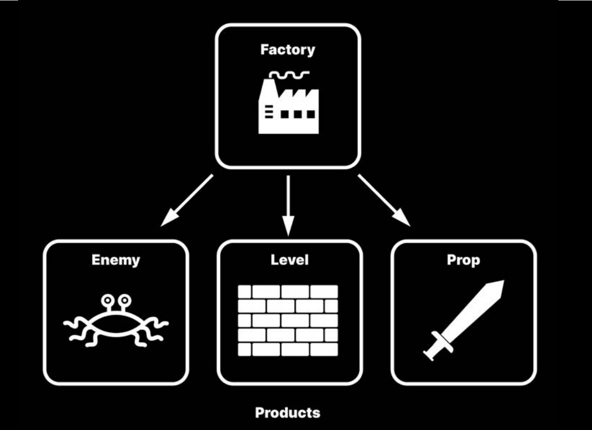
Đôi khi, việc có một đối tượng đặc biệt chuyên đảm nhận việc tạo ra các đối tượng khác sẽ vô cùng hữu ích. Nhiều trò chơi cần sinh ra (spawn) đủ loại thực thể khác nhau trong suốt quá trình chơi, và bạn thường không thể biết trước mình sẽ cần thứ gì lúc runtime cho đến khi thực sự cần đến nó.
Factory pattern (Mẫu Nhà máy) chỉ định một đối tượng đặc biệt gọi là — đúng như bạn đoán đấy — một nhà máy (factory) cho mục đích này. Ở cấp độ cơ bản, nó đóng gói (encapsulates) nhiều chi tiết liên quan đến việc khởi tạo các "sản phẩm" (products) của mình. Lợi ích tức thì là giúp mã nguồn của bạn trở nên gọn gàng, bớt rối rắm hơn.
Tuy nhiên, nếu mỗi sản phẩm đều tuân theo một interface chung hoặc kế thừa từ một lớp cơ sở (base class) chung, bạn có thể tiến thêm một bước nữa: để bản thân từng sản phẩm tự chứa nhiều logic khởi tạo của riêng nó hơn, qua đó che giấu các chi tiết đó khỏi chính nhà máy. Nhờ vậy, việc bổ sung các loại đối tượng mới sẽ trở nên dễ mở rộng (extensible) hơn rất nhiều.
Bạn cũng có thể chia nhỏ (subclass) lớp Factory để tạo ra nhiều nhà máy chuyên biệt dành riêng cho từng loại sản phẩm cụ thể. Cách làm này giúp ích rất nhiều khi cần sinh kẻ địch (enemies), chướng ngại vật (obstacles), hoặc bất cứ thứ gì khác tại thời điểm chạy game (runtime).
Ví dụ: Một nhà máy đơn giản (Example: A simple factory)
Hãy tưởng tượng bạn muốn xây dựng một mẫu Factory để khởi tạo (instantiate) các vật phẩm cho một màn chơi. Bạn có thể dùng Prefab để tạo các GameObject, nhưng đồng thời bạn cũng muốn chạy một số hành vi tùy chỉnh riêng mỗi khi tạo ra từng bản sao (instance).
Thay vì sử dụng các câu lệnh điều kiện if hoặc switch để duy trì logic này, hãy tạo một interface tên là IProduct và một lớp trừu tượng (abstract class) tên là Factory:
public interface IProduct
{
public string ProductName { get; set; }
public void Initialize();
}
public abstract class Factory : MonoBehaviour
{
public abstract IProduct GetProduct(Vector3 position);
// Phương thức dùng chung với tất cả các nhà máy (shared method with all factories)
// …
}Các sản phẩm cần tuân theo một khuôn mẫu cụ thể cho các phương thức của chúng, nhưng ngoài điều đó ra thì chúng không chia sẻ chung chức năng nào khác. Do đó, bạn định nghĩa interface IProduct.
Ngược lại, các nhà máy (Factories) có thể cần chia sẻ một số chức năng chung, vì vậy ví dụ này sử dụng lớp trừu tượng (abstract class). Chỉ cần lưu ý tuân thủ Nguyên lý thay thế Liskov (Liskov substitution principle) trong bộ nguyên lý SOLID khi sử dụng các lớp con (subclasses).
Chúng sẽ tạo thành một cấu trúc giống như sơ đồ dưới đây:
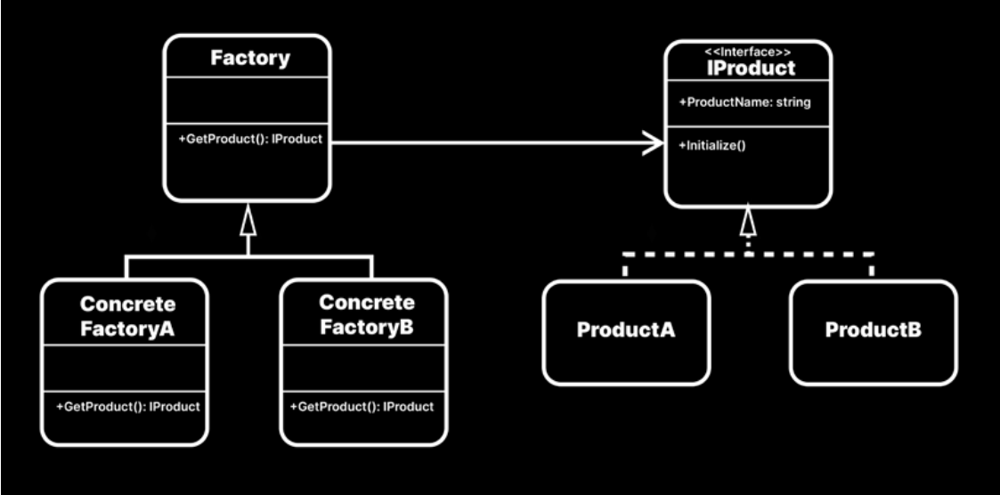
Interface IProduct định nghĩa những điểm chung giữa các sản phẩm. Trong trường hợp này, bạn chỉ đơn giản có một thuộc tính ProductName và bất kỳ logic nào mà sản phẩm sẽ thực thi trong hàm Initialize.
Sau đó, bạn có thể định nghĩa bao nhiêu sản phẩm tùy thích (ProductA, ProductB, v.v.) miễn là chúng tuân thủ interface IProduct.
Lớp cơ sở Factory có phương thức GetProduct trả về một đối tượng kiểu IProduct. Vì nó là lớp trừu tượng (abstract), bạn không thể trực tiếp tạo các bản thể (instances) của Factory. Thay vào đó, bạn kế thừa ra một vài lớp con cụ thể (ConcreteFactoryA và ConcreteFactoryB) — đây mới là những lớp thực sự lấy ra các sản phẩm khác nhau.
Phương thức GetProduct trong ví dụ này nhận vào một tọa độ Vector3 position để bạn có thể dễ dàng khởi tạo một Prefab GameObject tại một vị trí xác định. Một trường dữ liệu (field) trong mỗi nhà máy cụ thể cũng sẽ lưu trữ Prefab mẫu tương ứng của nó.
Dưới đây là mã nguồn mẫu cho ProductA và ConcreteFactoryA:
public class ProductA : MonoBehaviour, IProduct
{
[SerializeField] private string productName = "ProductA";
public string ProductName { get => productName; set => productName = value ; }
private ParticleSystem particleSystem;
public void Initialize()
{
// Bất kỳ logic đặc thù nào dành riêng cho sản phẩm này
gameObject.name = productName;
particleSystem = GetComponentInChildren<ParticleSystem>();
particleSystem?.Stop();
particleSystem?.Play();
}
}
public class ConcreteFactoryA : Factory
{
[SerializeField] private ProductA productPrefab;
public override IProduct GetProduct(Vector3 position)
{
// Tạo một bản sao Prefab và lấy component sản phẩm ra
GameObject instance = Instantiate(productPrefab.gameObject, position, Quaternion.identity);
ProductA newProduct = instance.GetComponent<ProductA>();
// Mỗi sản phẩm tự chứa logic khởi tạo của riêng nó
newProduct.Initialize();
return newProduct;
}
}Ở đây, bạn đã biến các lớp sản phẩm thành những MonoBehaviour triển khai IProduct để tận dụng lợi thế của hệ thống Prefab trong nhà máy.
Hãy chú ý cách mỗi sản phẩm có thể sở hữu phiên bản hàm Initialize của riêng mình. Prefab mẫu ProductA có chứa một ParticleSystem, và hiệu ứng hạt này sẽ phát lên khi ConcreteFactoryA khởi tạo một bản sao. Bản thân nhà máy không hề chứa bất kỳ logic cụ thể nào để kích hoạt hiệu ứng hạt; nó chỉ đơn thuần gọi phương thức Initialize — vốn là phương thức chung của mọi sản phẩm.
Hãy khám phá dự án mẫu (sample project) đi kèm để xem cách component ClickToCreate chuyển đổi qua lại giữa các nhà máy nhằm tạo ra ProductA và ProductB với những hành vi khác nhau: ProductB phát ra âm thanh khi xuất hiện, trong khi ProductA kích hoạt hiệu ứng hạt (particle effect).
Ưu điểm và nhược điểm (Pros and cons)
Bạn sẽ hưởng lợi nhiều nhất từ Factory pattern khi cần thiết lập nhiều loại sản phẩm khác nhau. Việc định nghĩa thêm các loại sản phẩm mới trong ứng dụng sẽ không làm thay đổi các sản phẩm hiện có, cũng không đòi hỏi bạn phải chỉnh sửa lại những đoạn code cũ trước đó.
Việc tách biệt logic nội bộ của từng sản phẩm vào lớp riêng của nó giúp mã nguồn của nhà máy luôn ngắn gọn. Mỗi nhà máy chỉ biết việc gọi Initialize trên từng sản phẩm mà không cần phải nắm rõ các chi tiết ẩn sâu bên dưới.
Nhược điểm của mẫu này là bạn phải tạo ra một số lượng các lớp và lớp con để triển khai nó. Giống như các mẫu thiết kế khác, điều này làm phát sinh thêm một chút chi phí cấu trúc (overhead) — thứ có thể là không cần thiết nếu game của bạn không có quá nhiều chủng loại sản phẩm đa dạng.
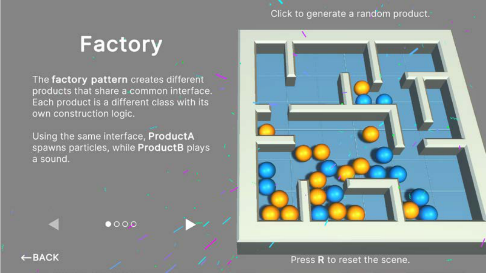
Cải tiến (Improvements)
Cách triển khai Factory pattern trên thực tế có thể biến thiên rất đa dạng so với những gì được trình bày ở đây. Hãy cân nhắc những điều chỉnh sau khi tự xây dựng mẫu Factory của riêng bạn:
- Sử dụng từ điển (Dictionary) để tìm kiếm sản phẩm: Bạn có thể lưu trữ các sản phẩm dưới dạng các cặp khóa–giá trị (key-value pairs) trong một
Dictionary. Hãy dùng một định danh chuỗi duy nhất (ví dụ: Tên hoặc một ID nào đó) làm khóa (key) và kiểu (type) làm giá trị (value). Việc này giúp quá trình truy xuất sản phẩm và/hoặc nhà máy tương ứng của chúng trở nên thuận tiện hơn. - Biến nhà máy (hoặc trình quản lý nhà máy) thành tĩnh (static): Cách này giúp việc gọi sử dụng dễ dàng hơn nhưng đòi hỏi thiết lập bổ sung. Các lớp
staticsẽ không hiển thị trong cửa sổ Inspector của Unity, vì vậy bạn cũng sẽ cần biến tập hợp sản phẩm của mình thànhstatic. - Áp dụng cho cả các đối tượng không phải GameObject và không phải MonoBehaviour: Đừng giới hạn bản thân trong phạm vi Prefab hay các component đặc thù của Unity. Factory pattern có thể hoạt động với bất kỳ đối tượng C# thuần nào.
- Kết hợp với mẫu Object Pool: Các nhà máy không nhất thiết lúc nào cũng phải
Instantiatehay tạo mới đối tượng hoàn toàn. Chúng cũng có thể truy xuất những đối tượng đã tồn tại sẵn trên Hierarchy. Nếu bạn đang phải khởi tạo rất nhiều đối tượng cùng lúc (ví dụ: đạn bắn ra từ vũ khí), hãy kết hợp sử dụng Object Pool pattern để quản lý bộ nhớ tối ưu hơn.
Các nhà máy có thể sinh ra bất kỳ yếu tố gameplay nào ngay khi cần (on an as-needed basis). Tuy nhiên, lưu ý rằng việc tạo sản phẩm thường không phải là mục đích duy nhất của chúng. Bạn có thể sử dụng Factory pattern như một phần của một tác vụ lớn hơn khác (chẳng hạn như thiết lập các phần tử giao diện UI trong một hộp thoại hoặc dựng các phân cảnh của màn chơi).
Object Pool (Hồ Chứa Đối Tượng)
Quản lý vòng đời (lifecycle) của vô số đối tượng bên trong cảnh game (scene) là chìa khóa để đạt được hiệu năng tối ưu. Mặc dù hệ thống quản lý bộ nhớ tự động của C# mang lại sự tiện lợi thông qua bộ thu gom rác (Garbage Collector - GC), tính năng này cũng có thể gây ra hiện tượng giật khựng (stutters) hoặc tụt khung hình đột ngột (spikes) dễ nhận thấy khi các đối tượng bị tạo mới và hủy bỏ liên tục.
Để giảm thiểu vấn đề này, hãy cân nhắc sử dụng Object Pool pattern (Mẫu Hồ chứa đối tượng). Kỹ thuật này tối ưu hóa hiệu năng bằng cách tái sử dụng các GameObject. Thay vì liên tục tạo mới (create) và hủy (destroy) các đối tượng, bạn duy trì một "hồ chứa" (pool) gồm các đối tượng đã được khởi tạo trước nhưng đang ở trạng thái vô hiệu hóa (deactivated). Khi cần đến một đối tượng, ứng dụng của bạn không cần Instantiate nó nữa. Thay vào đó, bạn yêu cầu lấy GameObject từ trong pool ra và kích hoạt (enable) nó lên.
Sau khi sử dụng xong, đối tượng đó sẽ bị vô hiệu hóa và trả về lại hồ chứa, tránh được chi phí đắt đỏ của việc hủy đối tượng (destruction). Lý tưởng nhất, bạn nên khởi tạo Object Pool vào những thời điểm ít gây chú ý (ví dụ: trong màn hình chờ tải game - loading screen) để ngăn ngừa hiện tượng giật lag. Kỹ thuật tối ưu hóa này đặc biệt hữu ích bất cứ khi nào bạn cần tạo và hủy số lượng lớn GameObject.
Nếu bạn từng sử dụng ParticleSystem của Unity, tức là bạn đã có trải nghiệm trực tiếp với một Object Pool rồi đấy. Component ParticleSystem có một thiết lập giới hạn số lượng hạt tối đa (max number of particles). Nó đơn giản là tái chế lại các hạt hiện có, ngăn không cho hiệu ứng vượt quá con số tối đa đã định. Object Pool hoạt động hoàn toàn tương tự, nhưng áp dụng được với bất kỳ GameObject nào do bạn lựa chọn.
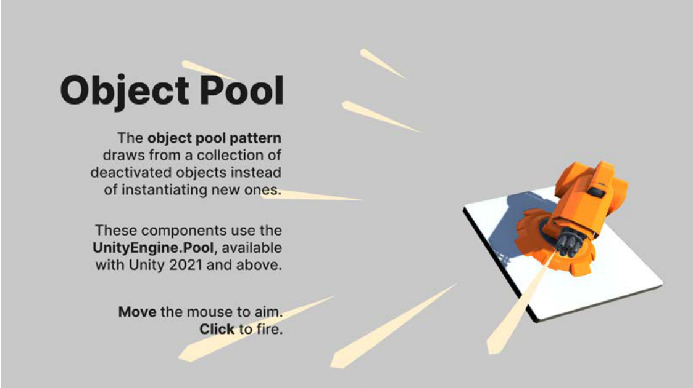
Ví dụ: Hệ thống Pool đơn giản (Example: Simple pool system)
Unity có tích hợp sẵn tính năng Object Pooling thông qua namespace UnityEngine.Pool. Có mặt từ phiên bản Unity 2021 LTS trở đi, namespace này hỗ trợ việc quản lý các hồ chứa đối tượng một cách thuận tiện, tự động hóa các khía cạnh như vòng đời đối tượng và kiểm soát kích thước hồ chứa.
Tuy nhiên, việc tự tay xây dựng một Object Pool sẽ giúp bạn hiểu rõ các nguyên lý cốt lõi đằng sau cách vận hành của mẫu thiết kế này. Hãy cùng đi qua từng bước xây dựng một Object Pool đơn giản để xem cơ chế hoạt động thực tế của nó.
Hãy xét một hệ thống pooling đơn giản với hai MonoBehaviour được định nghĩa như sau:
- Một lớp
ObjectPoollưu trữ tập hợp cácGameObjectđể lấy ra sử dụng. - Một component
PooledObjectđược gắn vào Prefab nhằm giúp mỗi bản sao (cloned item) giữ được một tham chiếu ngược về hồ chứa của nó.
Trong lớp ObjectPool, bạn thiết lập các trường mô tả kích thước ban đầu của hồ chứa, Prefab PooledObject mà bạn muốn lưu trữ, cùng một tập hợp (collection) dùng làm bản thân hồ chứa đó (trong ví dụ này là một cấu trúc ngăn xếp Stack).
public class ObjectPool : MonoBehaviour
{
[SerializeField] private int initPoolSize;
[SerializeField] private PooledObject objectToPool;
// Lưu trữ các đối tượng trong pool vào một tập hợp (Stack)
private Stack<PooledObject> stack;
private void Start()
{
SetupPool();
}
// Tạo hồ chứa (nên gọi khi độ trễ không làm người chơi chú ý)
private void SetupPool()
{
stack = new Stack<PooledObject>();
PooledObject instance = null;
for (int i = 0; i < initPoolSize; i++)
{
instance = Instantiate(objectToPool);
instance.Pool = this;
instance.gameObject.SetActive(false);
stack.Push(instance);
}
}Phương thức SetupPool làm nhiệm vụ điền đầy dữ liệu cho Object Pool. Nó tạo một ngăn xếp Stack mới chứa các PooledObject, sau đó khởi tạo các bản sao của objectToPool để lấp đầy ngăn xếp với số lượng phần tử bằng initPoolSize. Hãy gọi SetupPool trong hàm Start để đảm bảo nó chỉ chạy một lần khi bắt đầu màn chơi.
Bạn cũng sẽ cần các phương thức để lấy một phần tử từ trong hồ ra (GetPooledObject) và trả một phần tử về lại hồ chứa (ReturnToPool):
// Trả về GameObject khả dụng đầu tiên từ trong hồ chứa
public PooledObject GetPooledObject()
{
// Nếu hồ chứa không đủ lớn (đã cạn), hãy khởi tạo một PooledObject mới
if (stack.Count == 0)
{
PooledObject newInstance = Instantiate(objectToPool);
newInstance.Pool = this;
return newInstance;
}
// Ngược lại, chỉ cần lấy phần tử tiếp theo từ danh sách ra
PooledObject nextInstance = stack.Pop();
nextInstance.gameObject.SetActive(true);
return nextInstance;
}
public void ReturnToPool(PooledObject pooledObject)
{
stack.Push(pooledObject);
pooledObject.gameObject.SetActive(false);
}
}GetPooledObject chỉ tạo mới một PooledObject khi hồ chứa đã trống rỗng. Trong các trường hợp còn lại, nó đơn giản trả về phần tử khả dụng tiếp theo. Nếu kích thước hồ chứa đủ lớn, phần lớn thời gian bạn sẽ chỉ nhận về một tham chiếu tới một GameObject đã tồn tại sẵn.
Phía client gọi hàm GetPooledObject sau đó sẽ chịu trách nhiệm di chuyển hoặc xoay đối tượng vừa lấy ra tới đúng vị trí cần thiết.
Mỗi phần tử trong hồ chứa sẽ gắn một component nhỏ tên là PooledObject, chỉ để giữ tham chiếu tới ObjectPool:
public class PooledObject : MonoBehaviour
{
private ObjectPool pool;
public ObjectPool Pool { get => pool; set => pool = value; }
public void Release()
{
pool.ReturnToPool(this);
}
}Việc gọi hàm Release sẽ vô hiệu hóa GameObject và đưa nó trở lại hàng đợi của hồ chứa.
Dự án mẫu đi kèm có bao gồm một script ExampleGun gắn trên một GameObject. Script này lưu giữ một tham chiếu tới Object Pool. Khi người chơi bắn súng, script vũ khí sẽ gọi phương thức GetPooledObject của hồ chứa thay vì gọi hàm Object.Instantiate.
Trên chính viên đạn (projectile) có gắn script ExampleProjectile cùng với script PooledObject. Lớp ExampleProjectile có một phương thức Deactivate để tắt từng GameObject viên đạn đã bắn ra sau vài giây, trả nó về lại hồ chứa để sẵn sàng tái sử dụng.
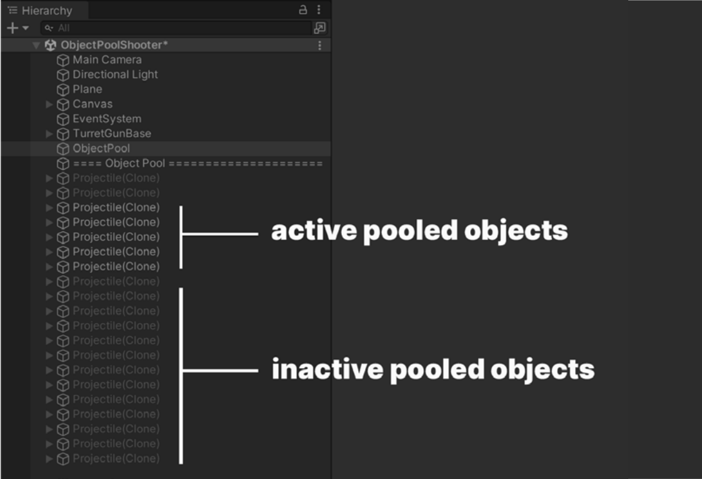
Bằng cách này, nhìn bề ngoài có vẻ như bạn đang bắn ra hàng trăm viên đạn bay khỏi màn hình, nhưng trên thực tế bạn chỉ đơn giản là tắt chúng đi và tái chế lại. Chỉ cần đảm bảo kích thước hồ chứa (pool size) của bạn đủ lớn để hiển thị số lượng đối tượng đang hoạt động đồng thời cùng một lúc.
Nếu bạn cần vượt quá kích thước ban đầu của hồ chứa, hồ chứa vẫn có thể khởi tạo thêm các đối tượng phụ trợ. Tuy nhiên, trong hầu hết thời gian, nó sẽ rút từ các đối tượng đang không hoạt động (inactive) hiện có.
Nếu bạn muốn xem cách triển khai một Object Pool tự viết từ con số không, hãy tham khảo thư mục ManualExample trong dự án mẫu.
Sử dụng gói có sẵn UnityEngine.Pool
Unity cung cấp sẵn một hệ thống Object Pooling tích hợp thông qua namespace UnityEngine.Pool (có mặt từ Unity 2021 LTS trở lên), vì vậy bạn không cần phải tự tạo các lớp PooledObject hay ObjectPool như trong ví dụ trước nữa.
Thư viện này mang đến cho bạn một lớp ObjectPool dựa trên ngăn xếp (stack-based) để theo dõi các đối tượng theo mẫu thiết kế Object Pool. Tùy thuộc vào nhu cầu, bạn cũng có thể sử dụng CollectionPool (dành cho List, HashSet, Dictionary, v.v.).
Dự án mẫu chỉ cho bạn cách xây dựng lại hồ chứa đạn tạo thủ công trước đó bằng cách sử dụng ObjectPool dựng sẵn từ UnityEngine.Pool:
using UnityEngine.Pool;
public class RevisedGun : MonoBehaviour
{
// …
// ObjectPool dựa trên ngăn xếp (Stack-based) có sẵn từ Unity 2021 trở lên
private IObjectPool<RevisedProjectile> objectPool;
// Ném ra ngoại lệ (exception) nếu cố tình trả về một phần tử vốn đã nằm sẵn trong pool
[SerializeField] private bool collectionCheck = true;
// Các tùy chọn bổ sung để kiểm soát sức chứa mặc định và kích thước tối đa của pool
[SerializeField] private int defaultCapacity = 20;
[SerializeField] private int maxSize = 100;
private void Awake()
{
objectPool = new ObjectPool<RevisedProjectile>(
CreateProjectile, OnGetFromPool, OnReleaseToPool,
OnDestroyPooledObject, collectionCheck, defaultCapacity, maxSize);
}
// Được gọi khi tạo mới một phần tử để đưa vào hồ chứa
private RevisedProjectile CreateProjectile()
{
RevisedProjectile projectileInstance = Instantiate(projectilePrefab);
projectileInstance.ObjectPool = objectPool;
return projectileInstance;
}
// Được gọi khi trả một phần tử về lại hồ chứa
private void OnReleaseToPool(RevisedProjectile pooledObject)
{
pooledObject.gameObject.SetActive(false);
}
// Được gọi khi lấy phần tử tiếp theo từ hồ chứa ra sử dụng
private void OnGetFromPool(RevisedProjectile pooledObject)
{
pooledObject.gameObject.SetActive(true);
}
// Được gọi khi vượt quá số lượng phần tử tối đa của hồ chứa (tức là hủy đối tượng dư thừa)
private void OnDestroyPooledObject(RevisedProjectile pooledObject)
{
Destroy(pooledObject.gameObject);
}
private void FixedUpdate()
{
// …
}
}Phần lớn đoạn script hoạt động tương tự như script ExampleGun ban đầu. Tuy nhiên, hàm khởi tạo (constructor) của ObjectPool giờ đây cung cấp khả năng rất hữu ích để thiết lập sẵn một số logic khi:
- Lần đầu tạo một phần tử để đưa vào hồ chứa (
CreateProjectile) - Lấy một phần tử từ hồ chứa ra (
OnGetFromPool) - Trả một phần tử về lại hồ chứa (
OnReleaseToPool) - Hủy một đối tượng của hồ chứa (ví dụ: khi bạn chạm ngưỡng giới hạn tối đa -
OnDestroyPooledObject)
Khi đó bạn chỉ cần định nghĩa các phương thức tương ứng để truyền vào constructor.
Hãy chú ý rằng ObjectPool dựng sẵn còn bao gồm các tùy chọn cho kích thước mặc định (defaultCapacity) và kích thước tối đa (maxSize) của hồ chứa. Các phần tử vượt quá kích thước tối đa của hồ chứa sẽ kích hoạt hành động tự hủy, giúp kiểm soát chặt chẽ lượng bộ nhớ sử dụng.
Script của viên đạn cũng được chỉnh sửa đôi chút để lưu giữ tham chiếu tới IObjectPool. Điều này giúp việc giải phóng đối tượng về lại hồ chứa thuận tiện hơn một chút:
public class RevisedProjectile : MonoBehaviour
{
// …
private IObjectPool<RevisedProjectile> objectPool;
// Thuộc tính public để cấp cho viên đạn một tham chiếu tới ObjectPool của nó
public IObjectPool<RevisedProjectile> ObjectPool { set => objectPool = value; }
// …
}API UnityEngine.Pool giúp việc thiết lập các Object Pool nhanh chóng hơn rất nhiều vì giờ đây bạn không còn phải tự xây dựng lại mẫu thiết kế này từ đầu nữa. Vậy là bớt đi được một "bánh xe" phải tự phát minh lại.
Ưu điểm và nhược điểm (Pros and cons)
Object Pool là một công cụ mạnh mẽ để tối ưu hóa hiệu năng, nhưng hãy lưu ý những điểm cần cân nhắc đi kèm với mẫu thiết kế này.
Object Pool mang lại những ưu điểm sau:
- Giảm chi phí thu gom rác (Reduced garbage collection overhead): Tái sử dụng các đối tượng thay vì liên tục tạo mới và hủy bỏ chúng giúp giảm thiểu nhu cầu chạy Garbage Collection. Điều này ngăn chặn tình trạng vọt khung hình (spikes) và giật cục (stutters) lúc đang chơi.
- Cải thiện hiệu năng (Improved performance): Khởi tạo trước các đối tượng và chỉ kích hoạt lại chúng khi cần giúp mang lại hiệu năng mượt mà hơn trong các tựa game nhịp độ nhanh (chẳng hạn như game bắn súng).
- Tối ưu hóa quá trình khởi tạo (Optimized initialization): Tối ưu tài nguyên và thời gian khởi động ứng dụng bằng cách phân bổ việc tạo đối tượng vào những thời điểm ít quan trọng hơn (như màn hình chờ).
Tuy nhiên, hãy ghi nhớ những nhược điểm sau:
- Tăng độ phức tạp (Increased complexity): Object Pool đòi hỏi công sức quản lý nhiều hơn. Hãy chắc chắn rằng bạn khởi tạo và giải phóng (reset trạng thái) đối tượng đúng cách. Nếu không, nó rất dễ sinh ra lỗi (bugs) ngoài ý muốn.
- Tiêu tốn bộ nhớ tĩnh (Memory usage): Dù làm giảm tần suất thu gom rác, Object Pool lại có thể dẫn đến mức tiêu thụ bộ nhớ tĩnh cao hơn. Các hồ chứa luôn giữ một số lượng đối tượng định trước trong bộ nhớ, ngay cả khi chúng đang không được sử dụng. Hãy cân đối kích thước hồ chứa phù hợp với nhu cầu thực tế của dự án.
- Đòi hỏi quản lý kỹ lưỡng hơn (More management): Việc xác định kích thước tối ưu cho một Object Pool có thể khá nan giải. Một hồ chứa quá nhỏ có thể dẫn đến việc vẫn phải cấp phát thêm bộ nhớ thường xuyên, trong khi một hồ chứa quá lớn lại gây lãng phí lượng bộ nhớ đã cấp phát.
Cải tiến (Improvements)
Ví dụ bên trên chỉ là một minh họa đơn giản. Khi triển khai Object Pool cho các dự án thực tế, hãy cân nhắc những nâng cấp sau:
- Biến nó thành tĩnh (static) hoặc một Singleton: Nếu bạn cần sinh các đối tượng trong hồ chứa từ nhiều nguồn khác nhau, hãy cân nhắc biến Object Pool thành
staticvà có thể tái sử dụng. Điều này giúp truy cập nó từ bất kỳ đâu trong ứng dụng nhưng sẽ không thể kéo thả trên Inspector. Ngoài ra, bạn có thể kết hợp mẫu Object Pool với mẫu Singleton để có thể truy cập toàn cục một cách dễ dàng. - Sử dụng Dictionary để quản lý nhiều hồ chứa (multiple pools): Nếu bạn có nhiều loại Prefab khác nhau cần đưa vào pool, hãy lưu trữ chúng trong các hồ chứa riêng biệt và lưu một cặp khóa–giá trị (key-value pair) để biết cần truy vấn vào hồ chứa nào (
InstanceIDcủa Prefab có thể đóng vai trò làm khóa duy nhất). - Thu hồi các GameObject không còn dùng đến một cách sáng tạo: Một phần của việc tận dụng Object Pool hiệu quả là ẩn các đối tượng không còn dùng tới và trả chúng về hồ chứa. Hãy tận dụng mọi cơ hội để vô hiệu hóa một đối tượng pooled (ví dụ: khi bay ra khỏi màn hình, bị che khuất bởi vụ nổ, v.v.).
- Kiểm tra lỗi (Check for errors): Tránh việc giải phóng (release) một đối tượng vốn đã nằm sẵn trong hồ chứa. Khi tạo một bản thể của
ObjectPool<T>, bạn có thể đặt tham sốcollectionCheckthànhtrue. Thiết lập này sẽ ném ra một ngoại lệ (exception) trong Editor nếu bạn cố trả về hồ chứa một đối tượng đã có mặt ở đó rồi. - Thêm kích thước tối đa / giới hạn trần (maximum size/cap): Quá nhiều đối tượng nằm trong hồ chứa sẽ ngốn bộ nhớ. Hãy sử dụng tham số
maxSizetrong hàm khởi tạoObjectPoolđể giới hạn kích thước trần cho hồ chứa của bạn.
Cách bạn sử dụng Object Pool sẽ khác nhau tùy theo từng ứng dụng. Mẫu thiết kế này thường xuyên xuất hiện khi một khẩu súng hoặc vũ khí cần bắn ra hàng loạt viên đạn, chẳng hạn như trong thể loại game bắn súng "mưa đạn" (bullet hell shooter).
Mỗi lần bạn khởi tạo một số lượng lớn đối tượng, bạn đều đối mặt với nguy cơ gây ra một nhịp khựng nhỏ do đột biến thu gom rác (garbage-collection spike). Một Object Pool sẽ giải quyết triệt để vấn đề này để giữ cho trải nghiệm gameplay của bạn luôn mượt mà.
Singleton Pattern (Mẫu Đơn Bản)
Singleton thường mang tiếng xấu. Nếu bạn mới làm quen với lập trình Unity, Singleton rất có thể là một trong những mẫu thiết kế dễ nhận diện đầu tiên mà bạn bắt gặp. Đồng thời, nó cũng là một trong những mẫu thiết kế bị chỉ trích nhiều nhất.
Theo định nghĩa gốc của nhóm Gang of Four, Singleton pattern:
- Đảm bảo rằng một lớp (class) chỉ có thể khởi tạo duy nhất một bản thể (instance) của chính nó.
- Cung cấp một điểm truy cập toàn cục (global access) tới bản thể duy nhất đó.
Mẫu này rất hữu ích nếu bạn cần có chính xác một đối tượng đứng ra điều phối các hoạt động trên toàn bộ cảnh game (scene). Ví dụ, bạn có thể muốn có đúng một GameManager trong scene để chỉ đạo vòng lặp game chính. Bạn cũng có lẽ chỉ muốn duy nhất một trình quản lý tệp (file manager) ghi dữ liệu xuống hệ thống tệp tại một thời điểm. Những đối tượng trung tâm, mang tính chất quản lý (manager-level objects) như vậy thường là những ứng cử viên sáng giá cho mẫu Singleton.
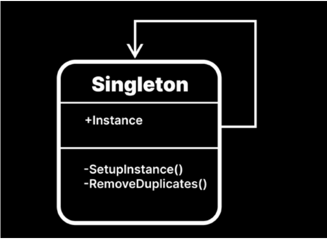
Trong cuốn Game Programming Patterns, tác giả cho rằng Singleton gây hại nhiều hơn lợi và liệt kê nó vào danh sách anti-pattern (mẫu thiết kế phản tác dụng). Tiếng xấu này bắt nguồn từ chính sự dễ sử dụng của nó, khiến nó rất dễ bị lạm dụng. Các lập trình viên thường có xu hướng áp dụng Singleton vào những tình huống không phù hợp, tạo ra các trạng thái toàn cục (global states) hoặc các sự phụ thuộc (dependencies) không cần thiết.
Hãy cùng xem xét cách xây dựng một Singleton trong Unity, cân đo đong đếm điểm mạnh và điểm yếu của nó. Sau đó, bạn có thể tự quyết định xem có đáng để đưa nó vào ứng dụng của mình hay không.
Ví dụ: Singleton đơn giản (Example: Simple singleton)
Một trong những cách viết Singleton đơn giản nhất có dạng như sau:
using UnityEngine;
public class SimpleSingleton : MonoBehaviour
{
public static SimpleSingleton Instance;
private void Awake()
{
if (Instance == null)
{
Instance = this;
}
else
{
Destroy(gameObject);
}
}
}Trường public static Instance sẽ giữ bản thể duy nhất của SimpleSingleton trong scene.
Trong phương thức Awake, ta kiểm tra xem nó đã được gán hay chưa. Nếu Instance hiện đang là null, thì Instance sẽ được gán bằng chính đối tượng cụ thể này (this). Đây chắc chắn phải là đối tượng Singleton đầu tiên trong scene.
Ngược lại, bản thể này chắc chắn là một bản sao dư thừa (duplicate); bạn gọi Destroy(gameObject) để đảm bảo Singleton của bạn chỉ có duy nhất một component như vậy tồn tại trong scene.
Nếu bạn gắn script này vào nhiều hơn một GameObject trên Hierarchy lúc runtime, logic trong Awake sẽ giữ lại đối tượng đầu tiên và hủy bỏ toàn bộ phần còn lại.
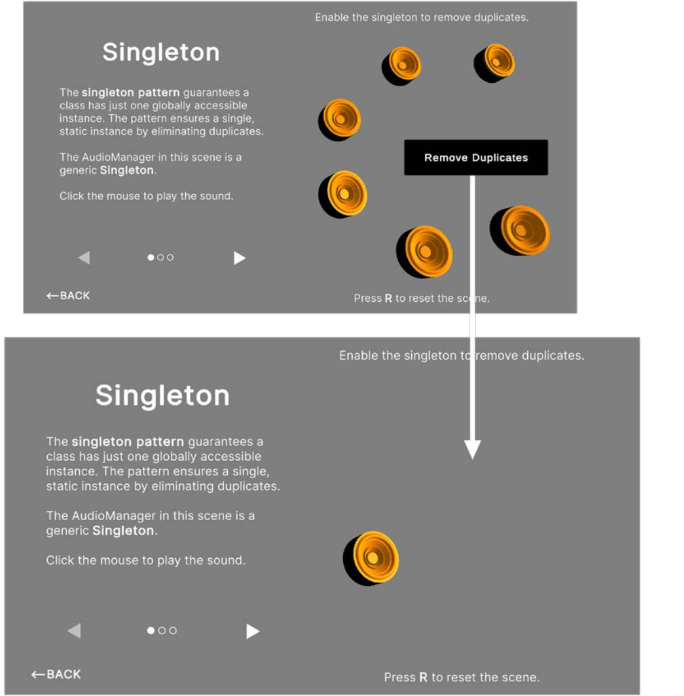
Trường Instance mang phạm vi public và static. Bất kỳ component nào cũng có quyền truy cập toàn cục tới đối tượng Singleton độc nhất này từ bất cứ đâu trong scene.
Tính bền vững qua các Scene và Khởi tạo trễ (Persistence and lazy instantiation)
Lớp SimpleSingleton hoạt động đúng như những gì đã viết. Tuy nhiên, nó mắc phải hai vấn đề:
- Việc tải một scene mới (loading a new scene) sẽ làm hủy mất
GameObjectđó. - Bạn bắt buộc phải thiết lập sẵn đối tượng Singleton đó trên Hierarchy trước khi sử dụng nó.
Bởi vì Singleton thường đóng vai trò là một script quản lý hiện diện xuyên suốt trò chơi (omnipresent manager script), bạn có thể hưởng lợi từ việc giữ cho nó tồn tại bền vững qua các màn chơi bằng lệnh DontDestroyOnLoad.
Hơn nữa, bạn có thể áp dụng kỹ thuật khởi tạo trễ (lazy instantiation) để tự động xây dựng Singleton ngay tại thời điểm bạn cần đến nó lần đầu tiên. Bạn chỉ cần thêm một đoạn logic tạo mới một GameObject rồi gắn component Singleton tương ứng vào.
Phiên bản Singleton cải tiến sẽ trông như thế này:
public class Singleton : MonoBehaviour
{
private static Singleton instance;
public static Singleton Instance
{
get
{
if (instance == null)
{
SetupInstance();
}
return instance;
}
}
private void Awake()
{
if (instance == null)
{
instance = this;
DontDestroyOnLoad(this.gameObject);
}
else
{
Destroy(gameObject);
}
}
private static void SetupInstance()
{
instance = FindObjectOfType<Singleton>();
if (instance == null)
{
GameObject gameObj = new GameObject();
gameObj.name = "Singleton";
instance = gameObj.AddComponent<Singleton>();
DontDestroyOnLoad(gameObj);
}
}
}Instance giờ đây là một thuộc tính (property) public trỏ tới trường lưu trữ (backing field) private static instance. Lần đầu tiên bạn truy cập tới Singleton, nó sẽ kiểm tra sự tồn tại của instance bên trong khối get. Nếu chưa tồn tại, phương thức SetupInstance sẽ tạo mới một GameObject cùng với component thích hợp.
Hàm DontDestroyOnLoad(gameObject) ngăn không cho việc chuyển cảnh (scene load) xóa mất Singleton khỏi Hierarchy. Bản thể Singleton giờ đây đã trở nên bền vững (persistent), giữ nguyên trạng thái hoạt động ngay cả khi bạn chuyển đổi giữa các scene trong game.
Sử dụng Generics (Using generics)
Cả hai phiên bản script trên đều chưa giải quyết được bài toán làm thế nào để tạo ra nhiều loại Singleton khác nhau trong cùng một scene. Ví dụ, nếu bạn muốn có một Singleton hoạt động như AudioManager và một Singleton khác làm GameManager, hiện tại chúng không thể cùng tồn tại chung mã nguồn được. Bạn sẽ phải nhân bản đoạn code liên quan và dán logic đó vào từng class một.
Thay vào đó, hãy tạo một phiên bản tổng quát (generic) của script như sau:
public class Singleton<T> : MonoBehaviour where T : Component
{
private static T instance;
public static T Instance
{
get
{
if (instance == null)
{
instance = (T)FindObjectOfType(typeof(T));
if (instance == null)
{
SetupInstance();
}
}
return instance;
}
}
public virtual void Awake()
{
RemoveDuplicates();
}
private static void SetupInstance()
{
instance = (T)FindObjectOfType(typeof(T));
if (instance == null)
{
GameObject gameObj = new GameObject();
gameObj.name = typeof(T).Name;
instance = gameObj.AddComponent<T>();
DontDestroyOnLoad(gameObj);
}
}
private void RemoveDuplicates()
{
if (instance == null)
{
instance = this as T;
DontDestroyOnLoad(gameObject);
}
else
{
Destroy(gameObject);
}
}
}Cách làm này cho phép bạn biến bất kỳ lớp nào thành một Singleton. Khi khai báo lớp của mình, bạn chỉ cần cho nó kế thừa từ lớp Singleton generic đó. Chẳng hạn, bạn có thể biến một MonoBehaviour tên là GameManager thành một Singleton bằng cách khai báo như sau:
public class GameManager : Singleton<GameManager>
{
// ...
}Sau đó, bạn luôn có thể tham chiếu tới GameManager.Instance (mang tính chất public static) bất cứ khi nào cần sử dụng.
Ưu điểm và nhược điểm (Pros and cons)
Singleton khác biệt với các mẫu thiết kế khác trong tài liệu này ở chỗ nó phá vỡ các nguyên lý SOLID trên nhiều phương diện. Nhiều lập trình viên không thích sử dụng chúng vì hàng loạt lý do:
- Singleton đòi hỏi quyền truy cập toàn cục (global access): Bởi vì bạn sử dụng chúng như những bản thể toàn cục, chúng có thể che giấu rất nhiều sự phụ thuộc (dependencies) ngầm, khiến việc truy tìm và gỡ lỗi (troubleshooting bugs) trở nên khó khăn hơn gấp bội.
- Singleton gây khó khăn cho việc kiểm thử (testing): Các bài kiểm thử đơn vị (Unit tests) bắt buộc phải độc lập với nhau. Do Singleton có thể làm thay đổi trạng thái của nhiều
GameObjectkhắp nơi trong scene, chúng có thể gây nhiễu loạn quá trình kiểm thử của bạn. - Singleton khuyến khích sự gắn kết chặt (tight coupling): Hầu hết các mẫu thiết kế trong hướng dẫn này đều cố gắng tách rời các sự phụ thuộc (decouple dependencies). Singleton lại làm điều ngược lại. Sự gắn kết chặt làm cho việc tái cấu trúc mã nguồn (refactoring) trở nên rất vất vả. Nếu bạn thay đổi một thành phần, bạn có thể làm ảnh hưởng dây chuyền tới mọi thành phần đang kết nối với nó, dẫn đến mã nguồn thiếu sạch sẽ (unclean code).
Những ý kiến phản đối Singleton là rất đáng suy ngẫm. Nếu bạn đang xây dựng một tựa game quy mô lớn (enterprise-level game) mà bạn dự kiến phải bảo trì trong nhiều năm tới, có lẽ bạn nên tránh xa các Singleton.
Tuy nhiên, rất nhiều trò chơi không phải là các ứng dụng cấp doanh nghiệp. Bạn không cần phải mở rộng chúng liên tục theo cách giống như phần mềm nghiệp vụ kinh doanh.
Thực tế, Singleton mang lại một số lợi ích khá hấp dẫn nếu bạn đang xây dựng một trò chơi nhỏ không đòi hỏi khả năng mở rộng phức tạp:
- Singleton tương đối nhanh để học: Bản thân khuôn mẫu cốt lõi của nó khá trực diện và dễ hiểu.
- Singleton thân thiện với người dùng: Để sử dụng Singleton từ một component khác, bạn chỉ cần tham chiếu trực tiếp tới
Instancecông khai và tĩnh. Bản thể Singleton luôn sẵn sàng phục vụ theo yêu cầu từ bất kỳ đối tượng nào trong scene của bạn. - Singleton có hiệu năng tốt: Bởi vì bạn luôn có quyền truy cập toàn cục tới bản thể Singleton tĩnh, bạn có thể tránh được chi phí của việc phải lưu đệm (caching) kết quả từ các lệnh
GetComponenthoặcFind— vốn thường chạy khá chậm.
Nhờ vậy, bạn có thể tạo ra một đối tượng quản lý (ví dụ: trình quản lý luồng game hoặc trình quản lý âm thanh) luôn có thể truy cập được từ mọi GameObject khác trong scene. Ngoài ra, nếu bạn đã triển khai Object Pool, bạn hoàn toàn có thể thiết kế hệ thống pooling của mình dưới dạng một Singleton để việc lấy các đối tượng từ hồ chứa trở nên dễ dàng hơn.
Nếu bạn quyết định sử dụng Singleton trong dự án của mình, hãy giữ số lượng của chúng ở mức tối thiểu. Đừng sử dụng chúng một cách bừa bãi. Hãy chỉ dành riêng Singleton cho một vài script đếm trên đầu ngón tay mà thực sự hưởng lợi lớn từ khả năng truy cập toàn cục.
Command Pattern (Mẫu Mệnh Lệnh)
Là một trong những mẫu thiết kế gốc của nhóm Gang of Four, Command pattern cực kỳ hữu ích bất cứ khi nào bạn muốn theo dõi một chuỗi các hành động cụ thể. Chắc hẳn bạn đã từng thấy Command pattern hoạt động nếu từng chơi một tựa game có tính năng hoàn tác/làm lại (Undo/Redo) hoặc lưu giữ lịch sử thao tác nút bấm (input history) trong một danh sách. Hãy tưởng tượng một tựa game chiến thuật nơi người chơi có thể lên kế hoạch trước cho vài lượt đi (turns) rồi mới thực sự cho thực thi chúng. Đó chính là Command pattern.
Thay vì gọi một phương thức trực tiếp, Command pattern cho phép bạn đóng gói (encapsulate) một hoặc nhiều lời gọi phương thức thành một "đối tượng mệnh lệnh" (command object).
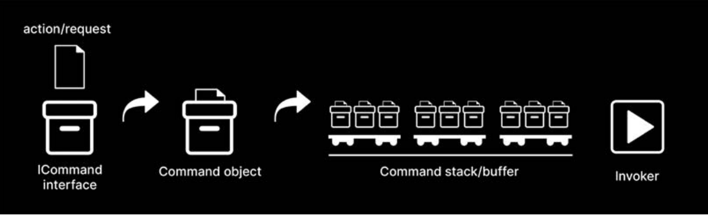
Việc lưu trữ các đối tượng mệnh lệnh này vào một tập hợp như hàng đợi (Queue) hoặc ngăn xếp (Stack) cho phép bạn kiểm soát thời điểm thực thi của chúng. Tập hợp này đóng vai trò như một bộ đệm nhỏ (buffer). Nhờ đó, bạn có thể trì hoãn một chuỗi các hành động để phát lại (playback) sau đó hoặc hoàn tác (undo) chúng.
Để triển khai Command pattern, bạn cần một đối tượng tổng quát dùng để chứa hành động của mình. Đối tượng mệnh lệnh này sẽ nắm giữ logic cần thực hiện cũng như cách thức để hoàn tác chính logic đó.
Đối tượng mệnh lệnh và Trình gọi lệnh (The command object and command invoker)
Có nhiều cách để triển khai mẫu này, dưới đây là một phiên bản sử dụng interface:
public interface ICommand
{
void Execute();
void Undo();
}Trong trường hợp này, mọi hành động gameplay sẽ áp dụng interface ICommand (bạn cũng có thể triển khai bằng một lớp trừu tượng abstract class).
Mỗi đối tượng mệnh lệnh sẽ tự chịu trách nhiệm cho hai phương thức Execute (Thực thi) và Undo (Hoàn tác) của riêng nó. Do đó, việc thêm nhiều mệnh lệnh mới vào game sẽ không làm ảnh hưởng đến bất kỳ mệnh lệnh nào đang tồn tại.
Bạn sẽ cần một lớp khác để thực thi và hoàn tác các mệnh lệnh. Hãy tạo lớp CommandInvoker. Ngoài hai phương thức ExecuteCommand và UndoCommand, nó còn có một ngăn xếp hoàn tác (undoStack) để lưu giữ trình tự các đối tượng mệnh lệnh.
public class CommandInvoker
{
private static Stack<ICommand> undoStack = new Stack<ICommand>();
public static void ExecuteCommand(ICommand command)
{
command.Execute();
undoStack.Push(command);
}
public static void UndoCommand()
{
if (undoStack.Count > 0)
{
ICommand activeCommand = undoStack.Pop();
activeCommand.Undo();
}
}
}Ví dụ: Di chuyển có thể hoàn tác (Example: Undoable movement)
Hãy tưởng tượng bạn muốn di chuyển nhân vật người chơi đi quanh một mê cung trong ứng dụng. Bạn có thể tạo một lớp PlayerMover chịu trách nhiệm dịch chuyển vị trí của người chơi:
public class PlayerMover : MonoBehaviour
{
[SerializeField] private LayerMask obstacleLayer;
private const float boardSpacing = 1f;
public void Move(Vector3 movement)
{
transform.position = transform.position + movement;
}
public bool IsValidMove(Vector3 movement)
{
return !Physics.Raycast(transform.position, movement, boardSpacing, obstacleLayer);
}
}Bạn sẽ truyền một Vector3 vào phương thức Move để dẫn hướng người chơi đi theo bốn hướng la bàn. Bạn cũng có thể sử dụng Raycast để phát hiện các bức tường nằm trên LayerMask tương ứng. Tất nhiên, phần cài đặt chi tiết cho đối tượng mà bạn muốn áp dụng Command pattern hoàn toàn tách biệt với bản thân mẫu thiết kế này.
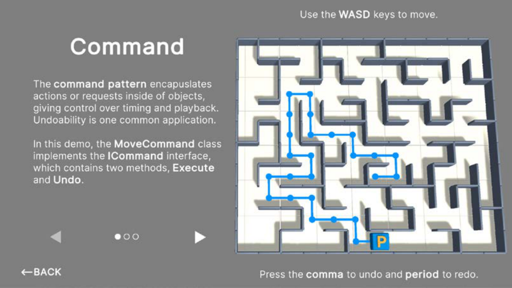
Để tuân theo Command pattern, hãy đóng gói phương thức Move của PlayerMover thành một đối tượng. Thay vì gọi Move trực tiếp, hãy tạo một lớp mới tên là MoveCommand triển khai interface ICommand:
public class MoveCommand : ICommand
{
PlayerMover playerMover;
Vector3 movement;
public MoveCommand(PlayerMover player, Vector3 moveVector)
{
this.playerMover = player;
this.movement = moveVector;
}
public void Execute()
{
playerMover.Move(movement);
}
public void Undo()
{
playerMover.Move(-movement);
}
}ICommand yêu cầu một phương thức Execute để lưu giữ những gì bạn muốn thực hiện. Bất kỳ logic nào bạn muốn hoàn thành sẽ được đặt vào đây, vì vậy ta gọi Move với vector di chuyển movement.
ICommand cũng cần phương thức Undo để khôi phục cảnh game trở về trạng thái trước đó. Trong trường hợp này, logic Undo sẽ trừ đi vector di chuyển (-movement), về bản chất là đẩy người chơi lùi về hướng ngược lại.
Lớp MoveCommand lưu trữ bất kỳ tham số nào mà nó cần để thực thi. Hãy thiết lập các tham số này thông qua hàm khởi tạo (constructor). Ở đây, bạn lưu lại component PlayerMover thích hợp cùng với vector di chuyển.
Sau khi tạo đối tượng mệnh lệnh và lưu lại các tham số cần thiết của nó, hãy sử dụng hai phương thức tĩnh ExecuteCommand và UndoCommand của CommandInvoker để truyền đối tượng MoveCommand vào. Việc này sẽ chạy hàm Execute hoặc Undo của MoveCommand, đồng thời theo dõi đối tượng mệnh lệnh đó bên trong ngăn xếp hoàn tác (undoStack).
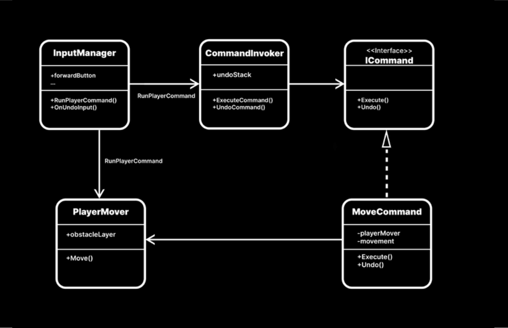
InputManager sẽ không gọi trực tiếp phương thức Move của PlayerMover. Thay vào đó, hãy thêm một phương thức phụ RunPlayerCommand để tạo một MoveCommand mới rồi gửi nó tới CommandInvoker:
private void RunPlayerCommand(PlayerMover playerMover, Vector3 movement)
{
if (playerMover == null)
{
return;
}
if (playerMover.IsValidMove(movement))
{
ICommand command = new MoveCommand(playerMover, movement);
CommandInvoker.ExecuteCommand(command);
}
}Tiếp theo, thiết lập các sự kiện onClick của các nút bấm UI (UI Buttons) để gọi RunPlayerCommand với bốn vector hướng di chuyển tương ứng.
Hãy xem dự án mẫu để biết chi tiết cách cài đặt cho InputManager, hoặc tự thiết lập đầu vào của riêng bạn bằng bàn phím hay tay cầm (gamepad). Giờ đây người chơi của bạn đã có thể di chuyển trong mê cung. Nhấn vào nút Undo để quay ngược từng bước trở về ô xuất phát ban đầu.
Ưu điểm và nhược điểm (Pros and cons)
Việc triển khai tính năng phát lại (replayability) hoặc hoàn tác (undoability) trở nên đơn giản chỉ bằng cách tạo ra một tập hợp các đối tượng mệnh lệnh. Bạn cũng có thể sử dụng bộ đệm mệnh lệnh (command buffer) để phát lại các hành động theo đúng trình tự với các điều khiển cụ thể.
Ví dụ, hãy nghĩ về một tựa game đối kháng (fighting game) nơi một chuỗi các nút bấm liên hoàn cụ thể sẽ kích hoạt một đòn đánh kết hợp (combo move). Việc lưu trữ thao tác của người chơi bằng Command pattern giúp quá trình thiết lập các đòn combo như vậy trở nên đơn giản hơn rất nhiều.
Ở chiều ngược lại, Command pattern làm phát sinh thêm cấu trúc lớp, giống như các mẫu thiết kế khác. Bạn sẽ phải cân nhắc xem ở những chỗ nào thì các lớp và interface bổ sung này mang lại đủ lợi ích xứng đáng để triển khai đối tượng mệnh lệnh trong ứng dụng của mình.
Cải tiến (Improvements)
Một khi đã nắm vững những điều cơ bản, bạn có thể tác động đến thời điểm thực thi của các mệnh lệnh và phát lại chúng nối tiếp nhau hoặc theo chiều ngược lại tùy theo ngữ cảnh.
Hãy cân nhắc những điểm sau khi tích hợp Command pattern:
- Tạo thêm nhiều loại mệnh lệnh khác: Dự án mẫu chỉ bao gồm một loại đối tượng mệnh lệnh duy nhất là
MoveCommand. Bạn có thể tạo bất kỳ số lượng đối tượng mệnh lệnh nào triển khaiICommandvà theo dõi tất cả chúng bằngCommandInvoker. - Bổ sung tính năng Làm lại (Redo) chỉ đơn giản là thêm một ngăn xếp (Stack) nữa: Khi bạn hoàn tác (undo) một đối tượng mệnh lệnh, hãy đẩy (push) nó sang một ngăn xếp riêng biệt chuyên theo dõi các thao tác làm lại (redo operations). Bằng cách này, bạn có thể nhanh chóng duyệt qua lịch sử undo hoặc làm lại các hành động đó. Hãy xóa sạch ngăn xếp redo khi người chơi thực hiện một bước di chuyển mới hoàn toàn (bạn có thể tìm thấy phần triển khai cụ thể trong dự án mẫu đi kèm).
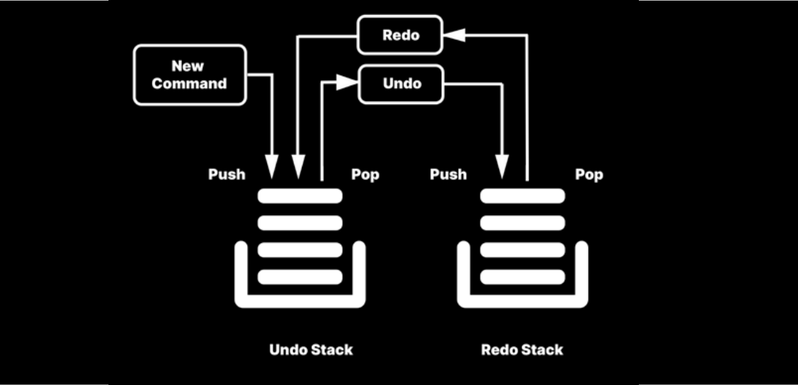
- Sử dụng một kiểu tập hợp (collection) khác cho bộ đệm mệnh lệnh: Một hàng đợi (
Queue) có thể tiện lợi hơn nếu bạn muốn hành vi "vào trước, ra trước" (First In, First Out – FIFO). Nếu bạn sử dụng một danh sách (List), hãy theo dõi chỉ số đang hoạt động hiện tại (current active index); các mệnh lệnh nằm trước chỉ số này có thể Undo, còn các mệnh lệnh nằm sau chỉ số này có thể Redo.
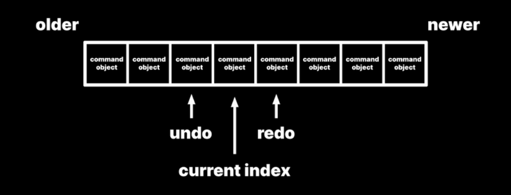
- Giới hạn kích thước của các ngăn xếp: Các thao tác Undo và Redo có thể nhanh chóng phình to vượt tầm kiểm soát. Hãy giới hạn các ngăn xếp chỉ lưu giữ một số lượng mệnh lệnh gần nhất nhất định.
- Truyền mọi tham số cần thiết vào hàm khởi tạo (constructor): Việc này giúp đóng gói (encapsulate) logic bên trong đối tượng như đã thấy ở ví dụ
MoveCommand.
CommandInvoker, cũng giống như các đối tượng bên ngoài khác, không hề nhìn thấy cơ chế hoạt động nội bộ của đối tượng mệnh lệnh mà chỉ đơn thuần gọi Execute hoặc Undo. Do đó, hãy cung cấp cho đối tượng mệnh lệnh mọi dữ liệu cần thiết để nó làm việc ngay khi gọi hàm khởi tạo (constructor).
State Pattern (Mẫu Trạng Thái)
Hãy tưởng tượng việc xây dựng một nhân vật có thể điều khiển được (playable character). Ở một khoảnh khắc, nhân vật có thể đang đứng yên trên mặt đất. Khi bạn đẩy cần điều khiển, nhân vật chuyển sang chạy hoặc đi bộ. Nhấn nút nhảy, nhân vật bật tung lên không trung. Vài khung hình sau, nhân vật tiếp đất và quay trở lại tư thế đứng nghỉ (idle) ban đầu.
Trạng thái và Máy trạng thái (States and state machines)
Trò chơi điện tử mang tính tương tác cao, và điều đó buộc chúng ta phải theo dõi rất nhiều hệ thống thay đổi liên tục lúc runtime. Nếu bạn vẽ một sơ đồ biểu diễn các trạng thái khác nhau của nhân vật, bạn có thể thu được một hình ảnh giống như sau:
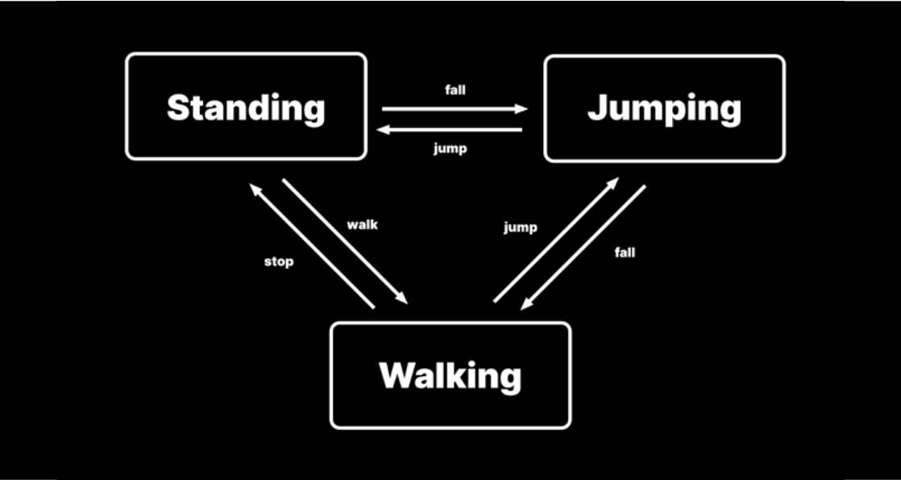
Sơ đồ này mô tả một khái niệm gọi là máy trạng thái hữu hạn (Finite-State Machine – FSM), trông khá giống một lưu đồ (flowchart) nhưng có một vài điểm khác biệt quan trọng:
- Sơ đồ bao gồm một số lượng các trạng thái (Đứng nghỉ/Standing, Đi bộ/Walking, Chạy/Running, Nhảy/Jumping, v.v.), và tại một thời điểm nhất định chỉ có duy nhất một trạng thái hiện tại đang hoạt động (active).
- Mỗi trạng thái có thể kích hoạt một sự chuyển tiếp (transition) sang một trạng thái khác dựa trên các điều kiện lúc runtime.
- Khi một sự chuyển tiếp diễn ra, trạng thái đầu ra sẽ trở thành trạng thái hoạt động mới.
Trong phát triển game, một trường hợp sử dụng điển hình của FSM là theo dõi trạng thái nội tại của một nhân vật (game actor) hoặc đạo cụ (prop).
Để thiết lập một máy trạng thái cơ bản trong code, bạn có thể dùng cách tiếp cận ngây thơ (naive approach) với một kiểu liệt kê enum và một câu lệnh switch:
public enum PlayerControllerState
{
Idle,
Walk,
Jump
}
public class UnrefactoredPlayerController : MonoBehaviour
{
private PlayerControllerState state;
private void Update()
{
GetInput();
switch (state)
{
case PlayerControllerState.Idle:
Idle();
break;
case PlayerControllerState.Walk:
Walk();
break;
case PlayerControllerState.Jump:
Jump();
break;
}
}
private void GetInput()
{
// Xử lý điều khiển đi bộ và nhảy
}
private void Walk()
{
// Logic đi bộ
}
private void Idle()
{
// Logic đứng nghỉ
}
private void Jump()
{
// Logic nhảy
}
}Đoạn code này vẫn sẽ chạy được, nhưng script PlayerController có thể nhanh chóng trở nên lộn xộn. Việc thêm nhiều trạng thái và độ phức tạp sẽ khiến class phình to bất thường. Nó cũng buộc chúng ta phải quay lại can thiệp vào bên trong nội bộ của script PlayerController mỗi khi muốn thực hiện một thay đổi.
Để tuân thủ các nguyên lý SOLID, chúng ta muốn làm cho các lớp của mình ngắn gọn hơn và tập trung hơn. Giữ cho chúng đóng với việc sửa đổi (closed for modification) nhưng mở với việc mở rộng (open for extension) sẽ đảm bảo khả năng mở rộng quy mô và dễ quản lý hơn.
Ví dụ: Mẫu State đơn giản (Example: Simple state pattern)
May mắn thay, State pattern (Mẫu Trạng thái) có thể giúp bạn tổ chức lại logic này. Theo nhóm Gang of Four nguyên bản, State pattern giải quyết hai vấn đề cốt lõi:
- Một đối tượng cần thay đổi hành vi của nó khi trạng thái nội tại của nó thay đổi.
- Hành vi đặc thù của từng trạng thái được định nghĩa một cách độc lập. Việc thêm các trạng thái mới không làm ảnh hưởng đến hành vi của các trạng thái hiện có.
Mặc dù lớp UnrefactoredPlayerController ở ví dụ trên có thể theo dõi các thay đổi trạng thái, nhưng nó không thỏa mãn được vấn đề thứ hai. Bạn muốn giảm thiểu tối đa tác động lên các trạng thái hiện có khi bổ sung thêm các trạng thái mới. Thay vì dùng switch, bạn có thể đóng gói mỗi trạng thái thành một đối tượng (encapsulate a state as an object).
Hãy hình dung việc cấu trúc mỗi trạng thái như sơ đồ sau:
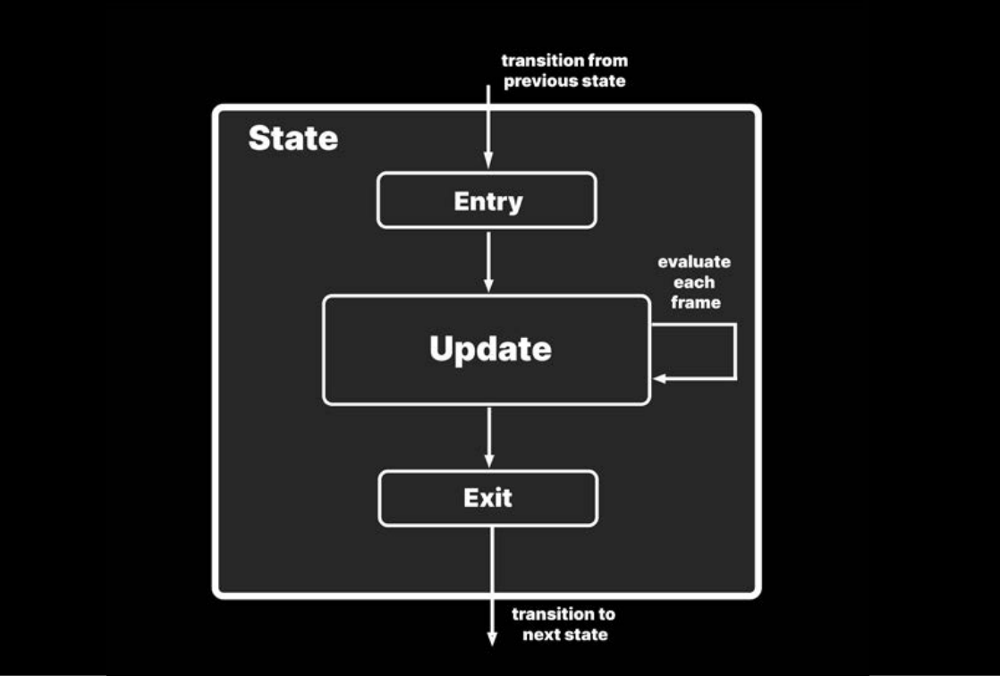
Ở đây, bạn đi vào trạng thái (Entry) và lặp qua từng khung hình (Update) cho đến khi một điều kiện nào đó khiến luồng điều khiển thoát ra (Exit) để chuyển sang trạng thái tiếp theo. Để triển khai mẫu này, hãy tạo một interface tên là IState:
public interface IState
{
public void Enter()
{
// Code chạy khi chúng ta mới bắt đầu bước vào trạng thái
}
public void Execute()
{
// Logic chạy mỗi frame, bao gồm cả điều kiện để chuyển sang trạng thái mới
}
public void Exit()
{
// Code chạy trước khi chúng ta rời khỏi trạng thái
}
}Mỗi trạng thái cụ thể (concrete state) trong game của bạn sẽ triển khai interface IState:
- Điểm vào (An Entry): Logic này thực thi một lần khi bắt đầu bước vào trạng thái.
- Thực thi (Execute): Logic này chạy ở mỗi khung hình (đôi khi được gọi là
TickhoặcUpdate). Bạn có thể chia nhỏ phương thứcExecutehơn nữa giống như cáchMonoBehaviourlàm vớiUpdate,FixedUpdate,LateUpdate, v.v.
Mọi chức năng bên trongExecutesẽ chạy ở từng frame cho đến khi phát hiện một điều kiện kích hoạt việc đổi trạng thái. - Điểm thoát (An Exit): Code ở đây sẽ chạy trước khi rời khỏi trạng thái hiện tại để chuyển tiếp sang một trạng thái mới.
Bạn sẽ cần tạo một class riêng cho mỗi trạng thái triển khai IState. Trong dự án mẫu, ba lớp riêng biệt đã được thiết lập cho WalkState, IdleState và JumpState.
Một lớp khác, StateMachine, sau đó sẽ quản lý cách luồng điều khiển đi vào và thoát ra khỏi các trạng thái. Với ba trạng thái ví dụ trên, lớp StateMachine có thể trông như sau:
[Serializable]
public class StateMachine
{
public IState CurrentState { get; private set; }
public WalkState walkState;
public JumpState jumpState;
public IdleState idleState;
public StateMachine(PlayerController player)
{
this.walkState = new WalkState(player);
this.jumpState = new JumpState(player);
this.idleState = new IdleState(player);
}
public void Initialize(IState startingState)
{
CurrentState = startingState;
startingState.Enter();
}
public void TransitionTo(IState nextState)
{
CurrentState.Exit();
CurrentState = nextState;
nextState.Enter();
}
public void Execute()
{
if (CurrentState != null)
{
CurrentState.Execute();
}
}
}Để tuân theo mẫu thiết kế, StateMachine tham chiếu tới một đối tượng public cho mỗi trạng thái nằm dưới sự quản lý của nó (trong trường hợp này là walkState, jumpState và idleState). Bởi vì StateMachine không kế thừa từ MonoBehaviour, ta sử dụng một hàm khởi tạo (constructor) để thiết lập từng bản thể trạng thái.
Bạn có thể truyền bất kỳ tham số cần thiết nào vào constructor. Trong dự án mẫu, một PlayerController được tham chiếu bên trong mỗi trạng thái. Sau đó bạn dùng tham chiếu đó để cập nhật từng trạng thái theo mỗi khung hình (xem ví dụ IdleState bên dưới).
Hãy lưu ý những điểm sau về lớp StateMachine:
- Thuộc tính
[Serializable]cho phép chúng ta hiển thịStateMachine(cùng các trường public của nó) trong cửa sổ Inspector. MộtMonoBehaviourkhác (chẳng hạn nhưPlayerControllerhoặcEnemyController) khi đó có thể sử dụngStateMachinenhư một trường dữ liệu bình thường. - Thuộc tính
CurrentStatelà chỉ đọc (read-only từ bên ngoài nhờprivate set). Bản thânStateMachinekhông tự ý gán trường này một cách tường minh từ bên ngoài. Một đối tượng bên ngoài nhưPlayerControllercó thể gọi phương thứcInitializeđể thiết lập trạng thái mặc định ban đầu. - Mỗi đối tượng
Statetự xác định các điều kiện của riêng nó để gọi phương thứcTransitionTonhằm thay đổi trạng thái đang hoạt động hiện tại. Bạn có thể truyền bất kỳ phụ thuộc cần thiết nào (bao gồm cả chínhStateMachine) vào từng trạng thái khi khởi tạo bản thểStateMachine.
Trong dự án ví dụ,PlayerControllerđã chứa sẵn một tham chiếu tớiStateMachine, vì vậy bạn chỉ cần truyền một tham sốplayerduy nhất vào là đủ.
Mỗi đối tượng trạng thái sẽ tự quản lý logic nội bộ của riêng nó, và bạn có thể tạo ra bao nhiêu trạng thái tùy thích để mô tả GameObject hoặc component của mình. Mỗi trạng thái có một class riêng triển khai IState. Đúng theo tinh thần các nguyên lý SOLID, việc bổ sung thêm nhiều trạng thái mới có tác động tối thiểu lên bất kỳ trạng thái nào đã tạo trước đó.
Dưới đây là ví dụ về lớp IdleState:
public class IdleState : IState
{
private PlayerController player;
public IdleState(PlayerController player)
{
this.player = player;
}
public void Enter()
{
// Code chạy khi chúng ta mới bước vào trạng thái
}
public void Execute()
{
// Tại đây ta thêm logic kiểm tra xem điều kiện chuyển sang
// trạng thái khác đã thỏa mãn hay chưa
// …
}
public void Exit()
{
// Code chạy khi chúng ta thoát khỏi trạng thái
}
}Một lần nữa, hãy sử dụng constructor để truyền đối tượng PlayerController vào. Trong ví dụ này, biến player chứa tham chiếu tới StateMachine cùng mọi thứ cần thiết khác cho logic cập nhật. Trạng thái idleState theo dõi vận tốc của CharacterController hoặc trạng thái nhảy, rồi gọi phương thức TransitionTo của StateMachine một cách thích hợp.
Hãy xem thêm dự án mẫu để tham khảo cách cài đặt của WalkState và JumpState. Thay vì có một lớp khổng lồ duy nhất làm nhiệm vụ chuyển đổi hành vi, giờ đây mỗi trạng thái đều sở hữu logic cập nhật của riêng mình. Nhờ vậy, các trạng thái có thể vận hành hoàn toàn độc lập với nhau.
Ưu điểm và nhược điểm (Pros and cons)
State pattern giúp bạn tuân thủ chặt chẽ các nguyên lý SOLID khi thiết lập logic nội bộ cho một đối tượng. Mỗi trạng thái có quy mô tương đối nhỏ và chỉ theo dõi các điều kiện để chuyển sang trạng thái khác. Đúng theo nguyên lý Đóng-Mở (Open-Closed Principle), bạn có thể thêm nhiều trạng thái mới mà không làm ảnh hưởng đến các trạng thái hiện có, đồng thời tránh được những câu lệnh switch hoặc if cồng kềnh.
Mặt khác, nếu bạn chỉ có vỏn vẹn vài trạng thái cần theo dõi, cấu trúc bổ sung này có thể là quá mức cần thiết (overkill). Mẫu thiết kế này thường chỉ thực sự hợp lý nếu bạn dự kiến các trạng thái của mình sẽ phát triển đến một độ phức tạp nhất định.
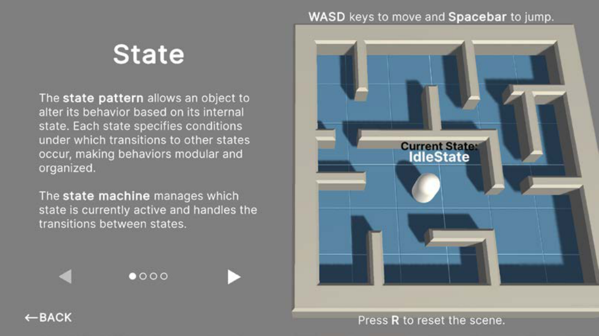
Cải tiến (Improvements)
Khối hình viên nang (capsule) trong dự án mẫu chỉ đổi màu và cập nhật giao diện UI theo trạng thái nội tại của người chơi. Trong một trò chơi thực tế, bạn có thể tạo ra nhiều hiệu ứng phức tạp hơn đi kèm với những thay đổi trạng thái đó:
-
Kết hợp State pattern với hoạt ảnh (Animation): Một ứng dụng cực kỳ phổ biến của State pattern chính là hệ thống hoạt ảnh. Nhân vật người chơi hoặc kẻ địch thường được đại diện bằng các hình khối cơ bản (như hình viên nang) ở cấp độ vĩ mô. Sau đó, bạn có thể cho phần mô hình hình học có gắn xương hoạt ảnh (animated geometry) phản ứng lại với những thay đổi trạng thái nội tại, giúp nhân vật trong game hiển thị động tác đang chạy, nhảy, bơi, leo trèo, v.v.
Nếu bạn đã từng sử dụng cửa sổ Animator của Unity, bạn sẽ nhận thấy quy trình làm việc của nó kết hợp hoàn hảo với State pattern. Mỗi animation clip chiếm giữ một trạng thái (state), và chỉ có duy nhất một trạng thái hoạt động tại một thời điểm.
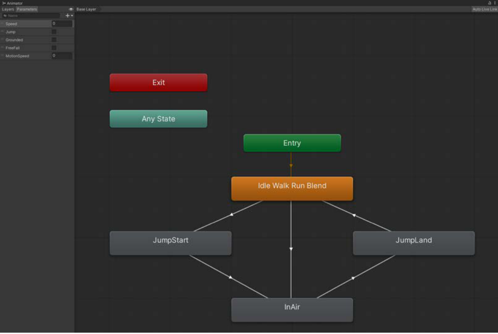
- Thêm các sự kiện (Add events): Để thông báo những thay đổi trạng thái cho các đối tượng bên ngoài, bạn có thể muốn bổ sung thêm hệ thống sự kiện (xem chương Observer pattern). Việc phát ra một sự kiện khi bước vào (entering) hoặc rời khỏi (exiting) một trạng thái có thể thông báo cho các đối tượng lắng nghe (listeners) liên quan và để chúng phản hồi ngay lúc runtime.
- Thêm cấu trúc phân cấp (Add a hierarchy): Khi bạn bắt đầu mô tả những thực thể phức tạp hơn bằng State pattern, bạn có thể muốn triển khai máy trạng thái phân cấp (Hierarchical State Machines). Chắc chắn sẽ có một số trạng thái mang nhiều điểm tương đồng; ví dụ, nếu người chơi hoặc nhân vật đang đứng trên mặt đất (grounded), nhân vật đều có thể cúi người (duck) hoặc nhảy lên (jump) bất kể đang ở trong trạng thái
WalkingStatehayRunningState.
Nếu bạn triển khai một siêu trạng thái (SuperState), bạn có thể gom các hành vi chung lại với nhau. Sau đó, sử dụng tính kế thừa (inheritance), bạn có thể ghi đè (override) bất kỳ điểm đặc thù nào trong một trạng thái con (sub-state). Chẳng hạn, đầu tiên bạn khai báo lớpGroundedState, rồi choRunningStatevàWalkingStatekế thừa từ lớp đó. - Triển khai AI đơn giản (Implement simple AI): Máy trạng thái hữu hạn (FSM) cũng rất hữu ích trong việc tạo ra trí tuệ nhân tạo (AI) cơ bản cho kẻ địch. Cách tiếp cận dùng FSM để xây dựng bộ não cho một NPC có thể trông như sơ đồ dưới đây:
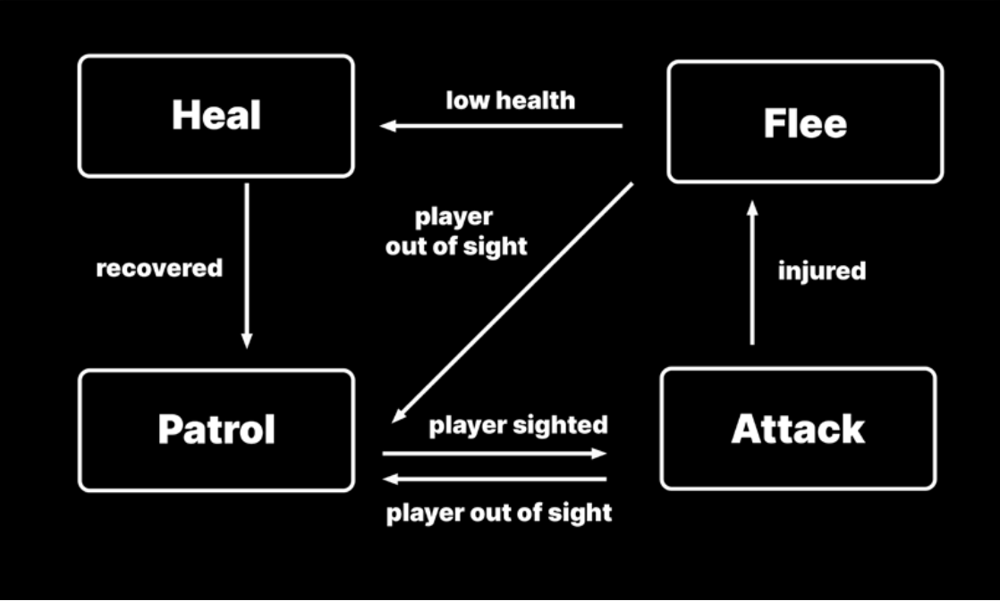
Trên đây lại là State pattern đang hoạt động nhưng trong một ngữ cảnh hoàn toàn khác. Mỗi trạng thái đại diện cho một hành động như tấn công (Attack), bỏ chạy (Flee), hồi máu (Heal) hoặc tuần tra (Patrol). Chỉ có một trạng thái hoạt động tại một thời điểm, và mỗi trạng thái tự quyết định điều kiện chuyển tiếp sang trạng thái kế tiếp.
Ví dụ thực tế: Quản lý các trạng thái của Game (Example: Game states)
Trong ví dụ trước, màu vật liệu (material color) của nhân vật và nhãn UI được cập nhật khi người chơi di chuyển, nhảy hoặc đứng yên. Bạn có thể áp dụng State pattern ở bất cứ nơi nào cần theo dõi trạng thái nội tại của một đối tượng. Hoạt ảnh nhân vật là một ví dụ điển hình — điển hình đến mức Unity tích hợp sẵn cả một máy trạng thái vào trong AnimatorController của mình.
Dự án mẫu còn bao gồm một máy trạng thái nâng cao hơn cho một ứng dụng thực tiễn khác của State pattern — duy trì các trạng thái luồng game (game states). Bản thân ứng dụng demo này cũng sử dụng chính máy trạng thái đó để quản lý hành vi của mình lúc runtime.
Bên trong thư mục Scripts/StateMachine có một số thành phần để xây dựng và tùy biến một máy trạng thái tinh vi hơn:
StateMachinetheo dõi trạng thái hiện tại của đối tượng và xử lý việc chuyển tiếp giữa các trạng thái khác nhau. Nó thực thi các phương thức vòng đời của từng trạng thái và giám sát sự thay đổi trạng thái trong một vòng lặp.- Interface
IStateđịnh nghĩa chức năng chuẩn hóa cho từng đối tượng trạng thái (các phương thức vòng đời nhưEnter,ExecutevàExitcũng như các chuyển tiếp sang trạng thái khác). AbstractStatetriển khai interfaceIStatevà đóng vai trò làm lớp cơ sở (base class) cho mọi trạng thái.
Để thiết lập State pattern này, các trạng thái cụ thể (concrete states) được định nghĩa gồm:
- Một lớp
Stateđa dụng có thể thực thi các hành động định sẵn khi bước vào và trong lúc thực thi. DelayStatetạo ra một khoảng thời gian chờ trước khi chuyển sang trạng thái kế tiếp, rất hữu ích cho thanh tiến trình (progress bars) hoặc màn hình tải (load screens).LoadSceneStatevàUnloadLastSceneStatelà các lớp trạng thái được thiết kế chuyên cho việc quản lý chuyển cảnh. Các trạng thái này có thể tải hoặc dỡ bỏ các scene theo kiểu cộng gộp (additively), cho phép chúng ta chia nhỏ nội dung dự án thành từng Unity scene độc lập.
Để chuyển tiếp sang các trạng thái khác, hãy triển khai logic phản hồi lại các điều kiện hoặc sự kiện cụ thể. Điều này cho phép thay đổi trạng thái dựa theo sự kiện game hoặc thao tác của người dùng:
- Interface
ILinkđịnh nghĩa một sự chuyển tiếp (transition) giữa các trạng thái. - Triển khai
EventLinkđể kích hoạt chuyển tiếp dựa trên một sự kiện C# cụ thể. - Triển khai
EventSOLinkđể kích hoạt chuyển tiếp dựa trên một sự kiện cụ thể dùngScriptableObject. - Triển khai
SceneEventSOLinkđể kích hoạt chuyển tiếp dựa trên một sự kiện tải scene cụ thể.
Máy trạng thái này sử dụng một số kênh sự kiện (event channels — dùng cả sự kiện C# tùy chỉnh lẫn sự kiện dựa trên ScriptableObject) để giao tiếp với bất kỳ hệ thống nào khác trong ứng dụng.
Kết hợp tất cả những mảnh ghép này lại với nhau, bạn có thể xây dựng được một máy trạng thái hoạt động tốt với nhiều loại ứng dụng khác nhau. Chỉ cần tạo thêm các trạng thái hoặc đường chuyển tiếp bổ sung khi dự án của bạn yêu cầu.
Trong dự án mẫu, GameManager sử dụng máy trạng thái này để điều khiển luồng chạy tổng thể của ứng dụng. Hệ thống dùng các sự kiện dựa trên ScriptableObject để chuyển tiếp từ các giao diện menu sang nội dung màn chơi demo.
Các tương tác của người dùng (ví dụ: nhấp chuột vào nút bấm) sẽ thông báo cho GameManager thay đổi trạng thái nội tại của nó. Giao diện UI sau đó sẽ cập nhật theo sơ đồ trạng thái dưới đây:
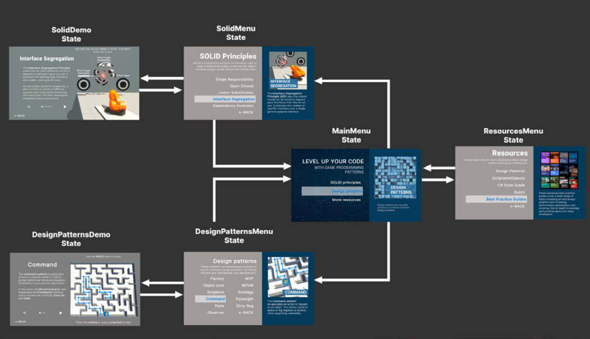
Mặc dù ví dụ này tập trung vào việc cập nhật UI, các trạng thái của GameManager hoàn toàn có thể được tùy biến để đáp ứng nhu cầu riêng của ứng dụng của bạn.
Ở đây, việc sử dụng State pattern giúp lắp ghép ứng dụng từ những thành phần nhỏ hơn một cách dễ dàng. Mỗi nút bấm trên menu sẽ phát ra (raises) một sự kiện. Sự kiện đó đến lượt mình sẽ kích hoạt quá trình chuyển tiếp sang một trạng thái mới và tải nội dung demo tương ứng lên.
Việc đưa thêm tính năng mới vào đơn giản chỉ là thêm một trạng thái mới và cấu hình các đường chuyển tiếp cần thiết. Đúng với tinh thần SOLID, việc xây dựng thêm một phần mới cho ứng dụng không hề làm ảnh hưởng đến dự án hiện có.
Bạn muốn xem thêm các mẫu thiết kế hoạt động trong thực tế? Dự án mẫu QuizU cũng trình diễn cách sử dụng mẫu MVP và State pattern trong hệ thống menu chính được xây dựng bằng UI Toolkit. Dự án này cũng sở hữu một biến thể của máy trạng thái nói trên trong vòng lặp game chính. Bạn có thể khám phá dự án cùng chuỗi bài viết đi kèm trên diễn đàn Unity Discussions.
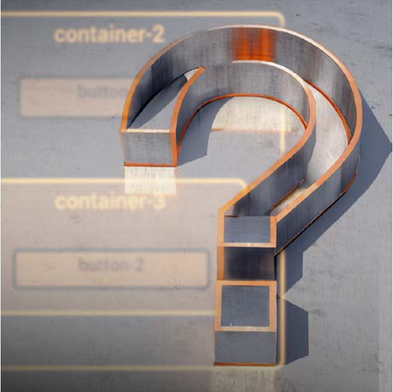
Observer Pattern (Mẫu Quan Sát)
Tại thời điểm chạy game (runtime), vô số sự việc có thể diễn ra trong trò chơi của bạn. Chuyện gì sẽ xảy ra khi bạn tiêu diệt một kẻ địch? Hay khi bạn nhặt một vật phẩm tăng sức mạnh (power-up) hoặc hoàn thành một nhiệm vụ? Bạn thường xuyên cần một cơ chế cho phép một số đối tượng thông báo cho các đối tượng khác mà không cần tham chiếu trực tiếp tới chúng — qua đó tránh tạo ra những sự phụ thuộc (dependencies) không cần thiết.
Observer pattern (Mẫu Quan sát) là một giải pháp phổ biến cho dạng bài toán này. Nó cho phép các đối tượng của bạn giao tiếp với nhau nhưng vẫn giữ được sự liên kết lỏng lẻo (loosely coupled) thông qua mối quan hệ phụ thuộc "một – nhiều" (one-to-many). Khi một đối tượng thay đổi trạng thái, tất cả các đối tượng phụ thuộc sẽ tự động nhận được thông báo. Cơ chế này tương tự như một tháp phát thanh truyền tín hiệu tới nhiều thính giả khác nhau cùng lúc.
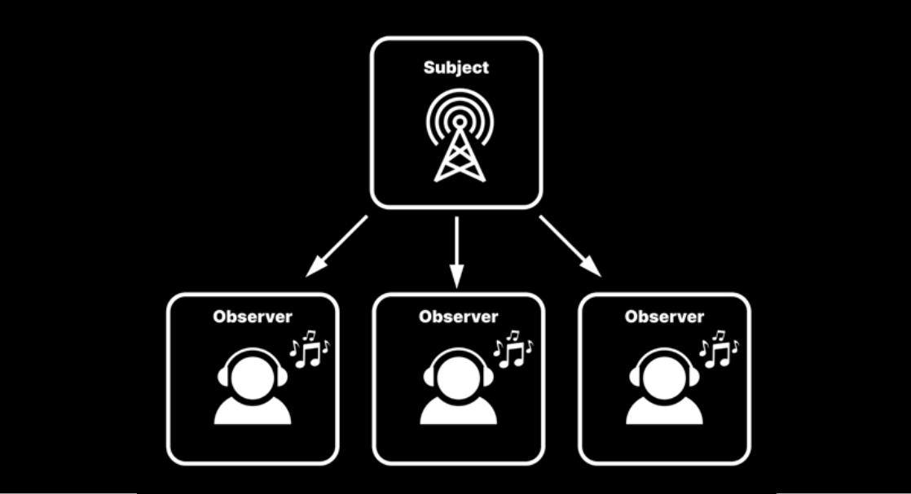
Đối tượng phát tín hiệu được gọi là Chủ thể (Subject). Các đối tượng khác đang lắng nghe tín hiệu được gọi là các Quan sát viên (Observers).
Mẫu thiết kế này tách rời (decouples) một cách lỏng lẻo Chủ thể khỏi các Quan sát viên: bản thân Subject không thực sự biết các Observer là ai hay quan tâm chúng sẽ làm gì sau khi nhận được tín hiệu. Mặc dù các Observer có sự phụ thuộc vào Subject, nhưng giữa các Observer với nhau hoàn toàn không hề biết về sự tồn tại của nhau.
Sự kiện trong C# (Events)
Observer pattern phổ biến đến mức nó đã được tích hợp sẵn vào ngay trong ngôn ngữ C#. Bạn có thể tự thiết kế các lớp Subject–Observer của riêng mình, nhưng điều đó thường là không cần thiết. Bạn còn nhớ lời khuyên về việc "đừng phát minh lại chiếc bánh xe" chứ? C# đã triển khai sẵn mẫu thiết kế này bằng cơ chế sự kiện (events).
Một event đơn giản là một thông báo cho biết có điều gì đó vừa xảy ra. Nó bao gồm một vài thành phần:
- Bên phát hành (Publisher / Subject): tạo ra một sự kiện dựa trên một ủy nhiệm hàm (delegate), thiết lập một chữ ký hàm (function signature) cụ thể. Sự kiện chỉ là một hành động nào đó mà chủ thể sẽ thực hiện lúc runtime (ví dụ: nhận sát thương, nhấp vào nút bấm, v.v.).
- Các bên đăng ký nhận tin (Subscribers / Observers): mỗi bên tạo một phương thức gọi là trình xử lý sự kiện (event handler), phương thức này bắt buộc phải khớp với chữ ký của delegate.
- Event handler của mỗi Observer tiến hành đăng ký (subscribes) vào sự kiện của Publisher. Bạn có thể cho bao nhiêu Observer tham gia đăng ký tùy ý. Tất cả chúng sẽ chờ đợi cho đến khi sự kiện được kích hoạt.
- Khi Publisher phát tín hiệu báo rằng sự kiện đã xảy ra lúc runtime, ta nói rằng nó phát sinh sự kiện (raises the event). Việc này đến lượt mình sẽ gọi các event handler của những Subscriber đã đăng ký, để mỗi bên tự chạy logic nội bộ của riêng mình nhằm phản hồi lại sự kiện đó.
Bằng cách này, bạn làm cho nhiều component cùng phản ứng lại trước một sự kiện duy nhất từ Subject. Nếu Subject báo hiệu rằng một nút bấm vừa được nhấp, các Observer có thể phát lại một hoạt ảnh hoặc âm thanh, kích hoạt một đoạn phim cắt cảnh (cutscene), hoặc lưu tệp (save file). Phản hồi của chúng có thể là bất cứ thứ gì, đó là lý do tại sao bạn sẽ thường xuyên bắt gặp Observer pattern được dùng để gửi thông điệp giữa các đối tượng.
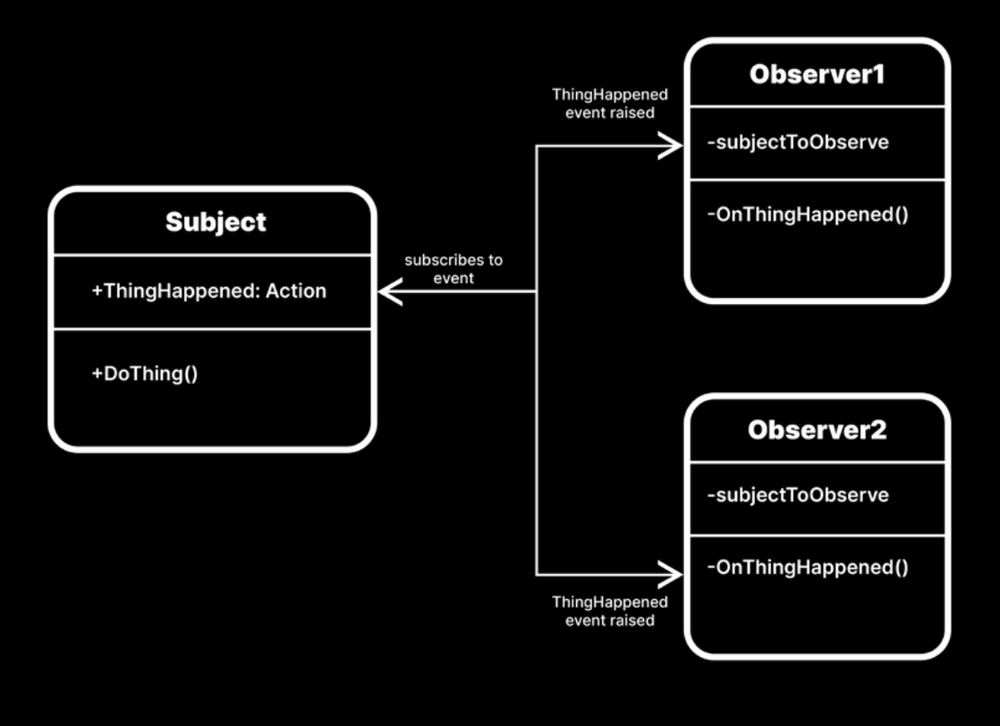
Ví dụ: Subject và Observer đơn giản (Example: Simple subject and observer)
Ví dụ, bạn có thể định nghĩa một lớp Subject/Publisher cơ bản như sau:
using UnityEngine;
using System;
public class Subject : MonoBehaviour
{
public event Action ThingHappened;
public void DoThing()
{
ThingHappened?.Invoke();
}
}Ở đây, bạn kế thừa từ MonoBehaviour để gắn vào GameObject dễ dàng hơn, nhưng điều đó không bắt buộc.
Mặc dù bạn hoàn toàn tự do định nghĩa kiểu delegate tùy chỉnh của riêng mình, System.Action đã đáp ứng tốt trong hầu hết mọi trường hợp. Nếu bạn cần gửi kèm các tham số theo sự kiện, hãy sử dụng delegate Action<T> và truyền kiểu của chúng vào bên trong cặp ngoặc nhọn (hỗ trợ tối đa lên tới 16 tham số).
ThingHappened chính là sự kiện thực tế mà chủ thể sẽ gọi (invoke) bên trong phương thức DoThing.
Để lắng nghe sự kiện đó, bạn có thể xây dựng một lớp Observer ví dụ như dưới đây. Ở đây ta cũng kế thừa từ MonoBehaviour cho thuận tiện, dù điều này không bắt buộc:
public class Observer : MonoBehaviour
{
[SerializeField] private Subject subjectToObserve;
private void OnThingHappened()
{
// Bất kỳ logic nào phản hồi lại sự kiện sẽ đặt ở đây
Debug.Log("Observer responds");
}
private void OnEnable()
{
if (subjectToObserve != null)
{
subjectToObserve.ThingHappened += OnThingHappened;
}
}
private void OnDisable()
{
if (subjectToObserve != null)
{
subjectToObserve.ThingHappened -= OnThingHappened;
}
}
}Hãy gắn component này vào một GameObject và kéo thả tham chiếu subjectToObserve trong cửa sổ Inspector để lắng nghe sự kiện ThingHappened.
Phương thức OnThingHappened có thể chứa bất kỳ logic nào mà Observer thực thi để phản hồi lại sự kiện. Thông thường, các lập trình viên hay thêm tiền tố "On" để biểu thị hàm xử lý sự kiện (event handler) — hãy áp dụng nhất quán quy ước đặt tên theo quy chuẩn code (style guide) của nhóm bạn.
Trong hàm Awake, Start hoặc OnEnable, bạn có thể đăng ký nhận sự kiện bằng toán tử +=. Toán tử này kết hợp phương thức OnThingHappened của Observer vào sự kiện ThingHappened của Subject.
Nếu bất kỳ thứ gì gọi phương thức DoThing của Subject, hành động đó sẽ phát sinh sự kiện. Khi ấy, hàm xử lý sự kiện OnThingHappened của Observer sẽ tự động được gọi và in ra dòng thông báo debug.
Lưu ý quan trọng: Nếu bạn xóa hoặc gỡ bỏ Observer lúc runtime trong khi nó vẫn đang đăng ký vào ThingHappened, việc gọi sự kiện đó có thể gây ra lỗi. Do đó, việc hủy đăng ký (unsubscribe) khỏi sự kiện trong phương thức OnDisable hoặc OnDestroy của MonoBehaviour bằng toán tử -= là vô cùng quan trọng.
Hủy đăng ký khỏi các sự kiện bằng toán tử -= là bước sống còn. Nó ngăn ngừa tình trạng rò rỉ bộ nhớ (memory leaks), tránh lỗi tham chiếu rỗng (null reference exceptions) và giữ cho mã nguồn luôn sạch sẽ bằng cách quản lý chặt chẽ việc đăng ký sự kiện xuyên suốt vòng đời đối tượng Unity.
Không có một quy chuẩn bắt buộc duy nhất nào cho việc đặt tên các thành phần của Observer pattern. Trong cẩm nang quy chuẩn code (style guide) của bạn, hãy đảm bảo xác định rõ cách đặt tên cho ba thành phần sau:
- Sự kiện (Events): Đây là hành động hoặc tín hiệu thực tế. Trong ví dụ trên, sự kiện được đặt tên là
ThingHappened. - Trình xử lý sự kiện (Event handlers): Đây là hàm chứa logic diễn ra để phản hồi lại sự kiện. Trong ví dụ này, trình xử lý sự kiện có tiền tố là
"On". Hàm xử lý sự kiệnOnThingHappenedthực thi để đáp lại sự kiệnThingHappened. - Phương thức phát sự kiện (Event-raising methods): Đây là phương thức kích hoạt (invoke) sự kiện. Trong ví dụ trên,
DoThinglà phương thức phát sự kiện.
Các sự kiện thường được đặt tên bằng các động từ mô tả rõ hành động hoặc sự việc vừa diễn ra (ví dụ: DoorOpened, DamageReceived). Sử dụng một quy ước đặt tên rõ ràng cho các sự kiện, hàm kích hoạt và hàm phản hồi của chúng sẽ giúp mối quan hệ giữa chúng trở nên minh bạch hơn rất nhiều.
Để biết thêm thông tin về việc xây dựng quy chuẩn C# riêng cho nhóm của bạn, hãy xem cuốn e-book: Create a C# style guide: Write cleaner code that scales.
Bạn có thể áp dụng Observer pattern cho hầu hết mọi thứ diễn ra trong suốt quá trình chơi game. Chẳng hạn, game của bạn có thể phát một sự kiện mỗi khi người chơi tiêu diệt một kẻ địch hoặc thu thập một vật phẩm. Nếu bạn cần một hệ thống thống kê chuyên theo dõi điểm số hoặc thành tựu (achievements), Observer pattern sẽ cho phép bạn xây dựng hệ thống đó mà không làm ảnh hưởng tới mã nguồn gameplay gốc.
Nhiều ứng dụng Unity áp dụng sự kiện (events) cho:
- Các mục tiêu hoặc nhiệm vụ (Objectives or goals)
- Điều kiện thắng / thua (Win/lose conditions)
- Người chơi chết (
PlayerDeath), Kẻ địch chết (EnemyDeath), hoặc Nhận sát thương (Damage) - Nhặt vật phẩm (Item pickups)
- Giao diện người dùng (User interface)
Subject chỉ đơn giản cần phát ra một sự kiện vào đúng thời điểm thích hợp, và bất kỳ số lượng Observer nào cũng có thể đăng ký lắng nghe.
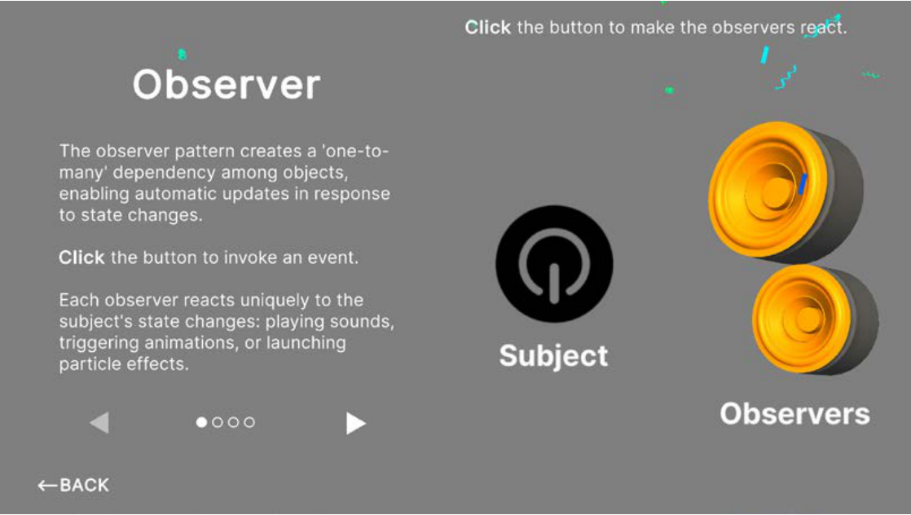
Trong dự án mẫu, lớp ButtonSubject cho phép người dùng kích hoạt sự kiện Clicked bằng nút chuột. Một số GameObject khác gắn các component AudioObserver và ParticleSystemObserver sau đó sẽ tự phản hồi lại sự kiện theo cách riêng của chúng.
Việc xác định đối tượng nào là "Subject" và đối tượng nào là "Observer" hoàn toàn phụ thuộc vào mục đích sử dụng. Bất cứ thứ gì phát ra sự kiện đều đóng vai trò là Subject, và bất cứ thứ gì phản hồi lại sự kiện đó đều là Observer. Các component khác nhau nằm trên cùng một GameObject vẫn có thể vừa là Subject vừa là Observer. Thậm chí cùng một component có thể là Subject trong ngữ cảnh này và là Observer trong một ngữ cảnh khác.
Ví dụ, lớp AnimObserver trong bài mẫu tạo thêm một chút chuyển động nhún cho nút bấm khi được nhấp chuột. Nó hoạt động như một Observer mặc dù bản thân nó là một phần nằm ngay trên GameObject ButtonSubject.
Unity cũng bao gồm một hệ thống riêng biệt gọi là UnityEvents, sử dụng delegate UnityAction từ bộ API UnityEngine.Events.
UnityEvents cung cấp một giao diện đồ họa trực quan cho Observer pattern. Chúng mang lại cách tiếp cận thân thiện với các họa sĩ thiết kế (artists/designers) để làm bản thử nghiệm nhanh (quick prototyping) hoặc thiết lập các tương tác mà không cần viết thêm code. Nếu bạn đã từng dùng hệ thống UI của Unity (chẳng hạn tạo sự kiện OnClick cho một UI Button), nghĩa là bạn đã có kinh nghiệm làm việc với nó rồi.
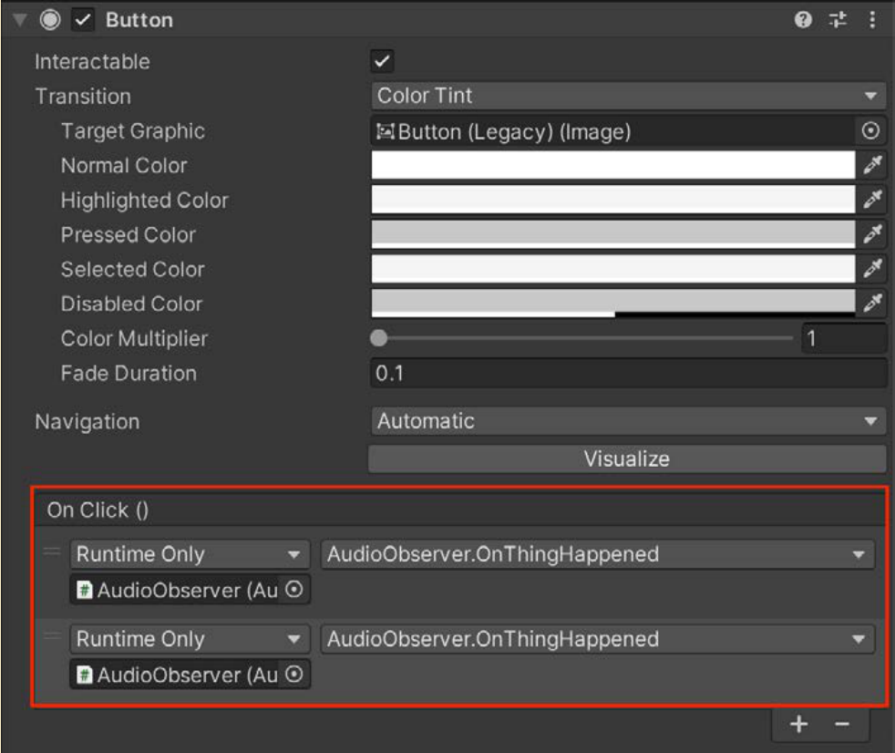
Trong ví dụ này, sự kiện OnClick của nút bấm sẽ gọi và kích hoạt phản hồi từ phương thức OnThingHappened của hai đối tượng AudioObserver. Nhờ đó, bạn có thể thiết lập sự kiện của một Subject mà không cần viết dòng code đăng ký nào.
UnityEvents rất hữu ích nếu bạn muốn cho phép các nhà thiết kế game (designers) hoặc những người không chuyên lập trình tự tạo các sự kiện gameplay. Tuy nhiên, hãy lưu ý rằng tốc độ thực thi của chúng có thể chậm hơn so với các event hoặc Action tương đương từ namespace System của C#.
Hãy cân nhắc giữa hiệu năng (performance) và tính tiện dụng (usage) khi lựa chọn sử dụng UnityEvents và UnityActions. Bạn có thể xem thêm học phần Create a Simple Messaging System with Events trên Unity Learn để tham khảo ví dụ chi tiết.
Ưu điểm và nhược điểm (Pros and cons)
Việc triển khai một sự kiện đòi hỏi thêm một chút công sức ban đầu nhưng mang lại nhiều lợi thế lớn:
- Observer pattern giúp tách rời (decouple) các đối tượng của bạn: Bên phát sự kiện (publisher) không cần biết bất cứ điều gì về bản thân các bên đăng ký nhận tin (subscribers). Thay vì tạo ra một sự phụ thuộc trực tiếp giữa lớp này với lớp khác, Subject và Observer giao tiếp với nhau trong khi vẫn duy trì được một khoảng cách độc lập nhất định.
- Bạn không cần phải tự xây dựng nó từ đầu: C# đã tích hợp sẵn một hệ thống sự kiện hoàn chỉnh, và bạn có thể dùng ngay delegate
System.Actionthay vì phải tự định nghĩa các delegate riêng. Ngoài ra, Unity cũng cung cấp sẵnUnityEventsvàUnityActions. - Mỗi Observer tự triển khai logic xử lý sự kiện của riêng mình: Bằng cách này, mỗi đối tượng quan sát tự duy trì phần logic mà nó cần để phản hồi. Điều này giúp việc gỡ lỗi (debug) và kiểm thử đơn vị (unit test) trở nên dễ dàng hơn.
- Đặc biệt phù hợp cho giao diện người dùng (User Interface): Mã nguồn gameplay cốt lõi của bạn có thể tồn tại tách biệt hoàn toàn khỏi logic giao diện UI. Các phần tử UI chỉ cần lắng nghe những sự kiện hoặc điều kiện cụ thể trong game rồi phản hồi tương ứng. Hai mẫu thiết kế MVP và MVC đều tận dụng Observer pattern cho mục đích này.
Hãy lưu ý những điểm hạn chế (caveats) sau đối với Observer pattern:
- Làm tăng thêm độ phức tạp: Giống như các mẫu thiết kế khác, việc tạo ra kiến trúc hướng sự kiện (event-driven architecture) đòi hỏi nhiều công sức thiết lập ban đầu hơn. Ngoài ra, hãy cẩn thận khi xóa các Subject hoặc Observer. Hãy luôn đảm bảo bạn hủy đăng ký (unregister) các Observer trong hàm
OnDestroy(hoặcOnDisable). - Các Observer vẫn cần một tham chiếu tới lớp định nghĩa sự kiện: Các Observer vẫn có một sự phụ thuộc vào lớp phát hành sự kiện. Việc sử dụng một lớp
EventManagertĩnh (xem bên dưới) đứng ra xử lý mọi sự kiện có thể giúp tháo gỡ sự ràng buộc giữa các đối tượng với nhau. - Hiệu năng có thể là một vấn đề: Kiến trúc hướng sự kiện làm phát sinh thêm chi phí quản lý (overhead). Các cảnh game lớn với quá nhiều
GameObjectcùng lắng nghe sự kiện có thể làm giảm hiệu năng.
Cải tiến (Improvements)
Mặc dù tài liệu chỉ giới thiệu một phiên bản cơ bản của Observer pattern, bạn hoàn toàn có thể mở rộng nó để đáp ứng mọi nhu cầu của ứng dụng game.
Hãy cân nhắc những gợi ý sau khi thiết lập Observer pattern:
- Sử dụng lớp
ObservableCollection: C# cung cấp sẵn lớp tập hợp độngObservableCollection<T>để theo dõi các thay đổi cụ thể. Nó có thể tự động thông báo cho các Observer của bạn mỗi khi có phần tử được thêm vào, xóa đi, hoặc khi toàn bộ danh sách được làm mới. - Truyền một định danh bản thể duy nhất (Unique Instance ID) làm đối số: Mỗi
GameObjecttrên Hierarchy đều có mộtInstanceIDduy nhất. Nếu bạn kích hoạt một sự kiện có thể áp dụng cho nhiều hơn một Observer, hãy truyền ID duy nhất đó vào sự kiện (sử dụng kiểuAction<int>). Sau đó, chỉ chạy logic bên trong event handler nếuGameObjectcó ID khớp với ID duy nhất được truyền vào. -
Tạo một
EventManagertĩnh (Static EventManager): Bởi vì các sự kiện có thể điều khiển phần lớn gameplay của bạn, nhiều ứng dụng Unity sử dụng mộtEventManagerdạngstatichoặcSingleton. Bằng cách này, các Observer có thể tham chiếu tới một nguồn sự kiện game tập trung duy nhất đóng vai trò làm Subject, giúp việc thiết lập trở nên dễ dàng hơn rất nhiều.
Dự án FPS Microgame của Unity có một bản triển khai rất tốt choEventManagertĩnh, cài đặt cácGameEventstùy chỉnh và bao gồm các phương thức hỗ trợ tĩnh để thêm hoặc gỡ bỏ các listener.
Dự án Unity Open Project cũng trình diễn một kiến trúc game sử dụngScriptableObjectsđể chuyển tiếp (relay) cácUnityEvents. Nó dùng các sự kiện dạng này để phát âm thanh hoặc tải các scene mới. -
Tạo một hàng đợi sự kiện (Event Queue): Nếu bạn có rất nhiều đối tượng trong scene, có thể bạn sẽ không muốn kích hoạt đồng loạt tất cả các sự kiện cùng một lúc. Hãy thử tưởng tượng cảnh tượng hỗn loạn khi một ngàn đối tượng cùng lúc phát ra âm thanh chỉ vì bạn gọi một sự kiện duy nhất.
Việc kết hợp Observer pattern với Command pattern cho phép bạn đóng gói các sự kiện vào trong một hàng đợi sự kiện (event queue). Sau đó, bạn có thể dùng bộ đệm mệnh lệnh (command buffer) để phát lại từng sự kiện một hoặc chủ động bỏ qua bớt chúng khi cần thiết (ví dụ: khi bạn giới hạn số lượng tối đa các đối tượng được phép phát ra âm thanh cùng lúc).
Observer pattern đóng vai trò nòng cốt trong mẫu kiến trúc Model View Presenter (MVP) — chủ đề sẽ được trình bày chi tiết ngay trong chương tiếp theo.
Model View Presenter (MVP)
Model View Controller (MVC) là một họ các mẫu thiết kế được sử dụng vô cùng phổ biến khi phát triển giao diện người dùng (user interfaces).
Ý tưởng tổng quát đằng sau MVC là tách biệt phần xử lý logic của phần mềm ra khỏi phần dữ liệu (data) và phần hiển thị (presentation). Trò chơi điện tử, giống như các ứng dụng khác, dựa vào giao diện người dùng (UI) để kết nối người chơi với dữ liệu nền tảng của chương trình. Các thành phần UI và dữ liệu thường trải rộng khắp nhiều nơi trong ứng dụng, dẫn đến những rắc rối tiềm ẩn nếu chúng bị gắn kết trực tiếp (tightly coupled) với nhau.
Các thành phần gắn kết chặt sẽ tạo ra những sự phụ thuộc không cần thiết, làm tăng độ phức tạp của mã nguồn (codebase) và khiến nó dễ phát sinh lỗi hơn. Mẫu MVC thúc đẩy tính mô-đun hóa (modularity) và sự liên kết lỏng lẻo hơn giữa các bộ phận của ứng dụng. Điều này giúp giảm bớt các phụ thuộc dư thừa và cắt giảm tình trạng "code mì Ý" (spaghetti code) rối rắm.
Mẫu thiết kế Model View Controller (MVC)
Đúng như tên gọi của nó, mẫu MVC chia ứng dụng của bạn thành ba tầng (layers):
- Model lưu trữ dữ liệu: Model thuần túy là một nơi chứa dữ liệu (data container) nắm giữ các giá trị. Nó không thực hiện logic gameplay hay chạy các phép tính toán.
- View là giao diện: View định dạng và kết xuất (renders) phần trình bày đồ họa của dữ liệu lên màn hình.
- Controller xử lý logic: Hãy coi đây là bộ não. Nó xử lý dữ liệu game và tính toán xem các giá trị sẽ thay đổi như thế nào lúc runtime.
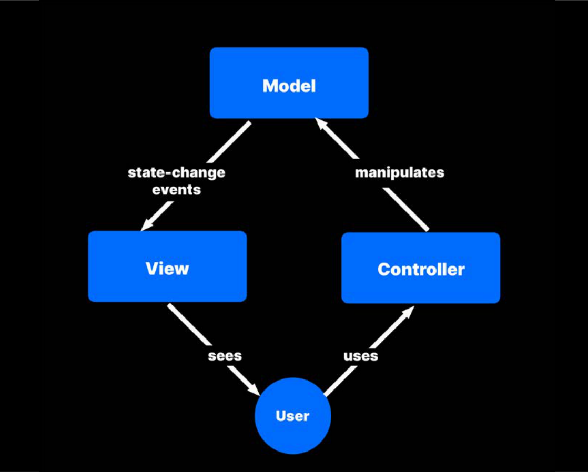
Sự phân tách mối quan tâm (separation of concerns) này cũng quy định cụ thể cách ba bộ phận tương tác với nhau: Model quản lý dữ liệu ứng dụng, trong khi View hiển thị dữ liệu đó cho người dùng. Controller xử lý đầu vào (input) và thực hiện mọi quyết định hoặc tính toán trên dữ liệu game, sau đó gửi kết quả trả ngược về cho Model.
Do đó, bản thân Controller không tự chứa bất kỳ dữ liệu game nào. View cũng vậy. Thiết kế MVC giới hạn rõ những gì mỗi tầng được phép làm: một phần nắm giữ dữ liệu, một phần xử lý dữ liệu, và phần cuối cùng hiển thị dữ liệu đó cho người dùng.
Nhìn bề ngoài, bạn có thể coi đây là một sự mở rộng của Nguyên lý đơn trách nhiệm (Single-responsibility principle) ở cấp độ kiến trúc. Mỗi bộ phận chỉ làm một việc và làm thật tốt việc đó — đây chính là một ưu điểm lớn của kiến trúc MVC.
Model View Presenter (MVP) và Unity
Khi phát triển một dự án Unity theo hướng MVC, bộ khung UI có sẵn của engine (dù là UI Toolkit hay Unity UI / UGUI) một cách tự nhiên sẽ đóng vai trò làm tầng View. Bởi vì engine đã cung cấp sẵn cho bạn một hệ thống triển khai giao diện người dùng hoàn chỉnh, bạn sẽ không cần phải tự phát triển từng thành phần UI riêng lẻ từ con số không.
Tuy nhiên, việc đi theo mẫu MVC truyền thống sẽ đòi hỏi phải viết code đặc thù ở tầng View để trực tiếp lắng nghe mọi thay đổi trong dữ liệu của Model lúc runtime.
Dù đó vẫn là một cách tiếp cận hợp lệ, nhiều nhà phát triển Unity lựa chọn sử dụng một biến thể của MVC, nơi Controller đóng vai trò làm bên trung gian (intermediary). Ở biến thể này, View không trực tiếp quan sát Model nữa. Thay vào đó, luồng hoạt động sẽ diễn ra như sau:
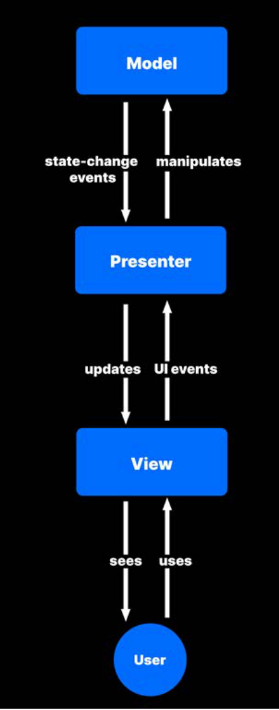
Biến thể này của MVC được gọi là thiết kế Model View Presenter, hay viết tắt là MVP. MVP vẫn bảo toàn nguyên tắc phân tách mối quan tâm với ba tầng ứng dụng riêng biệt. Tuy nhiên, nó thay đổi một chút trách nhiệm của từng phần.
Trong MVP, Presenter (tương ứng với Controller trong MVC) đóng vai trò là người trung gian kết nối các tầng còn lại. Nó truy xuất dữ liệu từ Model rồi định dạng dữ liệu đó để hiển thị lên View. MVP cũng hoán đổi tầng chịu trách nhiệm xử lý thao tác đầu vào: thay vì Controller, giờ đây chính View sẽ đảm nhận việc bắt thao tác đầu vào của người dùng (user input).
Hãy chú ý cách kiến trúc này tận dụng triệt để các sự kiện (events) và Observer pattern. Khi View thu nhận thao tác của người dùng thông qua các phần tử UI như nút bấm (buttons), công tắc bật tắt (toggles) và thanh trượt (sliders), nó sẽ chuyển tiếp các thao tác này tới Presenter thông qua các sự kiện. Presenter sau đó cập nhật Model dựa trên những tương tác này. Một khi dữ liệu trong Model đã được cập nhật, một sự kiện khác sẽ thông báo ngược lại cho Presenter. Presenter khi đó sẽ làm mới (refresh) giao diện UI bằng dữ liệu đã sửa đổi.
Ví dụ: Giao diện Thanh máu (Example: Health interface)
Để cụ thể hóa một ví dụ về MVP, hãy tưởng tượng một hệ thống đơn giản hiển thị lượng máu (health) của một nhân vật hoặc vật phẩm. Bạn có thể nhồi nhét tất cả mọi thứ vào chung một class duy nhất trộn lẫn cả dữ liệu lẫn giao diện UI, nhưng cách đó sẽ không thể mở rộng tốt. Việc thêm tính năng mới sẽ ngày càng trở nên rối rắm khi bạn cần phát triển hệ thống lớn hơn.
Thay vào đó, bạn có thể viết lại các thành phần máu theo hướng tập trung vào MVP bằng cách chia các script thành HealthModel và HealthPresenter.
Trong MVP, bất kỳ đối tượng nào cũng có thể nắm giữ dữ liệu máu, nhưng việc sử dụng một ScriptableObject ở đây hoạt động cực kỳ hiệu quả vì nó tách rời hành vi ra khỏi bản thân dữ liệu. Lớp HealthModel kế thừa ScriptableObject trong dự án mẫu trông như sau:
[CreateAssetMenu(fileName = "HealthData", menuName = "DesignPatterns/MVP/HealthModel")]
public class HealthModel : ScriptableObject
{
public event Action HealthChanged;
public int CurrentHealth;
public string LabelName;
// ...
public void Increment(int amount) { /* ... */ }
public void Decrement(int amount) { /* ... */ }
public void Restore() { /* ... */ }
}HealthModel chỉ lưu trữ giá trị máu thực tế là CurrentHealth, và gọi một sự kiện là HealthChanged mỗi khi giá trị đó thay đổi. HealthModel không chứa logic gameplay phức tạp mà chỉ cung cấp các phương thức cơ bản để tăng (Increment), giảm (Decrement) và khôi phục (Restore) dữ liệu. Nó cũng chứa thêm một trường chuỗi ký tự cho LabelName.
Ví dụ mẫu này sử dụng UI Toolkit, vì vậy tầng View được định nghĩa trong tệp UXML. Giao diện bao gồm bản thân thanh máu (progress bar), một nhãn trạng thái (status label) và một nhãn giá trị số (value label). Phần trình bày trực quan được định kiểu dáng bằng một tệp USS. Bạn có thể quản lý các tài nguyên này trong cửa sổ UI Builder hoặc chỉnh sửa trực tiếp dưới dạng văn bản.
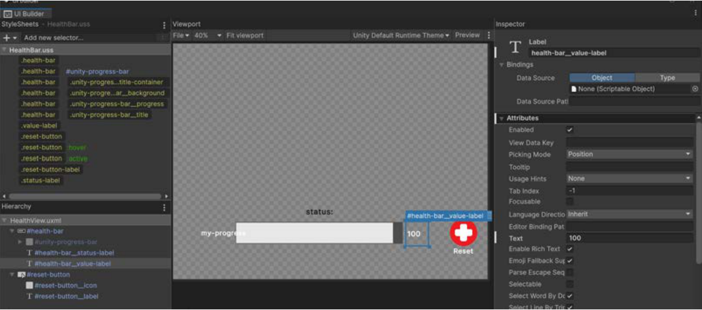
Lớp HealthPresenter đóng vai trò là người trung gian hòa giải (mediator) giữa tầng dữ liệu của Model và giao diện người dùng của View. Nó cập nhật UI để phản hồi lại những thay đổi từ HealthModel, đồng thời xử lý đầu vào của người dùng để sửa đổi dữ liệu máu.
Các trường được tuần tự hóa ([SerializeField]) sẽ tham chiếu tới UIDocument (tức là View) và tài nguyên ScriptableObject m_HealthModelAsset (tức là Model):
public class HealthPresenter : MonoBehaviour
{
[SerializeField] private UIDocument m_Document;
[SerializeField] private HealthModel m_HealthModelAsset;
private VisualElement m_Root;
private ProgressBar m_HealthBar;
private Label m_StatusLabel;
private Label m_ValueLabel;
private void OnEnable()
{
NullRefChecker.Validate(this);
m_Root = m_Document.rootVisualElement;
// ...
if (m_HealthModelAsset != null)
{
m_HealthModelAsset.HealthChanged += OnHealthChanged;
UpdateUI();
}
}
private void OnHealthChanged() => UpdateUI();
private void OnDisable()
{
if (m_HealthModelAsset != null)
m_HealthModelAsset.HealthChanged -= OnHealthChanged;
}
private void UpdateUI()
{
// ...
// Logic cập nhật các phần tử UI dựa trên dữ liệu của HealthModel
}
private void RegisterElements()
{
var resetButton = m_Root.Q<Button>("reset-button");
if (resetButton != null)
resetButton.clicked += RestoreHealth;
}
public void RestoreHealth() => m_HealthModelAsset.Restore();
public void ApplyDamage(int damage) => m_HealthModelAsset.Decrement(damage);
}Các GameObject khác sẽ cần sử dụng HealthPresenter để làm thay đổi giá trị máu thông qua hai phương thức ApplyDamage và RestoreHealth.
Quan trọng hơn cả, HealthPresenter bao gồm phương thức UpdateUI chịu trách nhiệm giữ cho View luôn đồng bộ với dữ liệu của Model. Phương thức này được gọi bên trong trình xử lý sự kiện OnHealthChanged — vốn được kích hoạt mỗi khi dữ liệu máu thay đổi bên trong HealthModel:
private void UpdateUI()
{
float healthPercentage = (float)m_HealthModelAsset.CurrentHealth / m_HealthModelAsset.MaxHealth;
// Cập nhật thanh tiến trình (progress bar) để phản ánh lượng máu hiện tại
m_HealthBar.value = healthPercentage * 100;
// Thay đổi màu sắc của thanh máu dựa trên tỷ lệ phần trăm máu
m_HealthBar.Q<VisualElement>("progress").style.backgroundColor =
new StyleColor(Color.Lerp(Color.red, Color.green, healthPercentage));
// Cập nhật nhãn trạng thái dựa trên tỷ lệ phần trăm máu
m_StatusLabel.text = healthPercentage switch {
< 0.33f => "Danger",
< 0.66f => "Neutral",
_ => "Good"
};
// Cập nhật nhãn hiển thị con số giá trị máu
m_ValueLabel.text = m_HealthModelAsset.CurrentHealth.ToString();
}Hàm UpdateUI tính toán giá trị của ProgressBar, đổi màu nền cho phần ruột thanh máu, và cập nhật cả hai nhãn chữ (Label). Đoạn logic chuyển đổi giá trị số nguyên thành chuỗi thông điệp trạng thái hoặc màu sắc tương ứng cho từng phần tử giao diện.
Điều quan trọng cần lưu ý là HealthPresenter phải đăng ký lắng nghe sự kiện từ HealthModel để kích hoạt phương thức UpdateUI mỗi khi giá trị CurrentHealth thay đổi.
Bất kỳ dữ liệu nào nằm ngoài phương thức UpdateUI, chẳng hạn như LabelName, sẽ chỉ được khởi tạo một lần lúc bắt đầu và không tự động cập nhật khi CurrentHealth thay đổi.
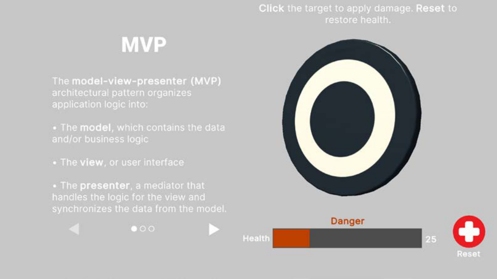
Trong dự án mẫu, hãy nhấp chuột vào bia mục tiêu để gây sát thương làm tụt thanh máu, hoặc khôi phục đầy máu bằng nút bấm dấu cộng. Các phần tử tương tác này sẽ thông báo cho HealthPresenter (để gọi ApplyDamage hoặc RestoreHealth) chứ không can thiệp trực tiếp vào dữ liệu máu.
Nếu bạn đang sử dụng hệ thống Unity UI (UGUI) truyền thống, bạn cũng có thể tìm thấy một phiên bản cũ hơn của màn chơi mẫu hỗ trợ UGUI. Hãy khám phá scene MVP nằm bên trong thư mục 7_MVP. Chỉ cần nhớ tắt tính năng SceneBootstrapper (Design Patterns > Don't Load Bootstrap on Play) trước khi mở trực tiếp scene đó.
Ưu điểm và nhược điểm (Pros and cons)
MVP (và MVC) thực sự tỏa sáng trong các ứng dụng quy mô lớn. Nếu tựa game của bạn đòi hỏi một đội ngũ đông đảo cùng phát triển và bạn dự kiến phải bảo trì nó trong một thời gian dài sau khi ra mắt, bạn sẽ nhận được nhiều lợi ích thiết thực sau:
-
Phân chia công việc mượt mà (Smooth division of work): Bởi vì bạn đã tách biệt View ra khỏi Presenter, việc phát triển và cập nhật giao diện người dùng có thể diễn ra gần như độc lập hoàn toàn với phần còn lại của mã nguồn.
Điều này cho phép bạn phân công lao động giữa các lập trình viên chuyên môn hóa. Nhóm của bạn có những chuyên gia lập trình giao diện (front-end / UI developers)? Hãy để họ phụ trách phần View. Họ có thể làm việc độc lập mà không giẫm chân lên những người khác. - Đơn giản hóa việc kiểm thử đơn vị (Simplified unit testing) với MVP và MVC: Các mẫu thiết kế này tách rời logic gameplay ra khỏi giao diện người dùng. Nhờ vậy, bạn có thể giả lập các đối tượng để kiểm thử code của mình mà không cần phải thực sự nhấn vào chế độ Play mode trong Editor. Điều này tiết kiệm một lượng thời gian khổng lồ.
- Mã nguồn dễ đọc và dễ bảo trì (Readable code that can be maintained): Bạn sẽ có xu hướng tạo ra các class nhỏ gọn hơn với mẫu thiết kế này, giúp chúng dễ đọc hiểu hơn. Ít sự phụ thuộc hơn thường đồng nghĩa với việc phần mềm của bạn có ít điểm dễ gãy đổ hơn và ít nơi để lỗi (bugs) ẩn nấp hơn.
Mặc dù MVC và MVP rất phổ biến trong lập trình web hoặc phần mềm doanh nghiệp, thông thường những lợi ích của chúng sẽ chưa thể hiện rõ rệt cho đến khi ứng dụng của bạn đạt tới một quy mô và độ phức tạp nhất định. Bạn sẽ cần cân nhắc những điểm sau trước khi triển khai một trong hai mẫu này vào dự án Unity của mình:
- Bạn cần phải lên kế hoạch trước (You need to plan ahead): Không giống như các mẫu thiết kế nhỏ lẻ khác được mô tả trong tài liệu này, MVC và MVP là những mẫu kiến trúc (architectural patterns) lớn hơn. Để sử dụng chúng, bạn sẽ phải phân tách các lớp của mình theo trách nhiệm ngay từ đầu — việc này đòi hỏi tính tổ chức và tốn nhiều công sức chuẩn bị ban đầu hơn.
-
Không phải mọi thứ trong dự án Unity đều khớp với mẫu thiết kế này: Trong một bản triển khai MVC hoặc MVP "thuần túy", bất cứ thứ gì kết xuất (renders) lên màn hình thực chất đều là một phần của View. Không phải mọi component trong Unity đều dễ dàng tách bạch rạch ròi giữa dữ liệu, logic và giao diện (ví dụ điển hình là
MeshRenderer). Ngoài ra, những đoạn script đơn giản có thể chẳng thu được mấy lợi ích từ MVC/MVP.
Bạn sẽ cần vận dụng sự phán đoán của mình để xem khu vực nào trong dự án sẽ hưởng lợi nhiều nhất từ mẫu kiến trúc này. Thông thường, bạn có thể để nhu cầu kiểm thử (unit tests) dẫn đường. Nếu MVC/MVP giúp việc kiểm thử thuận lợi hơn, hãy cân nhắc áp dụng chúng cho khía cạnh đó của ứng dụng. Ngược lại, đừng cố ép buộc toàn bộ dự án phải gò theo mẫu thiết kế này.
Model-View-ViewModel (MVVM)
Mặc dù MVP áp dụng tốt nguyên tắc phân tách mối quan tâm vào dự án của chúng ta, phần lớn công việc mà Presenter làm chỉ đơn thuần là vận chuyển dữ liệu qua lại giữa Model và View. Việc này làm phát sinh rất nhiều đoạn code khuôn mẫu lặp đi lặp lại (boilerplate code) chỉ để xử lý và đồng bộ dữ liệu.
Hãy xét lại kịch bản trước đó, nơi bạn có một chỉ số của người chơi như lượng máu (health). Chúng ta có thể biểu diễn giá trị này theo nhiều cách khác nhau trên giao diện UI. Chẳng hạn, giá trị máu có thể hiển thị thành màu sắc (màu xanh lá khi đầy máu, màu đỏ khi sắp chết) hoặc một dòng thông báo cảnh báo khi máu xuống thấp.
Trong MVP, Presenter sẽ phải truy vấn giao diện rồi thiết lập một số đoạn logic để cập nhật từng phần tử UI khi cần. Trong đa số trường hợp, tầng trình diễn chỉ đơn giản là lấy dữ liệu hiện có ra, định dạng và tiền xử lý nó cho phù hợp với View. Việc tự động hóa khâu này có thể đơn giản hóa quy trình làm việc của chúng ta đi rất nhiều.
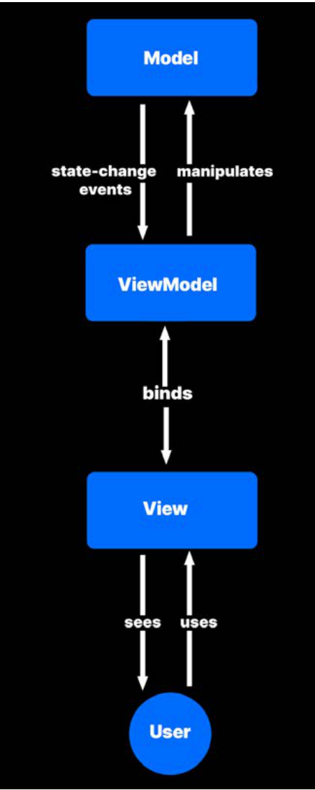
MVVM trong Unity 6
Chính vì vậy, Unity 6 tích hợp sẵn một hệ thống gắn kết dữ liệu lúc chạy (runtime data binding system), nâng cấp mẫu MVP lên thành mẫu Model-View-ViewModel (MVVM). Tương tự như MVP, MVVM cũng bao gồm ba thành phần chính:
- Model: Đại diện cho dữ liệu và logic nghiệp vụ (business logic) của ứng dụng. Đây có thể là bất kỳ đối tượng nào, thường mang hình thức của một
ScriptableObjecthoặcMonoBehaviour. - View: Là giao diện người dùng làm nhiệm vụ hiển thị dữ liệu và tương tác với người dùng. Trong UI Toolkit, View thường bao gồm một tệp UXML đi kèm với một tệp định kiểu USS.
- ViewModel: Rất giống với Presenter từ MVP, ViewModel đóng vai trò là cầu nối trung gian giữa Model và View. Thành phần này thường được triển khai dưới dạng một
MonoBehaviour.
Nghe quen thuộc chứ? Đúng vậy. MVVM thuộc cùng một gia đình với các mẫu thiết kế MVC. Điểm khác biệt then chốt nằm ở chỗ MVVM bổ sung thêm cơ chế gắn kết dữ liệu (data binding) (xem hộp thông tin bên dưới). Data binding giúp việc cập nhật View diễn ra tự động hơn mỗi khi các thuộc tính của Model thay đổi. Điều này đơn giản hóa và cắt giảm đáng kể lượng code lặp đi lặp lại dùng để đồng bộ dữ liệu nền tảng với giao diện người dùng.
Data binding (Gắn kết dữ liệu) đảm bảo sự đồng bộ hóa giữa các thuộc tính của những đối tượng không phải UI (như một thuộc tính kiểu string trên một MonoBehaviour) và các phần tử UI (chẳng hạn như thuộc tính value của một TextField). Một liên kết (binding) về bản chất là một đường nối giữa một thuộc tính phi-UI và phần tử UI hiển thị hoặc chỉnh sửa nó.
Việc thiết lập các binding sẽ tự động đồng bộ hóa những thay đổi giữa dữ liệu nền bên dưới và phần tử hiển thị trực quan tương ứng. Cơ chế này loại bỏ nhu cầu phải viết thủ công các hàm xử lý sự kiện (event handlers) cho từng lần cập nhật UI.
UI Toolkit trong Unity 6 hiện đã hỗ trợ runtime data binding. Tính năng này cho phép gắn kết các thuộc tính của đối tượng C# với các thuộc tính điều khiển UI trong suốt quá trình vận hành giao diện lúc runtime. Bạn cũng có thể sử dụng nó trong giao diện Editor UI miễn là không phải cho dữ liệu tuần tự hóa (serialized data).
Ví dụ: Dự án mẫu nâng cấp lên MVVM (Example: Updated sample project)
Màn chơi demo này lấy lại chính ví dụ thanh máu từ màn chơi mẫu MVP trước đó và xây dựng lại nó bằng kiến trúc MVVM kết hợp với tính năng runtime data binding của UI Toolkit.
Giống hệt như trong ví dụ MVP, màn chơi bao gồm các phần tử tương tác để cập nhật thanh máu của mục tiêu: nhấp chuột vào khối va chạm (collider) sẽ gây sát thương lên mục tiêu, trong khi nhấp vào nút bấm ở góc dưới bên phải sẽ khôi phục lại máu.
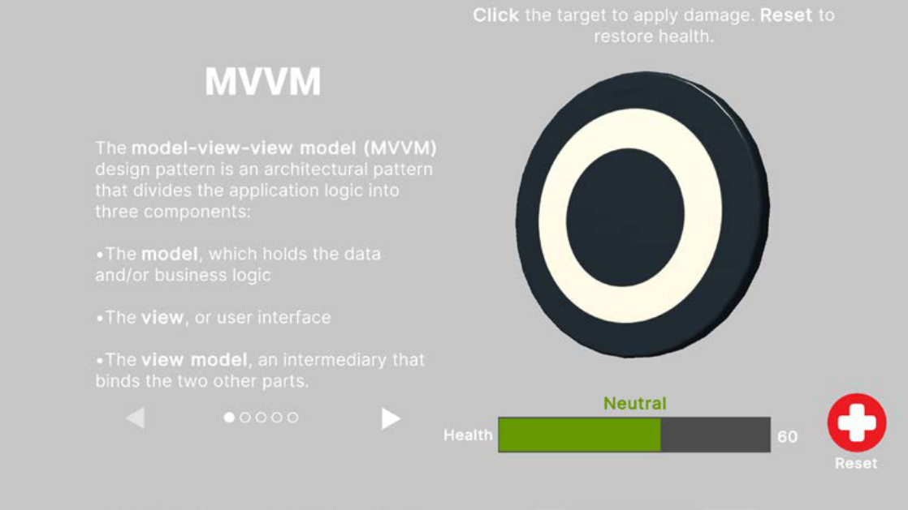
Việc chuyển đổi cùng một ví dụ thanh máu từ màn chơi MVP sang MVVM làm nổi bật những điểm khác biệt giữa hai mẫu thiết kế:
- Lớp
HealthModelmột lần nữa vẫn là mộtScriptableObjectchứa trườngCurrentHealthcùng một số phương thức cơ bản để tăng, giảm và đặt lại giá trị của nó. Nó chỉ bổ sung thêm một số bộ chuyển đổi dữ liệu (data converters) phục vụ cho việc gắn kết dữ liệu, còn lại gần như giống hệt bản cũ. - Phần
HealthViewgần như giữ nguyên không đổi, sử dụng cùng tệp UXML và bảng kiểu dáng USSHealthBar. - Lớp
HealthViewModelmột lần nữa đóng vai trò trung gian giữa Model và View. Tuy nhiên, phần lớn logic dùng để cập nhật giao diện UI đã được chuyển giao cho hệ thống runtime data binding của UI Toolkit đảm nhiệm. Component script này chỉ thiết lập tương tác cho nút bấm và minh họa cách tái tạo lại việc gắn kết dữ liệu bằng code C#.
Hãy chú ý cách các liên kết dữ liệu (data binding) giữa giao diện UI và ScriptableObject HealthModel tự động cập nhật:
- Trường Label Name gắn kết với nhãn UI (
Label) ở bên trái. Chỉnh sửa trường này sẽ tự động cập nhật chữ hiển thị trên màn hình. - Giá trị của trường Current Health xuất hiện trên nhãn
Labelở bên phải. Khi giá trị thay đổi, văn bản số sẽ tự động cập nhật theo. - Thuộc tính
textcủa nhãn trạng thái (status Label) hiển thị chữ "Good", "Neutral" hoặc "Danger" dựa trên giá trịCurrentHealth. Màu chữ của nhãn này cũng tự động nội suy chuyển màu giữa xanh lá và đỏ một cách tương ứng. - Màu sắc của thanh tiến trình (progress bar) cũng cập nhật khớp theo lượng máu. Phần này minh họa cách thiết lập data binding thông qua script
HealthViewModel.
Bằng cách tận dụng data binding, mẫu MVVM giúp đơn giản hóa đáng kể việc đồng bộ hóa Model với View.
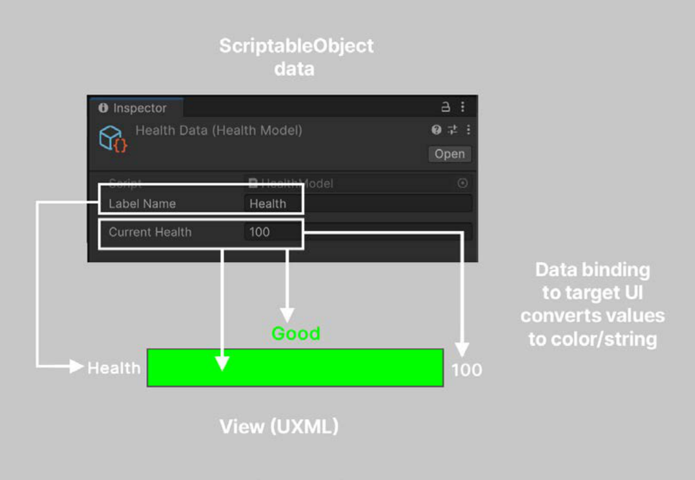
Gắn kết dữ liệu bằng công cụ trực quan: UI Builder (Data binding: UI Builder)
Hãy cùng xem xét cách thiết lập một ví dụ gắn kết dữ liệu cơ bản bằng công cụ UI Builder. Nếu giao diện UI cần chuyển đổi dữ liệu trực tiếp từ một ScriptableObject, việc gắn kết này thường có thể thực hiện ngay trên giao diện thiết kế mà không cần viết thêm một script riêng biệt nào.
Để chuẩn bị cho HealthModel, chúng ta có thể thêm một phương thức tĩnh (static) đi kèm thuộc tính [InitializeOnLoadMethod]. Phương thức RegisterConverters sẽ thêm một nhóm chuyển đổi ConverterGroup (được đặt tên là "Int to HealthBar" trong ví dụ này) có khả năng biến đổi các giá trị số nguyên biểu thị lượng máu thành màu sắc (từ xanh lá sang đỏ) hoặc thành các chuỗi ký tự đại diện ("Danger", "Neutral" hoặc "Good"). Những dữ liệu sau chuyển đổi này sẽ cung cấp phản hồi trực quan về màu sắc hoặc chữ viết trên giao diện.
Dưới đây là cách bạn triển khai bộ chuyển đổi này:
[InitializeOnLoadMethod]
public static void RegisterConverters()
{
var converter = new ConverterGroup("Int to HealthBar");
converter.AddConverter((ref int value) =>
new StyleColor(Color.Lerp(Color.red, Color.green, value / (float)k_MaxHealth)));
converter.AddConverter((ref int value) =>
{
float healthRatio = (float)value / (float)k_MaxHealth;
return healthRatio switch
{
>= 0 and < 1.0f / 3.0f => "Danger",
>= 1.0f / 3.0f and < 2.0f / 3.0f => "Neutral",
_ => "Good"
};
});
ConverterGroups.RegisterConverterGroup(converter);
}Sau đó, bạn có thể mở tệp UXML trong UI Builder và áp dụng gắn kết dữ liệu một cách trực quan:
- Tìm đến các phần tử UI mà bạn muốn gắn kết với thuộc tính dữ liệu. Trong dự án mẫu, chúng ta gắn kết
CurrentHealthvào nhãn trạng thái (status label) và nhãn giá trị (value label). - Nhấp chuột phải vào thuộc tính cần gắn kết (ví dụ thuộc tính
Text) và chọn Add binding… từ menu ngữ cảnh (hoặc Edit binding… nếu liên kết đã tồn tại sẵn).
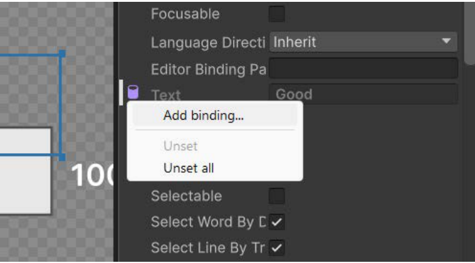
-
Tiếp theo, trong cửa sổ Add Binding / Edit Binding, hãy chọn Data Source (Nguồn dữ liệu), Data Source Path (Đường dẫn thuộc tính nguồn) và Binding Mode (Chế độ gắn kết).
Ví dụ, ở nhãn trạng thái, Data Source là tài nguyênHealthData. Data Source Path là thuộc tínhCurrentHealth. Binding Mode sử dụng thiết lậpTo Target, nghĩa là dữ liệu chỉ gắn kết một chiều từ nguồn tới UI (tức là giao diện UI thay đổi để phản ánh dữ liệu, chứ không chiều ngược lại).
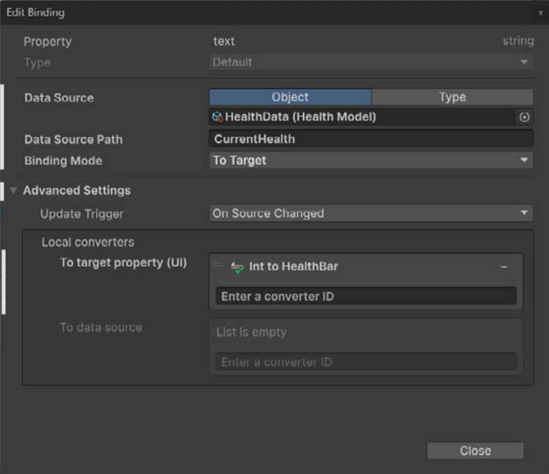
- Mở mục Advanced Settings nếu bạn muốn chọn một bộ chuyển đổi (converter) cụ thể từ
ScriptableObject.
Tại đây, mục Local converters sử dụng nhóm"Int to HealthBar"ConverterGroupđã được tạo trong ScriptableObjectHealthModel.
Một biểu tượng liên kết dữ liệu (data binding icon) sẽ xuất hiện trong Inspector của UI Builder ngay khi quá trình thiết lập hoàn tất:
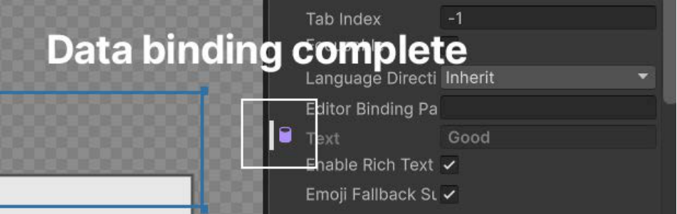
Một khi liên kết dữ liệu đã được thiết lập xong, giao diện người dùng sẽ tự động hoạt động trơn tru mà không cần viết thêm code cập nhật. Hãy so sánh quy trình làm việc tinh gọn này với lớp HealthPresenter từ màn chơi mẫu MVP trước đó.
Khi nhấp vào bia mục tiêu để làm giảm CurrentHealth, thanh tiến trình và các nhãn chữ sẽ lập tức cập nhật để phản ánh giá trị mới.
Hãy mở tệp UXML trong một trình soạn thảo văn bản để khám phá những gì thực sự diễn ra bên dưới hậu trường. Mỗi phần tử được thiết lập data binding đều có một khối thẻ <Bindings> chứa toàn bộ thông tin đã cài đặt trong UI Builder:
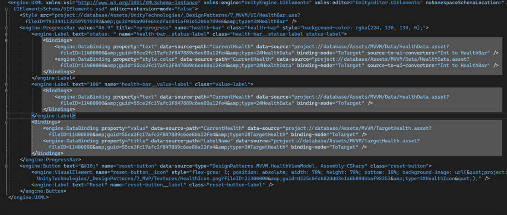
Ví dụ, phần tử Label có tên health-bar__status-label nằm phía trên thanh máu sẽ chuyển đổi giá trị CurrentHealth thành chuỗi văn bản và màu sắc thích hợp; các giá trị này sau đó được gắn vào hai thuộc tính "text" và "style.color".
Gắn kết dữ liệu bằng C# Scripting (Data binding: Scripting)
Trong một số trường hợp, bạn có thể cần thiết lập data binding bằng code C# thay vì dùng UI Builder. Cách này đặc biệt hữu ích khi một số phần tử UI có chứa các bộ phận nội bộ hoặc phần tử con (sub-elements) ẩn bên trong. Ví dụ, phần nền (background) và phần ruột thanh tiến trình (fill bar) của một ProgressBar không thể chọn trực tiếp được trong Inspector của UI Builder.
Đoạn mã dưới đây minh họa cách thiết lập data binding bên trong script HealthViewModel:
private void SetDataBindings()
{
var healthBar = m_Root.Q<ProgressBar>("health-bar");
var healthBarProgress = healthBar?.Q<VisualElement>(className: "unity-progress-bar__progress");
if (healthBarProgress != null)
{
healthBarProgress.dataSource = m_HealthModelAsset;
var binding = new DataBinding
{
dataSourcePath = new PropertyPath(nameof(HealthModel.CurrentHealth)),
bindingMode = BindingMode.ToTarget,
};
binding.sourceToUiConverters.AddConverter((ref int value) =>
new StyleColor(Color.Lerp(Color.red, Color.green,
(float)value / m_HealthModelAsset.MaxHealth)));
healthBarProgress.SetBinding("style.backgroundColor", binding);
}
}Phương thức SetDataBindings truy vấn cây phân cấp VisualElement để tìm ProgressBar có tên "health-bar" (và phần tử con "unity-progress-bar__progress" của nó). Sau đó, nó thiết lập liên kết dữ liệu giống hệt như cách làm trong UI Builder:
- Thiết lập nguồn dữ liệu (
dataSource): Trong trường hợp này, nguồn dữ liệu là tài nguyên ScriptableObjectHealthDatatrong dự án. - Tạo một đối tượng
DataBinding: Chứa đường dẫn thuộc tính nguồn (dataSourcePath) và chế độ gắn kết (bindingMode). - Định nghĩa các bộ chuyển đổi dữ liệu (data converters) nếu cần: Ví dụ trên chỉ ra cách chuyển đổi một giá trị số nguyên (
int) thành một màuStyleColoráp dụng lên phần ruột củaProgressBar.
Cuối cùng, gọi hàm SetBinding trên phần tử UI, truyền vào tên thuộc tính đích (ví dụ: "style.backgroundColor" cho màu ruột của ProgressBar) cùng với đối tượng binding. Lặp lại quy trình này cho mỗi thuộc tính phần tử nào cần gắn kết dữ liệu.
Kỹ thuật gắn kết bằng code này trở nên đặc biệt quan trọng khi không thể gắn kết trực tiếp tới một tài nguyên ScriptableObject có sẵn trên ổ đĩa — chẳng hạn như khi bạn cần khởi tạo động một bản thể (instance) ScriptableObject lúc runtime. Trong những tình huống mà mỗi GameObject gắn HealthViewModel phải tham chiếu tới đối tượng máu riêng biệt của chính nó, hãy thiết lập data binding thông qua C# scripting thay vì dùng UI Builder.
Hãy so sánh việc sử dụng data binding (MVVM) với ví dụ MVP trước đó không dùng data binding. Cả hai đều sử dụng chung một tệp UXML và USS:
| Không dùng Data Binding (MVP) | Có dùng Data Binding (MVVM) |
|---|---|
HealthPresenter phải đăng ký lắng nghe các sự kiện trên HealthModel để cập nhật giao diện. |
HealthModel đăng ký một ConverterGroup để biến đổi dữ liệu của model sang định dạng mà giao diện UI sử dụng được. |
HealthPresenter trực tiếp chuyển đổi các giá trị để hiển thị lên các phần tử UI bên trong hàm UpdateUI(). |
HealthViewModel tạo các liên kết (bindings) từ HealthModel tới UI thông qua hàm SetDataBindings() (hoặc thiết lập trực tiếp trong UI Builder). |
HealthModel lưu trữ dữ liệu và các logic nghiệp vụ cơ bản (Increment, Decrement). |
HealthModel lưu trữ dữ liệu và các logic nghiệp vụ cơ bản (Increment, Decrement). |
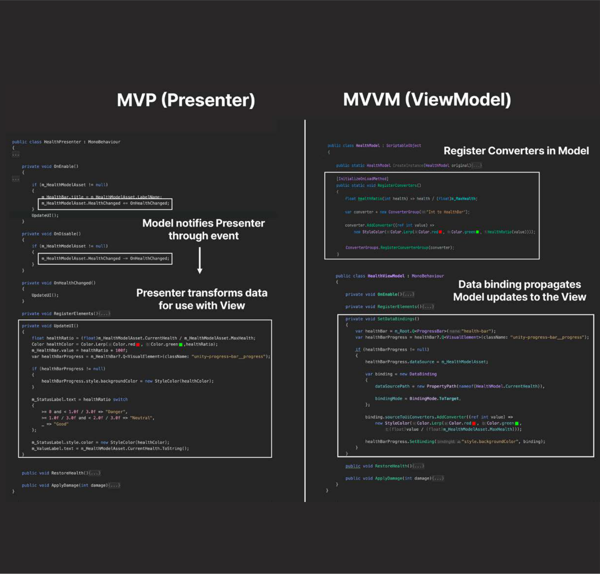
Tóm lại: Trong MVP, Presenter đăng ký nhận các sự kiện từ Model để phát hiện những thay đổi trạng thái. Khi nhận được thông báo có thay đổi, Presenter xử lý dữ liệu sang định dạng phù hợp cho View rồi cập nhật View tương ứng.
Trong MVVM, bạn bắt đầu bằng việc đăng ký các Converter cần thiết trong Model. Sau đó, thiết lập các liên kết dữ liệu (data bindings) trong ViewModel (hoặc UXML). Thiết lập này cho phép mọi thay đổi trong Model tự động cập nhật thẳng lên View thông qua các liên kết hiện có. Bạn có thể tìm đọc phần giới thiệu chi tiết hơn về runtime data binding trong tài liệu chính thức của Unity.
Ưu điểm và nhược điểm (Pros and cons)
MVVM thừa hưởng nhiều lợi ích của MVP, chẳng hạn như cải thiện khả năng kiểm thử (testability) và phân tách rõ ràng các mối quan tâm (separation of concerns). Cơ chế Data binding giúp giảm thiểu lượng code khuôn mẫu lặp lại (boilerplate code) cần thiết để giữ cho giao diện UI luôn đồng bộ với dữ liệu nền bên dưới, đồng thời giảm bớt số lượng sự kiện phải phát ra từ Model. Điều này mang lại mã nguồn ngắn gọn, súc tích, dễ đọc và dễ bảo trì hơn. Nó cũng cải thiện tính nhất quán của giao diện UI, giảm nguy cơ hiển thị dữ liệu cũ (stale) hoặc sai lệch.
Tuy nhiên, hãy cân nhắc chi phí thiết lập ban đầu cho từng liên kết dữ liệu. Việc cài đặt nguồn dữ liệu (data source), đường dẫn thuộc tính (data source path), chế độ gắn kết (binding mode), các bộ chuyển đổi (converters), v.v. đòi hỏi nhiều công sức chuẩn bị ban đầu hơn đôi chút. Mẫu thiết kế này có thể chỉ thực sự phù hợp với những giao diện người dùng quy mô lớn — nơi mà lợi ích thu được vượt trội hơn hẳn so với chi phí độ phức tạp tăng thêm.
Strategy Pattern (Mẫu Chiến Lược)
Diễn biến trong game (gameplay) hiếm khi đứng yên một chỗ. Tại thời điểm chạy game (runtime), các đối tượng game của bạn thường xuyên phải thích nghi với những điều kiện thay đổi và tự cập nhật hành vi tương ứng.
Ví dụ, hãy tưởng tượng một tựa game hành động lén lút (stealth game) nơi kiểu di chuyển của người chơi cần chuyển đổi từ đi rón rén qua mặt lính canh sang chạy nước rút tháo thân sau khi bị phát hiện. Hoặc hãy xét một hệ thống chiến đấu nơi các nhân vật có thể thi triển nhiều chế độ tấn công khác nhau như cận chiến (melee), tầm xa (ranged) hoặc phép thuật (magic).
Việc triển khai những hành vi linh hoạt này theo một cách sạch sẽ và dễ bảo trì có thể trở thành một thách thức lớn khi quy mô trò chơi ngày càng mở rộng. Rất giống với vấn đề ở State pattern, việc sử dụng câu lệnh switch có thể dẫn đến những lớp khổng lồ phình to quá mức (bloated classes).
Strategy pattern (Mẫu Chiến lược) mang đến lời giải cho bài toán này bằng cách gói gọn các thuật toán hoặc hành vi vào bên trong một đối tượng riêng và biến chúng thành các mảnh ghép có thể hoán đổi cho nhau (interchangeable). Mỗi đối tượng chiến lược (strategy object) đóng gói một hành vi riêng biệt có thể được thực thi một cách linh hoạt. Nhờ đó, một đối tượng khách (client object) có thể chuyển đổi hành vi của mình ngay lúc runtime bằng cách tham chiếu tới các đối tượng chiến lược khác nhau mà không cần phải sửa đổi cấu trúc lớp của chính nó.
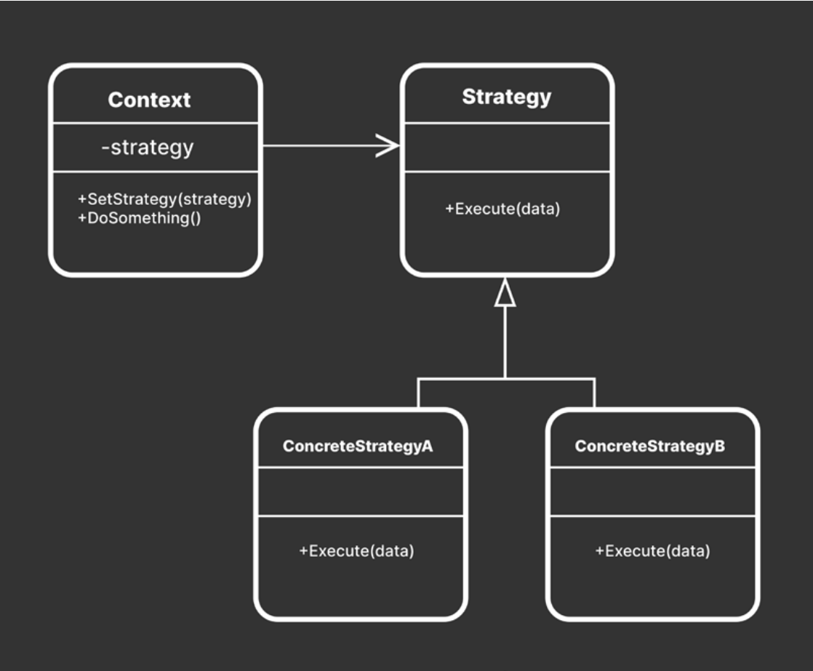
Ví dụ: Hệ thống Kỹ năng (Example: An ability system)
Hãy tưởng tượng bạn đang phát triển một trò chơi cho phép người chơi thu nhận các kỹ năng mới (abilities) khi họ tiến bộ trong game. Chẳng hạn, những kỹ năng này có thể đóng vai trò là phần thưởng hoặc "đặc quyền" (perks) khi đạt thành tích xuất sắc trong một tựa game bắn súng FPS cạnh tranh hoặc nhập vai hành động (Action RPG). Khi người chơi đủ điều kiện nhận một kỹ năng mới, một nút bấm UI tương ứng có thể xuất hiện trên màn hình để báo hiệu kỹ năng đó đã sẵn sàng sử dụng.
Trước khi tái cấu trúc (Before refactoring)
Ban đầu, bạn có thể tạo một script duy nhất gánh vác nhiệm vụ xử lý tất cả các kỹ năng đặc biệt. Cách tiếp cận này chạy được, nhưng khi bạn cần thêm kỹ năng mới hoặc chỉnh sửa các kỹ năng hiện có, nó sẽ trở nên rất khó bảo trì.
Thiết lập ban đầu để định nghĩa các kỹ năng này có thể trông như sau:
public class AbilityRunner : MonoBehaviour
{
public enum Ability
{
RadarPulse,
AirSupport,
FirstAid
}
public Ability currentAbility;
void Update()
{
if (Input.GetKeyDown(KeyCode.Space))
{
ActivateAbility(currentAbility);
}
}
void ActivateAbility(Ability ability)
{
switch (ability)
{
case Ability.RadarPulse:
// Logic Quét Radar
Debug.Log("Activating Radar Pulse");
break;
case Ability.AirSupport:
// Logic Gọi Không kích hỗ trợ
Debug.Log("Calling in Air Support");
break;
case Ability.FirstAid:
// Logic Sơ cứu / Hồi máu
Debug.Log("Using First Aid");
break;
}
}
}Script này sẽ ngày càng trở nên phức tạp và khó quản lý khi trò chơi phát triển. Mỗi kỹ năng mới lại đòi hỏi phải sửa đổi vào đoạn code hiện có, vi phạm trực tiếp Nguyên lý Đóng–Mở (Open-Closed Principle). Hãy nhớ rằng mục tiêu của chúng ta là giữ cho phần mềm mở với việc mở rộng nhưng đóng với việc sửa đổi.
Triển khai Strategy pattern (Implementing the strategy pattern)
Hãy thiết kế lại hệ thống kỹ năng bằng cách sử dụng Strategy pattern. Bắt đầu bằng việc tạo một lớp trừu tượng (abstract class) hoặc interface tên là Ability. Lớp này sẽ định nghĩa một phương thức tên là Use mà mọi kỹ năng cụ thể bắt buộc phải triển khai. Ví dụ dưới đây kế thừa từ ScriptableObject (nhưng bất kỳ đối tượng nào cũng có thể hoạt động tốt ở đây):
public abstract class Ability : ScriptableObject
{
public string abilityName;
public abstract void Use(GameObject gameObject);
}
[CreateAssetMenu(fileName = "RadarPulseAbility", menuName = "Abilities/RadarPulse")]
public class RadarPulse : Ability
{
public override void Use(GameObject gameObject)
{
Debug.Log("Activating Radar Pulse");
// Triển khai logic Quét Radar tại đây
}
}
[CreateAssetMenu(fileName = "AirSupportAbility", menuName = "Abilities/AirSupport")]
public class AirSupport : Ability
{
public override void Use(GameObject gameObject)
{
Debug.Log("Calling in Air Support");
// Triển khai logic Gọi Không kích tại đây
}
}
[CreateAssetMenu(fileName = "FirstAidAbility", menuName = "Abilities/FirstAid")]
public class FirstAid : Ability
{
public override void Use(GameObject gameObject)
{
Debug.Log("Using First Aid");
// Triển khai logic Sơ cứu / Hồi máu tại đây
}
}Những lớp cụ thể trên triển khai logic thực tế bên trong phương thức Use để thực hiện các hành động đặc trưng của riêng chúng. Các ScriptableObject này có thể được tuần tự hóa (serialized) và lưu trữ dưới dạng các tệp tài nguyên (project assets). Điều này cho phép chúng dễ dàng được kéo thả gán và chỉnh sửa ngay trong cửa sổ Unity Inspector.
Một đối tượng khách (client object) sau đó có thể tham chiếu tới các đối tượng chiến lược này. Ở đây, chúng ta tái cấu trúc lớp AbilityRunner để lúc runtime nó có thể thiết lập linh hoạt biến currentAbility cụ thể của mình. Trong ví dụ này, việc nhấn phím Space sẽ gọi phương thức Use nhằm thực thi logic của kỹ năng hiện tại:
public class AbilityRunner : MonoBehaviour
{
// Gán tài nguyên Ability này thông qua Unity Editor
public Ability currentAbility;
void Update()
{
if (Input.GetKeyDown(KeyCode.Space))
{
currentAbility.Use(gameObject);
}
}
}Mỗi kỹ năng, giờ đây đã được đóng gói thành đối tượng độc lập của riêng nó, có thể được chỉnh sửa, thêm mới hoặc gỡ bỏ mà không hề tác động tới mã nguồn cốt lõi của trò chơi. Cách làm này nâng cao tính linh hoạt của game, cho phép thay đổi kỹ năng động ngay lúc runtime. Nhờ vậy, việc tạo thêm các kỹ năng mới trở nên dễ quản lý và dễ mở rộng quy mô hơn rất nhiều.
Ví dụ: Dự án mẫu (Example: Sample project)
Dự án mẫu trình diễn một bản triển khai cơ bản của Strategy pattern. Người chơi có thể thu thập các vật phẩm trong mê cung để đạt được một "chuỗi điểm" (streak) mong muốn. Nút bấm kỹ năng sẽ cập nhật theo số điểm streak, hiển thị các kỹ năng khác nhau khi chuỗi streak của người chơi tăng lên. Nhấp chuột vào nút bấm đó sẽ kích hoạt kỹ năng đặc biệt hiện tại dưới dạng một chiến lược (strategy).
Những gì nút bấm thực sự làm được gói gọn bên trong một ScriptableObject. Điều đó có nghĩa là nó có thể được hoán đổi lúc runtime, dù là chỉnh trong Inspector hay thông qua logic game riêng biệt.
Trong bài mẫu cụ thể này, bộ đếm chuỗi điểm (streak counter) gắn kết đặc quyền (perk) hoặc kỹ năng đặc biệt tương ứng với giao diện UI, tự động điều chỉnh linh hoạt theo thành tích của người chơi.
Bởi vì mỗi chiến lược có thể hoán đổi đều được đóng gói trong lớp riêng của nó, việc thêm nhiều kỹ năng mới không làm ảnh hưởng tới các kỹ năng khác; bạn chỉ cần tạo thêm các tài nguyên kỹ năng ScriptableObject khi trò chơi yêu cầu.
Ở đây, nút bấm chỉ kích hoạt một số yếu tố trang trí (như hiệu ứng hạt hoặc âm thanh), nhưng phạm vi ứng dụng của nó hoàn toàn không chỉ giới hạn ở một thứ duy nhất.
Mỗi chiến lược được đóng gói có thể thực hiện một loạt hành động đa dạng được thiết kế riêng theo nhu cầu trò chơi của bạn: làm thay đổi cơ chế gameplay, cường hóa năng lực nhân vật, hoặc thậm chí biến đổi cả môi trường màn chơi.
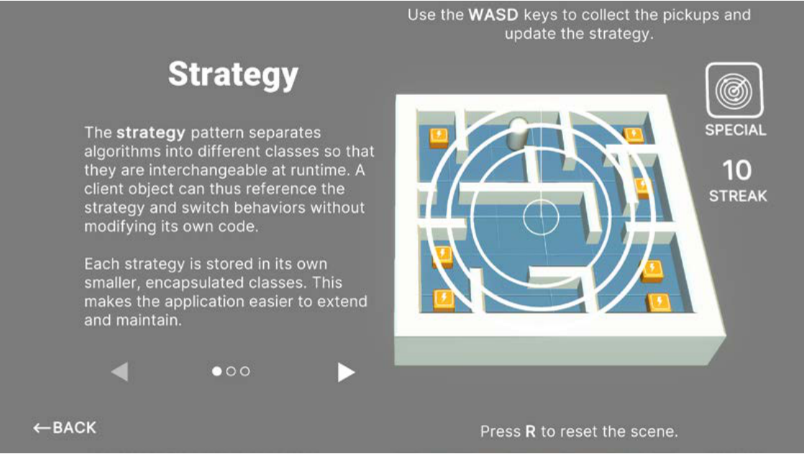
Ưu điểm và nhược điểm (Pros and cons)
Strategy pattern hoạt động rất tốt cho những tình huống mà bạn cần thay đổi cách trò chơi vận hành ngay lúc runtime. Bởi vì bạn có thể bổ sung tính năng mới mà không làm biến đổi mã nguồn hiện có, mẫu thiết kế này giúp hệ thống của bạn linh hoạt hơn, tuân thủ đúng các nguyên lý SOLID. Mỗi hành vi được phân ngăn gọn gàng vào lớp riêng của nó, giúp cho việc kiểm thử (testing) cũng trở nên dễ dàng hơn.
Về mặt hạn chế, việc có thêm nhiều lớp phải quản lý có thể làm tăng độ phức tạp của dự án. Do mỗi đối tượng chiến lược mang theo một lượng nhỏ chi phí bộ nhớ/quản lý (overhead), hãy cân nhắc các mẫu thay thế hoặc tối ưu hóa khác khi hiệu năng là yếu tố sống còn.
Việc được đóng gói độc lập cũng đồng nghĩa với việc bạn sẽ phải thiết kế cẩn thận cách thức các chiến lược này chia sẻ thông tin và giao tiếp với phần còn lại của hệ thống gameplay (ví dụ: thông qua các sự kiện - events). Bạn cần tránh gắn kết chặt (tightly coupling) các chiến lược với các component khác; nếu không, bạn sẽ làm triệt tiêu mất những lợi ích vốn có của mẫu thiết kế này.
Các ví dụ thực tế khác (More examples)
Strategy pattern không chỉ là công cụ để quản lý hệ thống kỹ năng. Bạn có thể áp dụng nó vào rất nhiều khía cạnh khác nhau của gameplay. Dưới đây là một vài ví dụ thực tiễn:
- Chiến lược di chuyển của nhân vật (Character movement strategies): Hãy tưởng tượng bạn đang làm một tựa game đi cảnh (platformer) nơi năng lực di chuyển của nhân vật có thể được nâng cấp tùy thuộc vào môi trường hoặc vật phẩm tăng sức mạnh. Lúc mới bắt đầu, người chơi có thể chỉ biết đi bộ và nhảy đơn, nhưng về sau họ mở khóa thêm khả năng nhảy đúp (double-jump), lướt (dash) hoặc thậm chí là bay lượn (fly).
- Hành vi AI (AI behavior): Chuyển đổi giữa các hành vi AI khác nhau dựa trên trạng thái game hoặc hành động của người chơi. Điều chỉnh trạng thái của kẻ địch linh hoạt giữa các chiến lược tấn công dồn dập (offensive), phòng thủ (defensive) hoặc tuần tra (patrol) tùy thuộc vào tình huống của người chơi.
- Chiến lược dẫn đường (Navigation strategies): Nếu bạn xây dựng một hệ thống tìm đường (pathfinding system), bạn có thể dùng Strategy pattern để định nghĩa nhiều thuật toán khác nhau (A*, đường đi ngắn nhất Dijkstra, v.v.) mà bạn có thể hoán đổi ngay trong lúc chơi tùy theo ngữ cảnh địa hình.
- Chiến lược tấn công (Attack strategies): Cho phép người chơi hoặc AI chuyển đổi qua lại giữa các loại vũ khí một cách linh hoạt với các chiến lược như
MeleeAttack(Cận chiến),RangedAttack(Tầm xa) hoặcAreaEffectAttack(Đánh lan diện rộng). Hoặc hãy tưởng tượng một tên trùm (Boss) có thể chuyển đổi chế độ chiến đấu hay tung ra các chiêu thức độc nhất tùy thuộc vào lượng máu còn lại của nó. - Điều chỉnh độ khó (Difficulty Adjustment): Tự động điều chỉnh độ khó của trò chơi dựa trên phong độ của người chơi. Hãy triển khai một chiến lược "độ khó thích ứng" (adaptive difficulty) thay đổi theo thời gian thực, hoặc cho phép người chơi chọn chiến lược "độ khó cố định" (fixed difficulty) để có thử thách ổn định.
Flyweight Pattern (Mẫu Hạng Ruồi / Chia Sẻ Dữ Liệu)
Những thế giới game rộng lớn thường chứa các cảnh màn chơi (scenes) dày đặc vô số GameObject và Component. Nếu các đối tượng tương tự nhau đều mang theo cùng những trường dữ liệu giống hệt nhau, điều này có thể dẫn đến sự trùng lặp dữ liệu (duplication of data) nghiêm trọng, làm tăng vọt mức tiêu thụ bộ nhớ (memory usage). Hãy thử xét một cảnh rừng cây nơi mỗi đối tượng cái cây đều tự lưu trữ một bản sao dữ liệu cấu hình của riêng nó.
Một cái cây trong cảnh game của chúng ta có thể lưu trữ:
- Các cấu trúc dữ liệu phức tạp để định nghĩa hình dáng cái cây. Nếu bạn tạo cây bằng thuật toán sinh tự động (procedurally generated), dữ liệu này có thể bao gồm các mảng (arrays) hoặc danh sách (lists) các số thực
float, màu sắcColorvà tọa độVector3. - Các đường cong hoạt ảnh (
AnimationCurve) định nghĩa cách cái cây đung đưa trước gió. - Các bản thể lớp tùy chỉnh (custom class instances) định nghĩa những đặc tính vật lý khác hoặc siêu dữ liệu gameplay (metadata).
Mặc dù từng trường dữ liệu riêng lẻ có thể tương đối nhỏ, hãy nhớ rằng việc nhân bản (duplicating) GameObject cũng sẽ sao chép toàn bộ các component đi kèm cùng các trường dữ liệu lưu bên trong chúng. Nếu một trường thuộc kiểu giá trị (value type — ví dụ: một struct, kiểu dữ liệu nguyên thủy như int/float, hoặc mảng lưu giá trị riêng), mỗi GameObject được nhân bản sẽ ôm một bản sao dữ liệu của riêng mình. Khi bạn phủ kín khu rừng trong thế giới game bằng hàng ngàn cái cây, sự dư thừa (redundancy) này sẽ cộng dồn lên rất nhanh chóng.
Flyweight pattern là một mẫu thiết kế tối ưu hóa giúp cắt giảm lượng dữ liệu trùng lặp trong game bằng cách tập trung hóa dữ liệu dùng chung (centralizing shared data). Nhờ đó, nó cho phép từng đối tượng riêng lẻ chỉ cần tham chiếu tới khối dữ liệu chung này thay vì tự lưu trữ bản sao của riêng mình.
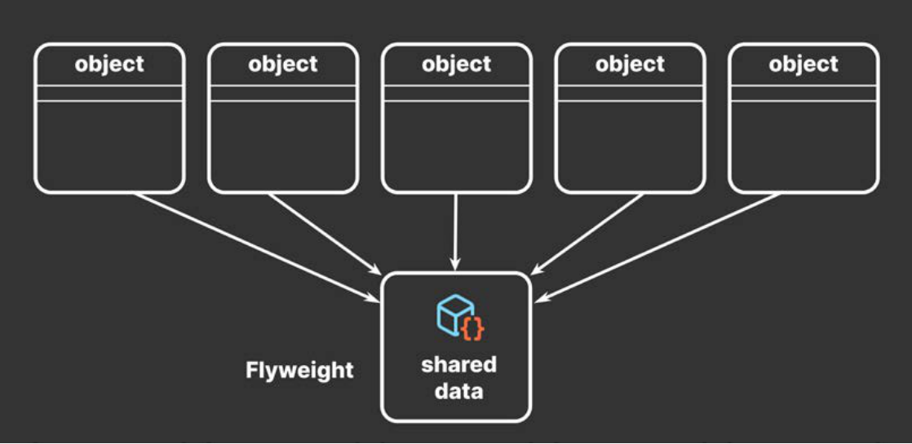
Nếu bạn đã quen thuộc với quy trình làm việc dùng Prefab trong Unity, hẳn bạn đã thấy ý tưởng này rất gần gũi. Chúng ta có thể chia sẻ nhiều dữ liệu nhất có thể giữa các đối tượng tương tự nhau, qua đó thu nhỏ đáng kể tổng dung lượng bộ nhớ chiếm dụng (memory footprint).
Ví dụ khi chưa tái cấu trúc (Unrefactored example)
Hãy xét một tựa game chiến thuật đông nghịt các đơn vị quân (gameplay units). Mỗi đơn vị có thể mang các thuộc tính như máu (health), sức tấn công (attack), phòng thủ (defense) và tốc độ di chuyển (movement). Để nhận diện từng đơn vị thuộc phe nào, bạn cũng có thể muốn gắn cho chúng tên phe phái (faction name) và biểu tượng (icon).
Khi chưa được tối ưu hóa, một đơn vị quân trong game có thể có một class trông như thế này:
public class UnrefactoredUnitInstance : MonoBehaviour
{
public string factionName;
public Sprite factionIcon;
public int baseHealth;
public int baseAttack;
public int baseDefense;
public int baseMovement;
// Trạng thái riêng biệt (Unique state) cho từng bản thể đơn vị quân này
public int health;
public int attack;
public int defense;
public int movement;
public Vector3 position;
private void Start()
{
RefreshUnitStats();
}
private void RefreshUnitStats()
{
health = baseHealth;
attack = baseAttack;
defense = baseDefense;
movement = baseMovement;
// ... cập nhật các component khác của đơn vị dựa trên dữ liệu phe phái
}
public void SetFactionData(string factionName, Sprite factionIcon,
int baseHealth, int baseAttack, int baseDefense, int baseMovement)
{
this.factionName = factionName;
this.factionIcon = factionIcon;
this.baseHealth = baseHealth;
this.baseAttack = baseAttack;
this.baseDefense = baseDefense;
this.baseMovement = baseMovement;
RefreshUnitStats();
}
}Ngoài các chỉ số hiện tại của riêng mình, mỗi đơn vị quân còn mang theo một khối dữ liệu phụ tải (payload) mà lý tưởng ra phải giữ nguyên không đổi đối với mọi đơn vị thuộc cùng một phe phái hoặc đội nhóm. Khi tạo một bản thể đơn vị mới bằng phương thức SetFactionData, bạn truyền toàn bộ dữ liệu phe phái chung vào — và lưu trữ một bản sao của nó trên từng đơn vị. Bạn càng thêm nhiều đơn vị quân, lượng dữ liệu dư thừa bị nhân bản và lưu trữ càng phình to.
Điều này không chỉ ngốn nhiều bộ nhớ hơn — nó còn khiến việc giữ cho mọi thứ được cập nhật và nhất quán xuyên suốt trò chơi trở nên khó khăn hơn. Việc đồng bộ thủ công dữ liệu trên hàng loạt đối tượng rất dễ phát sinh sai sót và dẫn đến sự thiếu nhất quán.
Với chỉ một vài đối tượng, đó chưa phải là vấn đề. Nhưng với một số lượng lớn đơn vị quân thuộc cùng một phe phái, mức tiêu thụ bộ nhớ tăng thêm sẽ bắt đầu trở nên rõ rệt — hoặc ít nhất là gây khó khăn cho việc quản lý.
Triển khai Flyweight pattern (Implementing the flyweight pattern)
Một giải pháp đơn giản là lưu trữ dữ liệu dùng chung vào một kho lưu trữ trung tâm, hay còn gọi là đối tượng flyweight (flyweight object).
Một ScriptableObject hoạt động cực kỳ ăn ý cho mục đích này vì nó vốn lý tưởng để lưu trữ những dữ liệu không cần thay đổi lúc runtime (ví dụ: các thiết lập, dữ liệu cấu hình gốc, v.v.).
Tái cấu trúc phần dữ liệu dùng chung sang một lớp riêng biệt sẽ giúp giảm thiểu sự dư thừa như sau:
// Đối tượng Flyweight (ScriptableObject)
[CreateAssetMenu]
public class FactionData : ScriptableObject
{
public string factionName;
public Sprite factionIcon;
public int baseHealth;
public int baseAttack;
public int baseDefense;
public int baseMovement;
}
// Đối tượng Ngữ cảnh (Context object)
public class UnitInstance : MonoBehaviour
{
public FactionData factionData;
private void Start()
{
RefreshUnitStats();
}
private void RefreshUnitStats()
{
health = factionData.baseHealth;
attack = factionData.baseAttack;
defense = factionData.baseDefense;
movement = factionData.baseMovement;
// ... Cập nhật các component khác của đơn vị dựa trên dữ liệu phe phái
}
// Trạng thái riêng biệt (Unique state) cho từng bản thể đơn vị quân này
public int health;
public int attack;
public int defense;
public int movement;
public Vector3 position;
// ... Thêm các trạng thái riêng biệt khác tại đây
}Khi áp dụng mẫu thiết kế này, lớp FactionData là một ScriptableObject đại diện cho dữ liệu phe phái dùng chung. Nó chứa các trường cho tên phe, biểu tượng và các chỉ số cơ bản gốc của đơn vị.
Lớp UnitInstance là đối tượng Ngữ cảnh (Context object) nắm giữ một tham chiếu tới ScriptableObject FactionData. Nó làm mới các chỉ số của mình dựa trên dữ liệu phe phái dùng chung đó. Bằng cách tách bạch dữ liệu dùng chung và dữ liệu riêng biệt, bạn vừa giảm được lượng bộ nhớ sử dụng, vừa loại bỏ nguy cơ thiếu nhất quán giữa các đối tượng trong game.
Ví dụ: Dự án mẫu (Example: Sample project)
Ví dụ được cung cấp trong dự án mẫu trình diễn Flyweight pattern bằng cách tối ưu hóa mức sử dụng bộ nhớ cho cả một hạm đội tàu vũ trụ (fleet of spaceships).
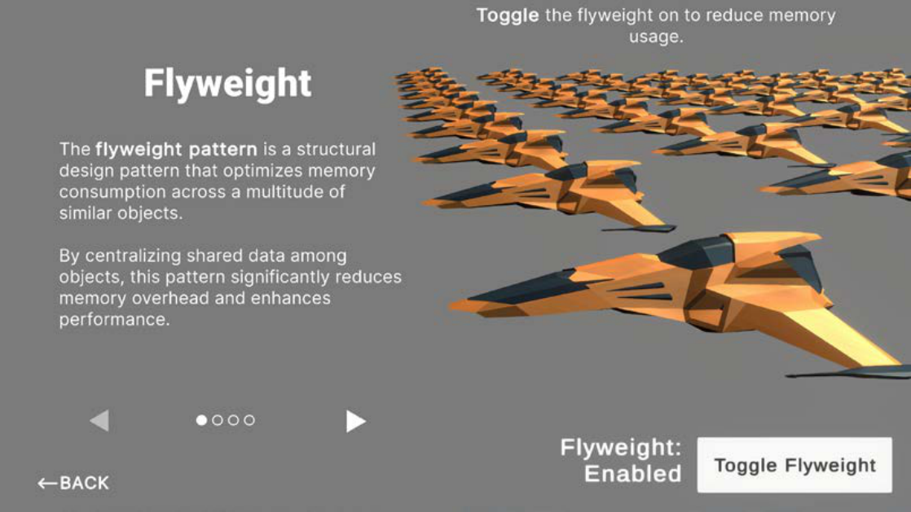
Nguyên lý cốt lõi của mẫu này là phân biệt rõ giữa dữ liệu trạng thái nội tại (intrinsic / shared) và dữ liệu trạng thái ngoại tại (extrinsic / unique):
- Dữ liệu nội tại (Intrinsic data): bất biến (immutable) và được chia sẻ chung giữa mọi bản thể, giúp giảm tiêu hao bộ nhớ.
- Dữ liệu ngoại tại (Extrinsic data): biến thiên khác nhau giữa từng bản thể và được lưu trữ riêng rẽ trên từng đối tượng.
Trong ví dụ này, ShipData là một ScriptableObject chứa dữ liệu nội tại dùng chung cho tất cả các tàu vũ trụ, chẳng hạn như tên đơn vị (UnitName), mô tả (Description), tốc độ (Speed), sức tấn công (AttackPower) và phòng thủ (Defense). Tất cả các tàu đều tham chiếu tới cùng một bộ dữ liệu duy nhất cho những thuộc tính này, giúp thu nhỏ tối đa dung lượng bộ nhớ chiếm dụng.
[CreateAssetMenu(fileName = "ShipData", menuName = "Flyweight/ShipData", order = 1)]
public class ShipData : ScriptableObject
{
public string UnitName;
public string Description;
public float Speed;
public int AttackPower;
public int Defense;
}
public class Ship : MonoBehaviour
{
[SerializeField] private ShipData m_SharedData;
[SerializeField] private float m_Health;
public void Initialize(ShipData data, float health)
{
m_SharedData = data;
m_Health = health;
}
public void DisplayShipInfo()
{
Debug.Log($"Name: {m_SharedData.UnitName}, Health: {m_Health}");
}
}
public class ShipFactory : MonoBehaviour
{
[SerializeField] private Ship shipPrefab;
[SerializeField] private ShipData sharedShipData;
[SerializeField] private float spacing = 1.0f;
void Start()
{
GenerateShips(10, 10);
}
public void GenerateShips(int rows, int columns)
{
for (int i = 0; i < rows; i++)
{
for (int j = 0; j < columns; j++)
{
Vector3 position = new Vector3(i * spacing, 0, j * spacing);
Ship newShip = Instantiate(shipPrefab, position, Quaternion.identity, transform);
newShip.Initialize(sharedShipData, 100);
// Giả định 100 là lượng máu khởi điểm ban đầu
newShip.name = $"Ship_{i * columns + j}";
}
}
}
}Bạn có thể tạo bản thể ScriptableObject từ menu ngữ cảnh được định nghĩa trong thuộc tính [CreateAssetMenu]. Lớp Ship đại diện cho từng chiếc tàu riêng lẻ trong hạm đội: mỗi bản thể tàu giữ một tham chiếu tới ShipData dùng chung và tự quản lý trạng thái riêng biệt của mình như lượng máu (m_Health). Lớp ShipFactory chịu trách nhiệm sinh ra cả hạm đội tàu, khởi tạo từng chiếc bằng một Prefab GameObject và dữ liệu ShipData dùng chung.
Bằng cách tập trung hóa dữ liệu dùng chung vào một ScriptableObject, bạn giảm được lượng bộ nhớ chiếm dụng trên hàng loạt bản thể tàu. Trong khi đó, dữ liệu riêng biệt như máu vẫn được quản lý độc lập bởi từng chiếc tàu.
Mặc dù mức tiết kiệm trên mỗi GameObject đơn lẻ không quá lớn, hiệu quả sẽ càng trở nên rõ rệt khi bạn thêm càng nhiều tàu vào scene. Số lượng lớn các đối tượng tương đồng chính là nơi khai thác tối đa sức mạnh của mẫu thiết kế này.
Hãy cài đặt thêm gói Memory Profiler từ Package Manager để có cái nhìn sâu sắc hơn về lượng bộ nhớ tiết kiệm được. Trong cửa sổ Memory Profiler (Window > Analysis > Memory Profiler), hãy tìm kiếm trong danh sách các đối tượng được quản lý (managed objects) để xác định kích thước bộ nhớ được cấp phát (allocated size). Hãy so sánh kết quả trước khi triển khai mẫu thiết kế với sau khi áp dụng đối tượng Flyweight:
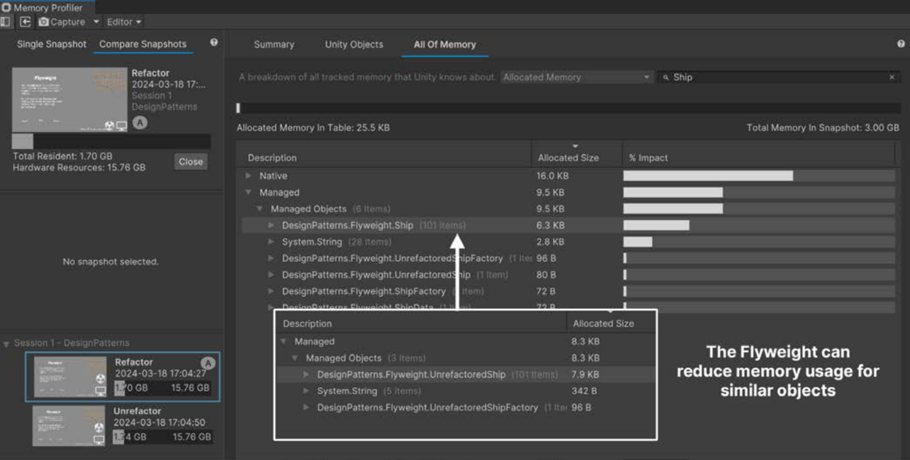
Dù màn chơi mẫu chỉ minh họa một vài trường dữ liệu được chia sẻ, lợi ích của Flyweight pattern có thể trở nên cực kỳ đáng kể trong các dự án quy mô lớn như game nhập vai (RPG) hoặc game chiến thuật với vô số đơn vị quân xuất hiện cùng lúc trên màn hình.
Hãy sử dụng Flyweight pattern để tiết kiệm tài nguyên bất cứ khi nào bạn có một số lượng lớn đối tượng chia sẻ các thuộc tính chung trong lớp cơ sở của chúng.
Hệ thống Prefab của Unity có thể được xem là một dạng triển khai của Flyweight pattern, nhưng có những điểm khác biệt về cách tiếp cận và phạm vi:
- Prefabs chia sẻ toàn bộ cấu trúc
GameObject, bao gồm tất cả các component và cây phân cấp con, trong khi Flyweight pattern cho phép chia sẻ có chọn lọc những trường dữ liệu hoặc thuộc tính cụ thể. - Flyweight pattern mang lại sự linh hoạt cao hơn trong việc tách biệt và quản lý dữ liệu dùng chung bởi vì nó không bị trói buộc vào một cấu trúc
GameObjectcụ thể nào.
Trong khi Prefab rất phù hợp để tái sử dụng các GameObject phức tạp, Flyweight cung cấp khả năng tối ưu hóa bổ sung khi vô số đối tượng chỉ chia sẻ chung một tập con các thuộc tính. Hai phương pháp này có thể bổ trợ hoàn hảo cho nhau: Prefab xử lý việc tái sử dụng cấu trúc tổng thể, còn Flyweight tối ưu hóa các trường dữ liệu dùng chung nằm bên trong những cấu trúc đó.
Ưu điểm và nhược điểm (Pros and cons)
Flyweight pattern phát huy tối đa sức mạnh trong những kịch bản có vô số đối tượng cùng chia sẻ một trạng thái chung. Điều này đặc biệt hữu ích trên các nền tảng hạn chế về tài nguyên phần cứng như thiết bị di động (mobile devices) — nơi việc giảm mức tiêu thụ bộ nhớ có thể cải thiện trực tiếp hiệu năng. Những ứng dụng đòi hỏi khởi tạo số lượng lớn đối tượng có thể tận dụng lợi thế của Flyweight để mở rộng quy mô hiệu quả hơn.
Tuy nhiên, hãy lưu ý rằng mẫu thiết kế này làm phát sinh thêm chi phí quản lý và độ phức tạp. Ngoài việc quản lý từng đối tượng riêng lẻ trong scene, bạn còn phải quản lý cả trạng thái dùng chung của chúng. Lợi ích từ Flyweight pattern chỉ thực sự trở nên rõ rệt khi có đủ số lượng lớn đơn vị để bù đắp lại phần độ phức tạp tăng thêm đó.
Ngoài ra, bởi vì bạn đang buộc các đơn vị phải dùng chung một bộ dữ liệu cơ bản giống nhau, điều đó sẽ làm hạn chế tính linh hoạt cá biệt của chúng. Bạn sẽ cần ghi đè (override) hoặc tách riêng dữ liệu nếu muốn làm cho từng đơn vị trở nên độc nhất, tương tự như quy trình làm việc với Prefab nhưng áp dụng cho các tập dữ liệu cụ thể.
Các ví dụ thực tế khác (More examples)
Mặc dù phần lớn những gì Flyweight pattern cung cấp cũng có thể đạt được bằng cách sử dụng Prefab, nó vẫn là một lựa chọn rất tốt cho các trường hợp sau:
- Mô phỏng đám đông (Crowd simulations): Bạn đang xây dựng một tựa game mô phỏng thể thao với đám đông khán giả trên khán đài? Hãy dùng mẫu này để chia sẻ mô hình 3D (models), hoạt ảnh (animations) và vân bề mặt (textures) nhằm tạo dựng những đám đông lớn và sống động.
- Trang phục nhân vật / Vũ khí và Tùy biến (Character/weapon skins and customization): Nhiều trò chơi cho phép người chơi tùy chỉnh vũ khí hoặc trang bị bằng các lớp sơn (skins) và phụ kiện gắn kèm (attachments). Các thuộc tính gốc của những vật phẩm này có thể được chia sẻ bằng Flyweight, và chỉ lưu trữ riêng lẻ phần tùy biến của từng người chơi.
- Đồ họa màn chơi (Level art): Khi thiết kế một khu rừng, hãy lấy tất cả các thuộc tính phổ quát của một cái cây và lưu trữ chúng trong lớp
Treecơ sở (hoặc dữ liệu dùng chung). Nhờ đó, bạn không cần phải lặp lại chúng trong các lớp con (nhưPineTree- Cây thông,MapleTree- Cây phong, v.v.).
Lưu ý rằng trong những kịch bản mà trò chơi của bạn có tới hàng chục ngàn đối tượng cùng chia sẻ dữ liệu (chẳng hạn như một cơn mưa đạn trong game bắn súng cường độ cao hoặc những đạo quân khổng lồ trong game chiến thuật hành động), hãy cân nhắc sử dụng Data-Oriented Technology Stack (DOTS) của Unity để thay thế. DOTS có thể mang lại khả năng tối ưu hóa hiệu năng vượt trội nhờ tập trung vào xử lý đa luồng (multithreading) và giảm thiểu sự phụ thuộc dữ liệu. Bạn có thể tìm đọc cuốn DOTS e-book for advanced Unity developers để tìm hiểu chuyên sâu về từng gói công nghệ trong hệ sinh thái DOTS.
Cũng như bất kỳ mẫu thiết kế nào khác, hãy đánh giá nhu cầu cụ thể của dự án trước khi triển khai, rồi cùng cả nhóm quyết định xem mẫu thiết kế nào sẽ mang lại lợi ích tốt nhất.
Dirty Flag (Mẫu Cờ Đánh Dấu Thay Đổi)
Đôi khi việc phát triển game bắt đầu trở nên phức tạp — hoặc ít nhất là cực kỳ tốn kém về mặt tính toán (computationally expensive). Dirty flag pattern (Mẫu Cờ đánh dấu thay đổi) có thể giúp ích rất nhiều khi bạn có hàng loạt phép tính toán hoặc tác vụ cập nhật diễn ra liên tục trong các màn chơi.
Một cờ đánh dấu (dirty flag) đơn giản chỉ là một biến kiểu logic (bool) cho biết liệu trạng thái của một đối tượng có bị thay đổi kể từ lần cuối cùng nó được xử lý hoặc kết xuất (rendered) hay không. Nếu một đối tượng bị đánh dấu là "dirty" (đã thay đổi / cần làm mới), nó sẽ được cập nhật; ngược lại, nó sẽ được bỏ qua (skipped), giúp tiết kiệm đáng kể tài nguyên tính toán.
Một trường hợp sử dụng phổ biến là khi duyệt qua một cây phân cấp phức tạp (complex hierarchy) hoặc quản lý một tệp cảnh game lớn. Dirty flag có thể giúp giảm thiểu các phép tính toán cho đến khi một số đối tượng nhất định bị đánh dấu là "dirty". Ví dụ, các Transform con có thể bỏ qua việc tính toán cập nhật cho đến khi Transform cha hoặc gốc thực sự yêu cầu cập nhật. Cơ chế này giúp cắt giảm tối đa những phép tính dư thừa đối với các đối tượng động thường xuyên thay đổi trạng thái.
Việc sử dụng Dirty flag pattern đồng nghĩa với việc đặt các điểm kiểm tra một cách chiến lược tại những nơi mà trạng thái đối tượng có khả năng thay đổi cao. Đó có thể là bên trong các trình xử lý sự kiện (event handlers), các bước cập nhật vật lý (physics updates), hoặc các hệ thống hoạt ảnh (animation systems). Các bước kiểm tra này đảm bảo rằng chỉ có một tập con của thế giới game được cập nhật để phản hồi lại hành động của người chơi hoặc sự kiện trong game. Mỗi một tài nguyên tiết kiệm được đều góp phần giảm tải chi phí xử lý chung (overhead).
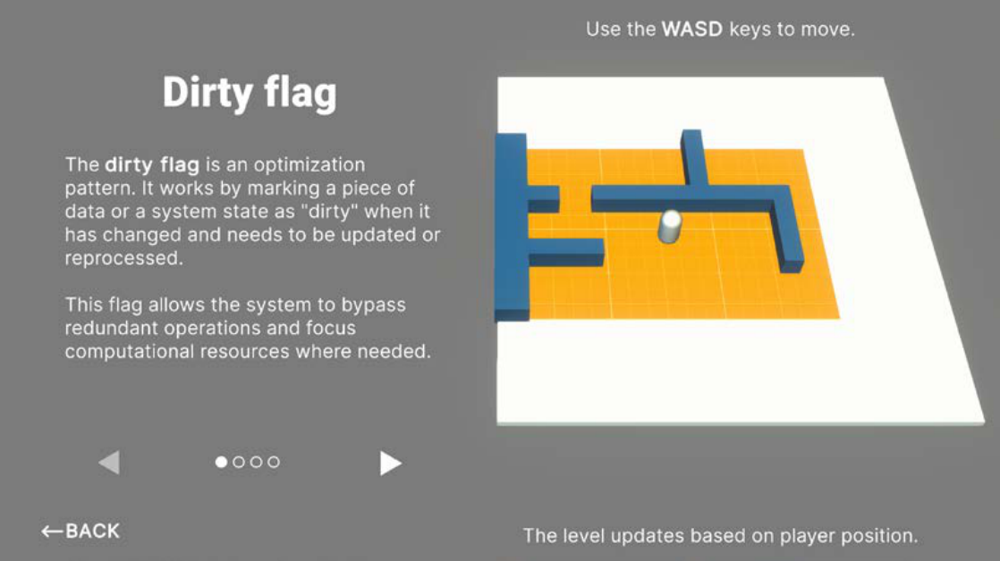
Ví dụ: Dự án mẫu (Example: Sample project)
Hãy xét một tựa game thế giới mở (open-world game) rộng lớn. Việc tải toàn bộ môi trường game lên cùng một lúc thường vượt quá giới hạn tài nguyên cho phép. Thay vào đó, một chiến thuật phổ biến là chỉ tải một phần của thế giới game nơi mà người chơi hiện đang nhìn thấy.
Để quản lý việc này, thế giới game có thể được chia nhỏ thành nhiều Unity scene con và chỉ tải từng scene lên khi cần thiết. Tuy nhiên, quá trình tải scene này tương đối chậm và có thể gây ra những nhịp khựng ngắn làm gián đoạn trải nghiệm chơi game.
Do đó, chúng ta chỉ muốn cập nhật thế giới game khi thực sự cần thiết. Trong ví dụ này, chúng ta đưa vào một cơ chế chỉ thực thi khi các điều kiện nhất định được thỏa mãn: chúng ta đánh dấu thế giới bằng một dirty flag khi nó sẵn sàng cho một đợt cập nhật. Trong các trường hợp còn lại, vòng lặp Update sẽ bỏ qua hoàn toàn đoạn logic nặng nề đó.
Khi người chơi di chuyển xuyên qua màn chơi, thế giới game này chỉ cập nhật khi người chơi tiến lại gần ranh giới của phân khu (sector) hiện tại. Cách làm này tiết kiệm tài nguyên tính toán nhằm đảm bảo trải nghiệm gameplay luôn liền mạch.
Hãy khám phá bản triển khai trong dự án mẫu để xem một cách áp dụng mẫu thiết kế này:
- Thế giới game được chia thành các phân khu hoặc vùng (sectors / regions), mỗi phân khu có nội dung màn chơi đi kèm cần được tải lên khi người chơi ở gần.
- Một script quản lý (
GameSectors) theo dõi chuyển động của người chơi và xác định xem những phân khu nào có liên quan dựa trên vị trí hiện tại của người chơi. - Mỗi phân khu có một cờ
IsDirtycho biết liệu nội dung của nó có cần được tải lên (load) hay dỡ bỏ (unload) hay không, dựa trên khoảng cách xa gần và tương tác của người chơi.
Bởi vì việc tải scene là một thao tác tương đối đắt đỏ, Dirty flag pattern đảm bảo rằng tác vụ cập nhật thế giới game nặng nề đó chỉ chạy khi thực sự cần thiết. Dưới đây, script GameSectors quản lý những phần nào của thế giới game được tải lúc runtime:
public class GameSectors : MonoBehaviour
{
public Player player;
public Sector[] sectors;
private void Update()
{
foreach (Sector sector in sectors)
{
bool isPlayerClose = sector.IsPlayerClose(player.transform.position);
// Kiểm tra xem trạng thái của phân khu (sector) có cần thay đổi hay không
if (isPlayerClose != sector.IsLoaded)
{
sector.MarkDirty();
}
// Cập nhật phân khu dựa trên cờ dirty flag của nó
if (sector.IsDirty)
{
if (isPlayerClose)
{
sector.LoadContent();
}
else
{
sector.UnloadContent();
}
// Đặt lại (reset) cờ dirty flag về trạng thái sạch
sector.Clean();
}
}
}
}Màn chơi mẫu minh họa trực quan sự thay đổi vật liệu và việc tải/dỡ scene để phản hồi lại khoảng cách của người chơi. Nhờ sử dụng Dirty flag pattern, các thao tác tải và dỡ nội dung chỉ được thực hiện tại thời điểm người chơi tiến đủ gần hoặc đi ra đủ xa khỏi một phân khu.
Điều này giảm thiểu việc xử lý và tiêu tốn bộ nhớ không cần thiết vì ứng dụng chỉ hiển thị một phần giới hạn của thế giới game tại một thời điểm.
Mỗi Sector trong ví dụ này duy trì khoảng cách riêng của nó tới người chơi làm ngưỡng (threshold) để tải hoặc dỡ tài nguyên. Dưới đây là đoạn mã trích từ lớp Sector:
public class Sector : MonoBehaviour
{
[Tooltip("Khoảng cách tối thiểu để tải nội dung (Minimum distance to load)")]
public float m_LoadRadius;
// ...
public bool IsLoaded { get; private set; } = false;
public bool IsDirty { get; private set; } = false;
void Awake()
{
// ...
Clean();
IsLoaded = false;
}
public void MarkDirty()
{
IsDirty = true;
Debug.Log($"Sector {gameObject.name} is marked dirty");
// ...
}
public void LoadContent()
{
IsLoaded = true;
// ...
// Logic tải nội dung scene từ dự án
}
public void UnloadContent()
{
IsLoaded = false;
// ...
// Logic dỡ bỏ nội dung scene
}
public bool IsPlayerClose(Vector3 playerPosition)
{
return Vector3.Distance(playerPosition, transform.position + m_CenterOffset) <= m_LoadRadius;
}
public void Clean()
{
IsDirty = false;
}
// ...
}Trong thiết lập này, một component SceneLoader sẽ tải và dỡ bỏ có chọn lọc từng phần của màn chơi khi người chơi di chuyển qua cấp độ. Camera trong màn chơi cung cấp góc nhìn từ trên xuống (top-down view) để minh họa rõ cách hệ thống vận hành. Trong một ứng dụng thực tế, hãy tưởng tượng một camera đi theo sau người chơi với tầm nhìn giới hạn; khi đó trò chơi chỉ cần tải và hiển thị có chọn lọc những khu vực nằm ngay trong tầm mắt của người chơi.
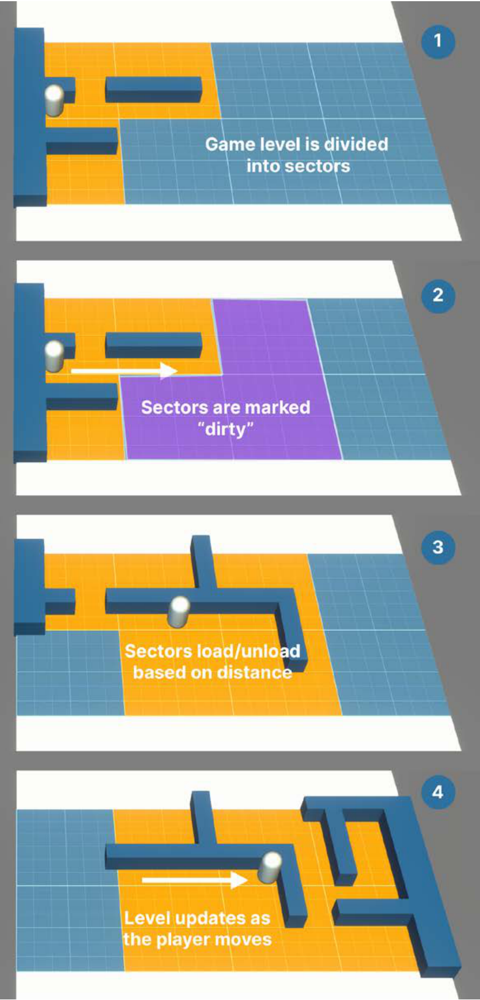
Mặc dù chúng ta vẫn có thể tối ưu hóa sâu hơn nữa (và thậm chí không cần dùng vòng lặp Update), ví dụ này đã cho thấy một trường hợp đơn giản và rõ ràng về việc sử dụng dirty flag để cắt giảm các lời gọi đắt đỏ tới SceneManagement API.
Ưu điểm và nhược điểm (Pros and cons)
Dirty flag pattern đặc biệt có giá trị trong các chương trình mô phỏng quy mô lớn hoặc các hệ thống sinh nội dung tự động (procedural content generation). Bởi vì những thao tác đắt đỏ chỉ thực thi khi thực sự cần thiết, nó giảm thiểu tối đa các phép tính dư thừa và thúc đẩy hiệu quả sử dụng bộ nhớ — một yếu tố sống còn đối với những nền tảng có bộ nhớ hạn hẹp như thiết bị di động.
Về mặt hạn chế, hãy lưu ý rằng dirty flag có thể tạo ra sự gắn kết chặt (tight coupling) giữa các thành phần. Điều này làm tăng thêm một tầng phụ thuộc và rủi ro. Ngoài ra, vì các tác vụ cập nhật bị trì hoãn cho đến khi cờ dirty được bật, trạng thái của ứng dụng có thể tạm thời bị trễ nhịp (lag), hiển thị dữ liệu hơi cũ cho đến khi đợt cập nhật cần thiết diễn ra.
Các thuật ngữ "dirty bit" và "caching" (lưu đệm) thường được nhắc đến cùng với mẫu thiết kế Dirty flag. Trong khoa học máy tính, mỗi khái niệm phục vụ một mục đích riêng biệt:
- Dirty flag pattern: là một chiến lược thiết kế phần mềm ở cấp độ cao (high-level software design strategy) nhằm giảm thiểu các tác vụ cập nhật không cần thiết trong ứng dụng.
- Dirty bit: ngược lại, là một chỉ báo ở cấp độ thấp (low-level indicator) dùng trong lập trình hệ thống để báo hiệu các trang bộ nhớ (memory pages) đã bị sửa đổi, cần phải được cập nhật ghi xuống trước khi bị thay thế.
- Caching (Lưu đệm): là kỹ thuật rộng hơn nhằm cải thiện tốc độ truy xuất dữ liệu bằng cách lưu trữ các bản sao dữ liệu tạm thời, và thường tận dụng chính các dirty flags hoặc dirty bits để đảm bảo dữ liệu trong bộ nhớ đệm luôn mới nhất.
Các ví dụ thực tế khác (More examples)
Hãy sử dụng Dirty flag bất cứ khi nào bạn muốn giảm thiểu tác động của một phép tính toán hoặc thao tác đắt đỏ, chẳng hạn như trong các trường hợp sau:
- Các cấu trúc phân cấp Transform phức tạp (Complex hierarchical transforms): Nếu bạn có các
Transformcon của một nhân vật hoạt ảnh, hãy giảm thiểu việc tính toán hoạt ảnh cho đến khiTransformcha cập nhật (ví dụ: chỉ cập nhật phần chi dưới nếu chi trên hoặc thân mình đang di chuyển). Nếu bạn làm một tựa game chiến thuật nơi các đơn vị quân di chuyển theo đội hình, hãy chỉ cho các đơn vị cập nhật chuyển động sau khi toàn bộ đội hình nhóm được đánh dấu là dirty. - Mô phỏng vật lý (Physics simulations): Đối với các mô phỏng vật lý liên quan đến tương tác phức tạp hoặc số lượng lớn đối tượng, chỉ tính toán lại khi trạng thái của đối tượng thực sự thay đổi (như vị trí, vận tốc, hoặc ngoại lực tác động) nhằm tối ưu hóa hiệu năng.
- Tìm đường (Pathfinding): Việc tính toán lại đường đi cho các tác nhân AI (AI agents) có thể rất tốn kém. Hãy sử dụng dirty flags để chỉ cập nhật đường đi khi chướng ngại vật dịch chuyển hoặc khi vị trí mục tiêu thay đổi.
- Sinh nội dung tự động (Procedural Content Generation): Rất giống với ví dụ tải scene ở trên, mẫu thiết kế này có thể báo cho hệ thống biết khi nào cần tái tạo lại địa hình tự động dựa trên các tác nhân kích hoạt cụ thể như sự di chuyển của người chơi hoặc các sự kiện trong game.
- Bố cục giao diện (UI Layouts): Trong một hệ thống UI phức tạp, các phần tử có thể cần tự sắp xếp lại vị trí khi một số điều kiện thay đổi (như thay đổi kích thước cửa sổ, cập nhật nội dung chữ, v.v.). Dirty flag pattern có thể được dùng để chỉ cập nhật lại bố cục (layout) khi cần thiết, tránh việc phải tính toán lại liên tục ở mọi khung hình. Ví dụ, một
VisualElementtrong UI Toolkit có sẵn phương thứcMarkDirtyRepaint. Tương tự, lớpEditorUtilitycủa Unity cũng có hai phương thứcClearDirtyvàSetDirty.
Kết Luận & Các Mẫu Thiết Kế Khác
Conclusion & Other Design Patterns
Nếu bạn mới làm quen với các mẫu thiết kế phần mềm, chúng tôi hy vọng tài liệu hướng dẫn này đã giúp bạn hiểu rõ một số mẫu phổ biến nhất mà bạn sẽ thường xuyên bắt gặp trong quá trình phát triển game với Unity.
Cho dù đó là một Factory để sản sinh các Prefab hay một State pattern cho trí tuệ nhân tạo AI, hãy luôn giữ sẵn những kỹ thuật này trong hành trang của mình để sử dụng khi nhu cầu phát sinh. Việc nhận biết khi nào và làm thế nào để áp dụng các mẫu thiết kế sẽ giúp bạn chinh phục thử thách tiếp theo trong Unity một cách vững vàng. Tất nhiên, đừng sa đà vào việc cố ép buộc một mẫu thiết kế cụ thể phải khớp vào bài toán; việc biết khi nào không nên dùng một pattern cũng quan trọng không kém việc biết cách dùng nó.
Một mẫu thiết kế có thể tăng tốc quy trình làm việc của bạn và mang lại một giải pháp thanh lịch cho một bài toán lặp đi lặp lại khi được áp dụng đúng chỗ. Khi đó, bạn có thể toàn tâm toàn ý tập trung vào điều quan trọng nhất: tạo ra một trải nghiệm thú vị và độc đáo cho người chơi của mình.
Vì vậy, dù bạn không cần phải "tự phát minh lại chiếc bánh xe", bạn hoàn toàn có thể tạo ra dấu ấn lăn bánh của riêng mình.
Tài liệu hướng dẫn này chỉ là một phần tuyển chọn nhỏ trong số rất nhiều mẫu thiết kế nổi tiếng trong ngành máy tính và phát triển game. Mặc dù chúng ta không đi sâu vào chi tiết của từng mẫu dưới đây, đây là phần tổng quan ngắn gọn về một số mẫu thiết kế khác có thể hữu ích cho bạn:
- Adapter (Bộ chuyển đổi): Cung cấp một giao diện trung gian (còn gọi là một lớp bọc – wrapper) giữa hai thực thể không liên quan đến nhau để chúng có thể làm việc cùng nhau.
- Double buffer (Bộ đệm kép): Cho phép bạn duy trì hai tập dữ liệu mảng trong khi các phép tính toán đang hoàn tất. Nhờ đó bạn có thể hiển thị một tập dữ liệu lên màn hình trong lúc xử lý tập dữ liệu kia ở hậu trường — rất hữu ích cho các mô phỏng tự động (ví dụ: cellular automata) hoặc kết xuất đồ họa.
- Interpreter / Bytecode (Trình thông dịch / Mã byte): Nếu bạn muốn bổ sung khả năng hỗ trợ bản độ (modding support) hoặc cho phép những người không phải lập trình viên mở rộng trò chơi của bạn, bạn có thể tạo một ngôn ngữ tối giản để người dùng chỉnh sửa trong một tệp văn bản bên ngoài. Thành phần bytecode sau đó sẽ dịch ngôn ngữ thông dịch đó thành mã game C#.
- Subclass sandbox (Hộp cát lớp con): Nếu bạn có nhiều đối tượng tương đồng nhưng mang các hành vi biến thiên khác nhau, bạn có thể định nghĩa những hành vi cơ sở đó ở phạm vi
protectedtrong một lớp cha. Sau đó, các lớp con có thể pha trộn và lắp ghép (mix and match) những phương thức có sẵn này để tạo ra các tổ hợp hành vi mới. - Type object (Đối tượng kiểu): Nếu bạn có quá nhiều chủng loại biến thể của một
GameObject, thay vì tạo hàng loạt lớp con kế thừa cho từng loại một, hãy định nghĩa tất cả các hành vi có thể có trong một lớp cha hoặc lớp trừu tượng duy nhất. Sự khác biệt về đặc tính riêng của từng đối tượng sẽ được đặt trong một tệp dữ liệu riêng biệt (chẳng hạn như mộtScriptableObject) có thể tùy chỉnh thoải mái mà không cần sửa code. Ví dụ, mẫu này cho phép bạn tạo ra một kho đồ gồm hàng trăm vật phẩm trông có vẻ khác nhau nhưng thực chất đều xuất phát từ cùng một class duy nhất. Nhà thiết kế game (game designer) có thể tùy biến tệp dữ liệu để làm cho từng món vũ khí trong game RPG trở nên độc nhất mà không cần tới sự trợ giúp của lập trình viên. - Data locality (Tính cục bộ dữ liệu): Nếu bạn tối ưu hóa dữ liệu sao cho chúng được lưu trữ liền kề nhau một cách hiệu quả trong bộ nhớ vật lý, bạn sẽ gặt hái được phần thưởng lớn về hiệu năng. Việc thay thế
classbằngstructcó thể giúp dữ liệu của bạn thân thiện hơn với bộ nhớ đệm CPU (cache-friendly). Kiến trúc ECS và DOTS của Unity chính là hiện thân của mẫu thiết kế này. - Spatial partitioning (Phân hoạch không gian): Với những màn chơi và thế giới game rộng lớn, hãy sử dụng các cấu trúc dữ liệu đặc biệt để tổ chức các
GameObjecttheo vị trí không gian. Lưới (Grid), Cây tiền tố không gian (Quadtree, Octree) và Cây tìm kiếm nhị phân (Binary search tree) đều là những kỹ thuật giúp bạn phân chia vùng và tìm kiếm đối tượng hiệu quả hơn gấp nhiều lần. - Decorator (Bộ trang trí): Cho phép bạn gắn thêm các trách nhiệm hoặc tính năng mới cho một đối tượng một cách linh hoạt mà không làm thay đổi cấu trúc hiện tại của nó. Một Decorator có thể ban thêm kỹ năng đặc biệt hoặc điều chỉnh một
GameObject— ví dụ: gắn thêm các hiệu ứng phụ trợ (perks) vào một vũ khí mà không cần phải sửa đổi lớp vũ khí cơ sở. - Facade (Mặt tiền): Cung cấp một giao diện thống nhất, đơn giản cho một hệ thống con phức tạp bên dưới. Nếu bạn có một
GameObjectvới các component AI, hoạt ảnh và âm thanh tách rời nhau, bạn có thể thêm một lớp bao bọc xung quanh các component đó (hãy hình dung một lớp điều khiểnPlayerquản lýPlayerInput,PlayerAudio, v.v.). Lớp Facade này che giấu các chi tiết rườm rà của những component gốc và làm đơn giản hóa việc gọi sử dụng từ bên ngoài. - Template method (Phương thức khuôn mẫu): Mẫu thiết kế này trì hoãn việc cài đặt các bước cụ thể của một thuật toán sang cho lớp con. Ví dụ, bạn có thể định nghĩa một bộ khung sườn (skeleton) của thuật toán hoặc cấu trúc dữ liệu trong một lớp trừu tượng, nhưng cho phép các lớp con ghi đè (override) một số bước nhất định mà không làm thay đổi cấu trúc tổng thể của thuật toán.
- Composite (Hợp thành): Sử dụng mẫu thiết kế cấu trúc này để tổ chức các đối tượng thành cấu trúc dạng cây (tree structures), rồi đối xử với toàn bộ cấu trúc tổ hợp đó giống hệt như cách bạn làm việc với từng đối tượng đơn lẻ. Bạn xây dựng cây từ cả các phần tử đơn giản (lá – leaf) lẫn các phần tử chứa (thùng chứa – container). Mọi phần tử đều triển khai chung một interface để bạn có thể chạy đệ quy cùng một hành vi trên toàn bộ cây.
Chuỗi tài liệu nâng cao dành cho lập trình viên Unity
Cẩm nang các mẫu thiết kế lập trình này là một phần trong chuỗi tài nguyên chuyên sâu do Unity biên soạn dành cho các lập trình viên Unity giàu kinh nghiệm. Các cuốn e-book khác trong bộ tài liệu này bao gồm:
- Create a C# style guide: Write cleaner code that scales (Xây dựng quy chuẩn code C#: Viết mã nguồn sạch hơn và dễ mở rộng quy mô)
- Create modular architecture in Unity with ScriptableObjects (Xây dựng kiến trúc mô-đun hóa trong Unity với ScriptableObjects)
Bạn có thể tìm thấy toàn bộ các cuốn e-book (cùng rất nhiều bài viết hướng dẫn thực hành) tại trung tâm Unity Best Practices Hub hoặc thông qua trang Best Practices trong tài liệu chính thức của Unity (Unity Documentation).